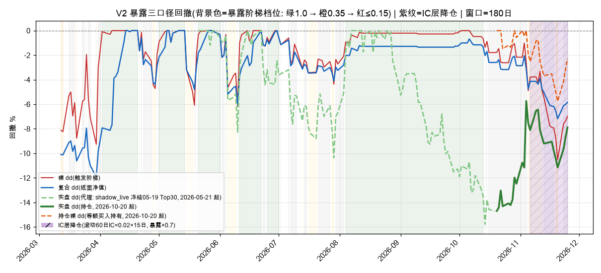
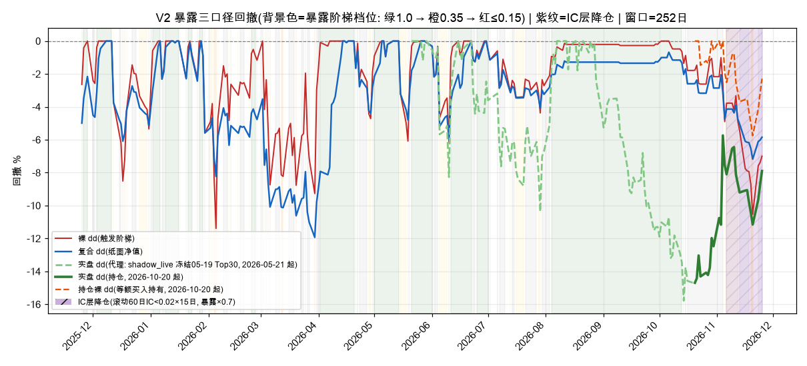
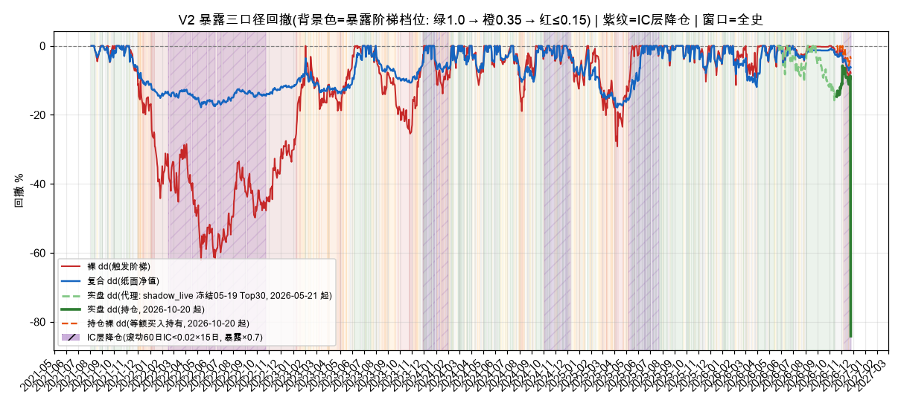
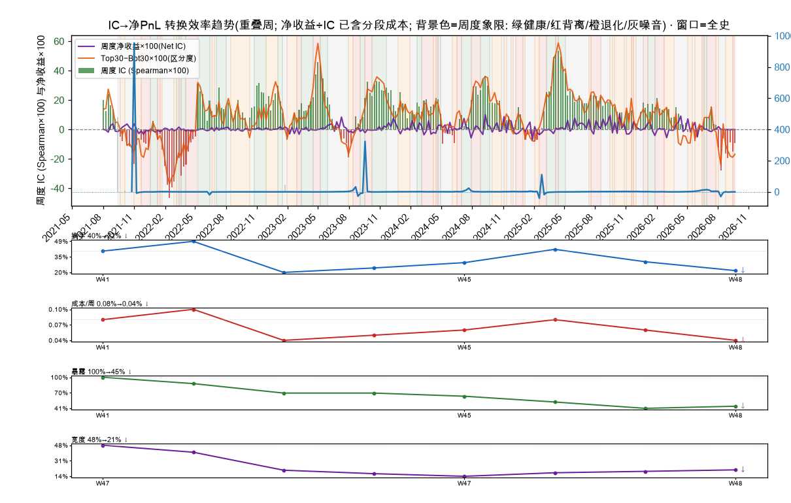
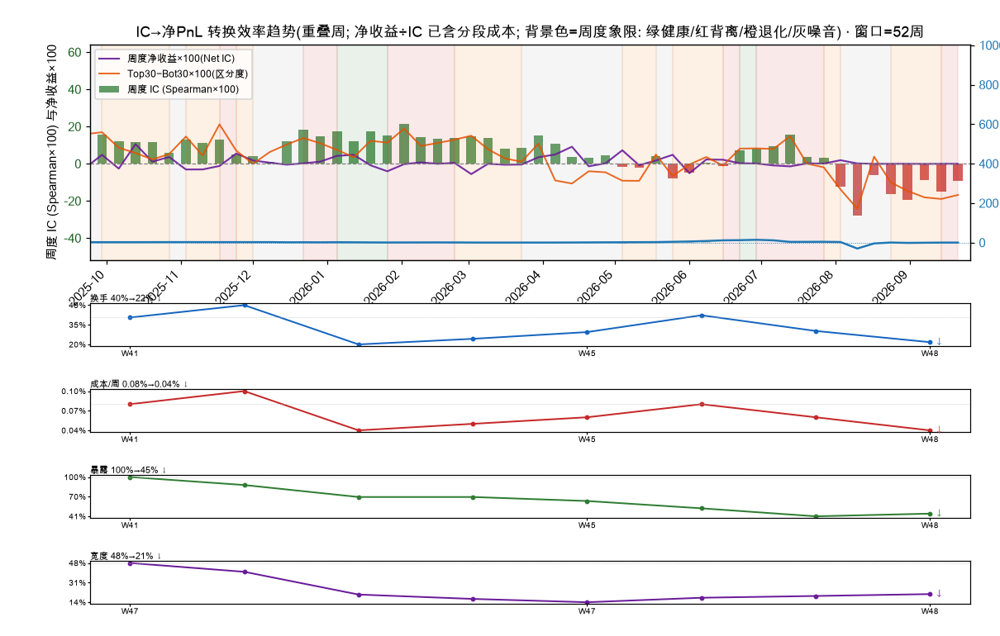
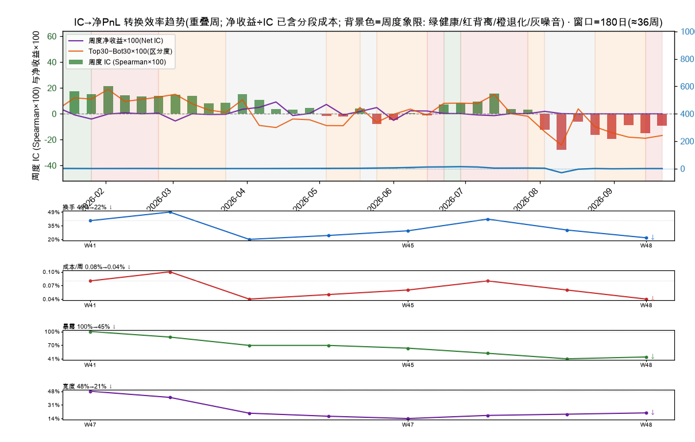

| 卡片 | 数据截至 | 年龄 | 刷新节奏 |
|---|---|---|---|
| 守门折 | 2026-09-10 | 76 天 | 标签全熟才跑 |
| 模型健康 | 2026-11-07 | 18 天 | 每周 |
| 生存性压力 | 2026-11-07 | 18 天 | 每周 |
| 前视审计 | 2026-11-07 | 18 天 | 每周 |
| 入场时机·burst 概率 | 2026-11-12 | 13 天 | 手动重跑 |
| 入场时机·弹簧 EV | 2026-11-12 | 13 天 | 手动重跑 |
| 入场时机·宽度价差 | 2026-11-12 | 13 天 | 手动重跑 |
| 入场时机·弹簧宽度豁免 | 2026-11-12 | 13 天 | 手动重跑 |
| 研究流水线 | 2026-11-23 | 2 天 | 手动触发 |
| 刻度护栏 | 2026-11-27 | 今日 | 每日 2 次 |
| 收盘价护栏 | 2026-11-27 | 今日 | 每日 2 次 |
| 指数新鲜度 | 2026-11-27 | 今日 | 每日 2 次 |
| 盘中观察 | 2026-11-27 | 今日 | 每日盘前 |
| 生产风控 | 2026-11-27 | 今日 | 每日盘后 |
| IC 阶梯 | 2026-11-27 | 今日 | 每日 2 次 |
| IC 效率 | 2026-11-27 | 今日 | 每日盘后 |
| 入场时机证据 | 2026-11-27 | 今日 | 每日 2 次 |
| 市场状态 | 2026-11-27 | 今日 | 每日 2 次 |
| V2 暴露 | 2026-11-25 | 今日 | 每日 2 次 |
| 分数桶校准 | 2026-11-27 | 今日 | 每日盘后 |
| 当日信号 ×5 | 2026-11-27 | 今日 | 每日 2 次 |
| 桶 | 样本 | 60D 均值 | 中位数 | 命中率 | 路径峰值 |
|---|---|---|---|---|---|
| B0 | 119,118 | +2.15% | +1.12% | 54.28% | +nan% |
| B1 | 119,850 | +1.96% | +1.38% | 54.82% | +nan% |
| B2 | 119,921 | +2.24% | +1.58% | 55.34% | +13.3% |
| B3 | 119,751 | +2.56% | +1.93% | 56.25% | +10.4% |
| B4 | 119,645 | +3.01% | +2.27% | 57.03% | +5.5% |
| B5 | 120,124 | +3.31% | +2.51% | 57.34% | +nan% |
| B6 | 119,752 | +4.00% | +3.03% | 58.23% | +nan% |
| B7 | 119,897 | +4.66% | +3.35% | 58.49% | +nan% |
| B8 | 119,874 | +5.77% | +4.10% | 59.12% | +9.4% |
| B9 | 120,571 | +8.95% | +5.61% | 59.25% | +11.9% |
| 档位 | 滚动 IC | 截至 | 历史分位 |
|---|---|---|---|
| T-20 | +0.0161 | 2026-10-28 | 30% |
| T-40 | +0.0258 | 2026-09-30 | 27% |
| T-60 | -0.0370 | 2026-08-24 | 12% |
| CODE | PRICE | SCORE | 趋势 | ΔRANK | H20 | H40 | H60 | L60 | ⬆D | ⬇D | TGT | STOP* | TREND | REASON |
|---|---|---|---|---|---|---|---|---|---|---|---|---|---|---|
| BHP×5综合行业 | 70.77 | +1.7 | ◆ 震荡 | — | +9.8% | +14.2% | +16.9% | -10.6% | 9 | 12 | 80 | — | ||
| TECH生物 | 72.65 | +1.7 | ◆ 震荡 | ↑116 | +5.0% | +8.9% | +13.0% | -8.3% | 7 | 6 | 80 | — | ||
| AGNC×5综合行业 | 8.31 | +1.7 | ◆ 震荡 | ↑1 | +7.4% | +10.4% | +13.6% | -10.5% | 6 | 15 | 9 | — | ||
| AGNCP×5金融 | 24.11 | +1.7 | ▼ 下降 | ↓1 | +4.0% | +6.6% | +8.3% | -8.8% | 9 | 7 | 26 | — | ||
| GSAT×4海外市场 | 85.87 | +1.7 | ◆ 震荡 | — | +5.6% | +9.1% | +13.1% | -7.8% | 11 | 6 | 95 | — | ||
| ICLR×2综合行业 | 198.78 | +1.7 | ▲ 上升 | ↑5 | +12.8% | +20.2% | +30.3% | -10.5% | 8 | 11 | 247 | — | ||
| FSLRATR 6.9%清洁能源 | 147.88 | +1.7 | ▲ 上升 | ↑5 | +16.4% | +25.4% | +35.3% | -13.3% | 10 | 8 | 190 | — | ||
| CG×2资管 | 39.44 | +1.7 | ◆ 震荡 | ↑13 | +10.9% | +15.7% | +19.5% | -12.0% | 7 | 13 | 46 | — | ||
| UHAL×5综合行业 | 54.30 | +1.7 | ◆ 震荡 | — | +8.9% | +12.9% | +17.2% | -9.6% | 9 | 11 | 62 | — | ||
| NTNXATR 7.5%软件 | 46.30 | +1.7 | ◆ 震荡 | ↑717 | +18.4% | +23.9% | +26.8% | -14.8% | 15 | 4 | 56 | — | ||
| ARCC资管 | 18.95 | +1.7 | ▲ 上升 | ↑2 | +5.1% | +7.9% | +10.1% | -7.8% | 8 | 12 | 20 | — | ||
| EC综合行业 | 13.33 | +1.7 | ▲ 上升 | ↑11 | +11.1% | +15.0% | +18.6% | -14.5% | 12 | 10 | 15 | — | ||
| FCX×2ATR 6.7%矿业/金属 | 48.55 | +1.7 | ▼ 下降 | ↓3 | +14.4% | +23.1% | +26.1% | -14.2% | 11 | 10 | 59 | — | ||
| YPFATR 6.1%综合行业 | 31.45 | +1.7 | ▲ 上升 | ↑5 | +13.5% | +17.6% | +20.9% | -18.4% | 12 | 6 | 37 | — | ||
| MPCATR 5.1%综合行业 | 346.27 | +1.7 | ▲ 上升 | ↑10 | +11.8% | +15.1% | +19.4% | -14.1% | 12 | 6 | 400 | — | ||
| VLO能源 | 323.00 | +1.7 | ▲ 上升 | ↑11 | +11.3% | +15.2% | +19.6% | -14.3% | 12 | 7 | 374 | — | ||
| ITIT服务 | 184.80 | +1.7 | ▲ 上升 | ↑9 | +14.1% | +25.8% | +35.0% | -11.9% | 9 | 12 | 237 | — | ||
| SSB银行 | 101.95 | +1.7 | ▲ 上升 | ↑2 | +5.9% | +8.8% | +11.4% | -8.3% | 11 | 11 | 111 | — | ||
| BKR综合行业 | 46.36 | +1.7 | ▲ 上升 | ↑3 | +10.0% | +14.5% | +16.6% | -12.4% | 10 | 10 | 53 | — | ||
| IFF化工 | 86.11 | +1.7 | ◆ 震荡 | ↑4 | +8.8% | +13.0% | +16.4% | -8.8% | 7 | 13 | 97 | — | ||
| MOHATR 5.7%医保 | 205.63 | +1.7 | ▲ 上升 | ↑16 | +13.3% | +21.2% | +28.0% | -14.1% | 9 | 11 | 252 | — | ||
| BCH银行 | 36.67 | +1.7 | ◆ 震荡 | ↓4 | +7.6% | +11.4% | +15.0% | -9.2% | 10 | 10 | 41 | — | ||
| FLUTATR 6.0%综合行业 | 70.76 | +1.7 | ▲ 上升 | ↑10 | +14.2% | +23.5% | +26.8% | -14.5% | 11 | 13 | 86 | — | ||
| IP×2海外市场 | 32.08 | +1.7 | ▼ 下降 | ↓17 | +11.6% | +17.3% | +21.8% | -11.9% | 9 | 13 | 38 | — | ||
| SWKSATR 5.7%半导体 | 82.01 | +1.7 | ▲ 上升 | ↑4 | +14.4% | +21.6% | +29.6% | -14.0% | 9 | 11 | 101 | — | ||
| RNR保险 | 344.87 | +1.6 | ▲ 上升 | ↑4 | +6.0% | +9.0% | +11.0% | -8.5% | 11 | 11 | 375 | — | ||
| KEP公用事业 | 9.32 | +1.6 | ◆ 震荡 | ↓12 | +12.0% | +19.5% | +22.8% | -11.7% | 6 | 12 | 11 | — | ||
| SYF×3信贷 | 68.73 | +1.6 | ▼ 下降 | ↓22 | +8.0% | +11.6% | +14.8% | -9.7% | 12 | 10 | 77 | — | ||
| EQH资管 | 53.18 | +1.6 | ▼ 下降 | ↓1 | +8.4% | +12.3% | +14.9% | -10.1% | 9 | 11 | 60 | — | ||
| LULU零售 | 107.44 | +1.6 | ▲ 上升 | ↑35 | +11.4% | +17.3% | +23.0% | -12.7% | 10 | 10 | 127 | — | ||
| ALB×3化工 | 81.50 | +1.6 | ◆ 震荡 | ↓23 | +16.8% | +25.7% | +32.0% | -13.7% | 12 | 9 | 102 | — | ||
| CHKP软件 | 163.77 | +1.6 | ▲ 上升 | ↑24 | +9.6% | +14.0% | +18.1% | -10.1% | 6 | 12 | 187 | — | ||
| SLV白银/贵金属 | 37.10 | +1.6 | ▲ 上升 | ↑13 | +16.0% | +29.5% | +34.6% | -15.1% | 10 | 8 | 47 | — | ||
| CRL海外市场 | 332.08 | +1.6 | ◆ 震荡 | ↑24 | +11.7% | +17.1% | +27.4% | -11.8% | 10 | 9 | 405 | — | ||
| SW×2综合行业 | 41.65 | +1.6 | ◆ 震荡 | ↑17 | +10.4% | +16.1% | +21.0% | -11.1% | 7 | 14 | 49 | — | ||
| TSLAATR 5.2%汽车 | 380.14 | +1.6 | ▲ 上升 | ↓1 | +10.9% | +14.7% | +18.9% | -12.3% | 10 | 10 | 438 | — | ||
| MCO金融 | 485.69 | +1.6 | ◆ 震荡 | ↓5 | +7.3% | +9.9% | +12.6% | -9.2% | 9 | 12 | 535 | — | ||
| SKMATR 5.9%综合行业 | 26.74 | +1.6 | ◆ 震荡 | ↑2 | +16.2% | +19.6% | +26.8% | -14.3% | 13 | 9 | 32 | — | ||
| MFC保险 | 42.26 | +1.6 | ◆ 震荡 | ↑9 | +5.8% | +8.6% | +10.9% | -8.1% | 11 | 11 | 46 | — | ||
| PBR综合行业 | 16.05 | +1.6 | ▲ 上升 | ↑19 | +10.3% | +14.0% | +17.2% | -15.1% | 10 | 9 | 18 | — | ||
| BXP综合行业 | 64.02 | +1.6 | ▲ 上升 | ↑21 | +7.3% | +10.1% | +12.9% | -9.8% | 8 | 12 | 71 | — | ||
| INTUATR 5.5%软件 | 271.72 | +1.6 | ◆ 震荡 | ↑273 | +12.1% | +19.4% | +17.2% | -22.9% | 13 | 6 | 309 | — | ||
| CET资管 | 52.69 | +1.6 | ◆ 震荡 | ↑2 | +6.1% | +8.5% | +10.8% | -8.7% | 10 | 12 | 57 | — | ||
| VOD综合行业 | 13.45 | +1.6 | ◆ 震荡 | ↑6 | +6.1% | +9.7% | +12.2% | -11.0% | 13 | 7 | 15 | — | ||
| HALO生物 | 95.11 | +1.6 | ◆ 震荡 | ↑8 | +10.4% | +15.3% | +19.4% | -13.9% | 11 | 10 | 110 | — | ||
| SUZ综合行业 | 9.55 | +1.6 | ◆ 震荡 | ↑14 | +7.7% | +12.1% | +15.3% | -9.3% | 8 | 12 | 11 | — | ||
| DVA综合行业 | 162.77 | +1.6 | ◆ 震荡 | ↑27 | +10.7% | +17.0% | +21.8% | -12.3% | 10 | 10 | 191 | — | ||
| FLS综合行业 | 82.46 | +1.6 | ◆ 震荡 | ↑6 | +10.4% | +15.3% | +20.3% | -11.0% | 9 | 10 | 96 | — | ||
| DINOATR 5.2%综合行业 | 85.76 | +1.6 | ▲ 上升 | ↑21 | +13.0% | +16.0% | +20.9% | -15.1% | 11 | 7 | 100 | — | ||
| LI汽车 | 11.88 | +1.6 | ◆ 震荡 | ↑1 | +10.8% | +15.5% | +20.7% | -11.9% | 5 | 14 | 14 | — |
| CODE | # | PHASE | P5 | P10 | BURST | 弹簧 | 放量 | 吸筹 | ⬆D | CLOSE | 空间 | TGT | STOP* | EV | 判定 |
|---|---|---|---|---|---|---|---|---|---|---|---|---|---|---|---|
| FSLRFirst Solar, Inc. Common Stock | 7 | Automatic Rally | 25% | 42% | 0.01 | ✓ | — | ✓ | 10 | 147.88 | +28.2% | 189.65 | 140.49* | +2.6% | ⭐ 验证组合 |
| KEPKorea Electric Power Corporation Common Stock | 27 | Secondary Test | 25% | 42% | 0.01 | ✓ | — | ✓ | 6 | 9.32 | +18.3% | 11.02 | 8.85* | +2.6% | ⭐ 验证组合 |
| ALBAlbemarle Corporation Common Stock | 31 | Automatic Rally | 21% | 36% | 0.24 | ✓ | — | ✓ | 12 | 81.50 | +25.6% | 102.36 | 77.42* | +2.6% | ⭐ 验证组合 |
| CHKPCheck Point Software Technologies Ltd. Ordinary Shares | 32 | Secondary Test | 48% | 65% | 0.93 | — | — | ✓ | 6 | 163.77 | +14.5% | 187.45 | 155.58* | +2.6% | ★ burst∩吸筹/弹簧 |
| SKMSK Telecom Co., Ltd. Common Stock | 38 | Markup | 38% | 55% | 0.89 | ✓ | — | — | 13 | 26.74 | +21.4% | 32.46 | 25.40* | +2.6% | ★ burst∩吸筹/弹簧 |
| TECHBio-Techne Corp Common Stock | 2 | Markup | 48% | 65% | 0.94 | — | — | — | 7 | 72.65 | +10.4% | 80.23 | 69.02* | +2.6% | ○ 爆发 |
| GSATGlobalstar, Inc. Common Stock | 5 | Markup | 48% | 65% | 0.94 | — | — | — | 11 | 85.87 | +10.5% | 94.90 | 81.58* | +2.6% | ○ 爆发 |
| AGNCPAGNC Investment Corp. Depositary Shares Each Representing a 1/1,000th Interest in a Share of 6.125% Series F Fixed-to-Floating Rate Cumulative Redeemable Preferred Stock | 4 | Markup | 38% | 55% | 0.88 | — | — | — | 9 | 24.11 | +6.6% | 25.71 | 22.90* | +2.6% | ○ 爆发 |
| NTNXNutanix, Inc. Class A Common Stock | 10 | Unknown | 38% | 55% | 0.87 | — | — | — | 15 | 46.30 | +21.4% | 56.23 | 43.98* | +2.6% | ○ 爆发 |
| ARCCAres Capital Corporation Common Stock | 11 | Unknown | 38% | 55% | 0.83 | — | — | — | 8 | 18.95 | +8.1% | 20.49 | 18.00* | +2.6% | ○ 爆发 |
| BXPBXP, Inc. Common Stock | 41 | Unknown | 38% | 55% | 0.84 | — | — | — | 8 | 64.02 | +10.3% | 70.62 | 60.82* | +2.6% | ○ 爆发 |
| BHPBHP Group Limited American Depositary Shares (Each representing two Ordinary Shares) | 1 | Markup | 28% | 46% | 0.11 | ✓ | — | — | 9 | 70.77 | +13.5% | 80.32 | 67.23* | +2.6% | ↻ 弹簧 |
| ECEcopetrol S.A. American Depositary Shares | 12 | Markup | 28% | 46% | 0.13 | ✓ | — | — | 12 | 13.33 | +14.8% | 15.31 | 12.66* | +2.6% | ↻ 弹簧 |
| VLOValero Energy Corporation Common Stock | 16 | Markup | 28% | 46% | 0.14 | ✓ | — | — | 12 | 323.00 | +15.7% | 373.55 | 306.85* | +2.6% | ↻ 弹簧 |
| ITGartner, Inc. Common Stock | 17 | Unknown | 28% | 46% | 0.12 | ✓ | — | — | 9 | 184.80 | +28.0% | 236.62 | 175.56* | +2.6% | ↻ 弹簧 |
| CODE | # | CLOSE | 买笔 | 买额 | 高管买 | 卖笔 | 卖额 | 净额 | 解禁 | 判定 |
|---|---|---|---|---|---|---|---|---|---|---|
| DINO | 49 | 85.76 | 1 | $1.11M | 1笔 | 1 | $0.1M | $+1.03M | — | ★ 高管买入 |
| MFC | 39 | 42.26 | 43 | $232.76M | 0笔 | 0 | $0.0M | $+232.76M | — | 内部人买入 |
| GSAT | 5 | 85.87 | 1 | $29.84M | 0笔 | 4 | $32.2M | $-2.34M | — | 内部人买入 |
| BKR | 19 | 46.36 | 1 | $0.53M | 0笔 | 1 | $0.0M | $+0.50M | — | 内部人买入 |
| YPF | 14 | 31.45 | 1 | $0.42M | 0笔 | 0 | $0.0M | $+0.42M | — | 内部人买入 |
| CODE | 量价 / 形态 / 资金流 | 持仓 | 条件式建议 |
|---|---|---|---|
| BMNR持有 | 价跌量缩, 缩量回调卖压有限; 上涨日均量为下跌日的 1.05 倍 空头排列(MA20<MA60)、波动扩张 | 浮盈亏 -37.7% | 💡 形态已是空头排列; **13.15 是关键防线**, 有效跌破要考虑减仓 |
| BAC持有 | 价跌量缩, 缩量回调卖压有限; 上涨日均量为下跌日的 0.89 倍 空头排列(MA20<MA60)、波动平稳 | 浮盈亏 -3.9% | 💡 形态已是空头排列; **48.45 是关键防线**, 有效跌破要考虑减仓 |
| MCD持有 | 价涨量增, 资金同步进场; 上涨日均量为下跌日的 0.99 倍 多头排列(MA20>MA60)、波动平稳 | 浮盈亏 +17.6% | 💡 若放量站上 284.16(最近阻力), 可继续持有等突破 |
| CODE | 量价 / 形态 / 资金流 | 持仓 | 条件式建议 |
|---|---|---|---|
| BHP | 价跌量增, 放量下跌是抛压释放; 上涨日均量为下跌日的 0.74 倍 空头排列(MA20<MA60)、波动扩张 | — | 💡 放量下跌中, **不接**; 等站上 71.45 再评估, 若跌破 70.75(最近支撑)则风险更大 |
| TECH | 价涨量增, 资金同步进场; 上涨日均量为下跌日的 0.69 倍 多头排列(MA20>MA60)、波动平稳 | — | 💡 暂无明确触发条件 —— 等放量站上 72.59(最近支撑)并缩量企稳 |
| AGNC | 价跌量缩, 缩量回调卖压有限; 上涨日均量为下跌日的 0.88 倍 空头排列(MA20<MA60)、波动平稳 | — | 💡 暂无明确触发条件 —— 等放量突破 8.32 或缩量企稳 |
| AGNCP | 价跌量缩, 缩量回调卖压有限; 上涨日均量为下跌日的 0.62 倍 空头排列(MA20<MA60)、波动平稳 | — | 💡 暂无明确触发条件 —— 等放量突破 24.12 或缩量企稳 |
| GSAT | 价涨量增, 资金同步进场; 上涨日均量为下跌日的 0.81 倍 多头排列(MA20>MA60)、波动扩张 GSAT: 近7个自然日内 1 条capital异动 —— 2026-10-09 特大单净流出62.77万且流入流出金额相差一倍以上，小单净流入204.45万，方向相反，代表大资金 | — | 💡 若放量突破 86.33(最近阻力)可考虑小仓位介入; 未突破前**不追** |
| ICLR | 价跌量缩, 缩量回调卖压有限; 上涨日均量为下跌日的 0.90 倍 多头排列(MA20>MA60)、波动平稳 ICLR: 近7个自然日内 3 条capital异动 —— 2026-10-08 主力资金近6日持续净流出，当日净流出金额比前3日均值低99%，表明主力资金在减缓流出。 / 202 | — | 💡 暂无明确触发条件 —— 等放量突破阻力 |
| FSLR | 价跌量增, 放量下跌是抛压释放; 上涨日均量为下跌日的 1.26 倍 空头排列(MA20<MA60)、波动扩张 | — | 💡 放量下跌中, **不接**; 等缩量站稳 146.79(最近支撑)上方再评估 |
| CG | 价涨量增, 资金同步进场; 上涨日均量为下跌日的 0.96 倍 空头排列(MA20<MA60)、波动平稳 | — | 💡 若放量突破 39.53(最近阻力)可考虑小仓位介入; 未突破前**不追** |
| UHAL | 价跌量增, 放量下跌是抛压释放; 上涨日均量为下跌日的 1.14 倍 空头排列(MA20<MA60)、波动平稳 | — | 💡 放量下跌中, **不接**; 等站上 54.36 再评估, 若跌破 54.17(最近支撑)则风险更大 |
| NTNX | 价跌量增, 放量下跌是抛压释放; 上涨日均量为下跌日的 0.58 倍 空头排列(MA20<MA60)、波动扩张 | — | 💡 放量下跌中, **不接**; 等站上 46.58 再评估 |
| ARCC | 价涨量缩, 上攻缩量、量价背离需警惕; 上涨日均量为下跌日的 1.11 倍 多头排列(MA20>MA60)、波动平稳 | — | 💡 若放量突破 18.98(最近阻力)可考虑小仓位介入; 未突破前**不追** |
| EC | 价跌量增, 放量下跌是抛压释放; 上涨日均量为下跌日的 0.76 倍 空头排列(MA20<MA60)、波动扩张 | — | 💡 放量下跌中, **不接**; 等站上 13.39 再评估, 若跌破 13.25(最近支撑)则风险更大 |
| FCX | 价跌量增, 放量下跌是抛压释放; 上涨日均量为下跌日的 0.77 倍 空头排列(MA20<MA60)、波动扩张 | — | 💡 放量下跌中, **不接**; 等站上 49.02 再评估, 若跌破 48.39(最近支撑)则风险更大 |
| YPF | 价跌量增, 放量下跌是抛压释放; 上涨日均量为下跌日的 0.58 倍 空头排列(MA20<MA60)、波动扩张 | — | 💡 放量下跌中, **不接**; 等站上 31.48 再评估, 若跌破 31.34(最近支撑)则风险更大 |
| MPC | 价跌量增, 放量下跌是抛压释放; 上涨日均量为下跌日的 0.81 倍 空头排列(MA20<MA60)、波动扩张 | — | 💡 放量下跌中, **不接**; 等缩量站稳 345.15(最近支撑)上方再评估 |
| VLO | 价跌量缩, 缩量回调卖压有限; 上涨日均量为下跌日的 0.91 倍 空头排列(MA20<MA60)、波动扩张 | — | 💡 暂无明确触发条件 —— 等放量突破 326.03 或缩量企稳 |
| IT | 价跌量增, 放量下跌是抛压释放; 上涨日均量为下跌日的 0.85 倍 空头排列(MA20<MA60)、波动平稳 | — | 💡 放量下跌中, **不接**; 等站上 185.34 再评估, 若跌破 184.62(最近支撑)则风险更大 |
| SSB | 价跌量缩, 缩量回调卖压有限; 上涨日均量为下跌日的 0.99 倍 多头排列(MA20>MA60)、波动平稳 | — | 💡 暂无明确触发条件 —— 等放量站上 101.63(最近支撑)并缩量企稳 |
| BKR | 价跌量增, 放量下跌是抛压释放; 上涨日均量为下跌日的 0.89 倍 空头排列(MA20<MA60)、波动扩张 | — | 💡 放量下跌中, **不接**; 等缩量站稳 46.07(最近支撑)上方再评估 |
| IFF | 价跌量增, 放量下跌是抛压释放; 上涨日均量为下跌日的 0.96 倍 空头排列(MA20<MA60)、波动扩张 | — | 💡 放量下跌中, **不接**; 等站上 86.57 再评估, 若跌破 86.03(最近支撑)则风险更大 |
| 研究# | 模型交易# | 代码 / 名称 | 收盘 | ALPHA | 执行状态 | 技术信号 | H20 | H40 | H60 | L60 | ⬆D | ⬇D | 参考买点 | 参考止损* | 目标 | TREND |
|---|---|---|---|---|---|---|---|---|---|---|---|---|---|---|---|---|
| 1 | 1 | BHPBHP Group Limited American Depositary Shares (Each representing two Ordinary Shares) · 综合行业 | 70.77 | +1.7 | 可执行 | 上涨突破 | +9.8% | +14.2% | +16.9% | -10.6% | 9 | 12 | 70.77 | 65.45* | 80.32 | |
| 2 | 2 | TECHBio-Techne Corp Common Stock · 生物 | 72.65 | +1.7 | 可执行 | 上涨 | +5.0% | +8.9% | +13.0% | -8.3% | 7 | 6 | 72.65 | 69.02* | 80.23 | |
| 3 | 3 | AGNCAGNC Investment Corp. Common Stock · 综合行业 | 8.31 | +1.7 | 可执行 | 上涨突破 | +7.4% | +10.4% | +13.6% | -10.5% | 6 | 15 | 8.31 | 7.80* | 9.22 | |
| 4 | 4 | AGNCPAGNC Investment Corp. Depositary Shares Each Representing a 1/1,000th Interest in a Share of 6.125% Series F Fixed-to-Floating Rate Cumulative Redeemable Preferred Stock · 金融 | 24.11 | +1.7 | 可执行 | 上涨 | +4.0% | +6.6% | +8.3% | -8.8% | 9 | 7 | 24.11 | 22.90* | 25.71 | |
| 5 | 5 | GSATGlobalstar, Inc. Common Stock · 海外市场 | 85.87 | +1.7 | 可执行 | 上涨 | +5.6% | +9.1% | +13.1% | -7.8% | 11 | 6 | 85.87 | 81.58* | 94.90 | |
| 6 | 6 | ICLRICON plc Ordinary Shares · 综合行业 | 198.78 | +1.7 | 可执行 | 未分类 | +12.8% | +20.2% | +30.3% | -10.5% | 8 | 11 | 198.78 | 182.01* | 246.96 | |
| 7 | 7 | FSLRFirst Solar, Inc. Common Stock · 清洁能源 | 147.88 | +1.7 | 可执行 | 自动反弹突破 | +16.4% | +25.4% | +35.3% | -13.3% | 10 | 8 | 147.88 | 127.54* | 189.65 | |
| 8 | 8 | CGThe Carlyle Group Inc. Common Stock · 资管 | 39.44 | +1.7 | 可执行 | 未分类突破 | +10.9% | +15.7% | +19.5% | -12.0% | 7 | 13 | 39.44 | 36.26* | 45.60 | |
| 9 | 9 | UHALU-Haul Holding Company Common Stock · 综合行业 | 54.30 | +1.7 | 可执行 | 上涨突破 | +8.9% | +12.9% | +17.2% | -9.6% | 9 | 11 | 54.30 | 51.17* | 61.77 | |
| 10 | 10 | NTNXNutanix, Inc. Class A Common Stock · 软件 | 46.30 | +1.7 | 可执行 | 未分类突破 | +18.4% | +23.9% | +26.8% | -14.8% | 15 | 4 | 46.30 | 39.37* | 56.23 | |
| 11 | 11 | ARCCAres Capital Corporation Common Stock · 资管 | 18.95 | +1.7 | 可执行 | 未分类 | +5.1% | +7.9% | +10.1% | -7.8% | 8 | 12 | 18.95 | 18.00* | 20.49 | |
| 12 | 12 | ECEcopetrol S.A. American Depositary Shares · 综合行业 | 13.33 | +1.7 | 可执行 | 上涨突破 | +11.1% | +15.0% | +18.6% | -14.5% | 12 | 10 | 13.33 | 12.13* | 15.31 | |
| 13 | 13 | FCXFreeport-McMoRan, Inc. Common Stock · 矿业/金属 | 48.55 | +1.7 | 可执行 | 上涨突破 | +14.4% | +23.1% | +26.1% | -14.2% | 11 | 10 | 48.55 | 42.00* | 58.68 | |
| 14 | 14 | YPFYPF Sociedad Anonima American Depositary Shares · 综合行业 | 31.45 | +1.7 | 可执行 | 上涨突破 | +13.5% | +17.6% | +20.9% | -18.4% | 12 | 6 | 31.45 | 27.60* | 36.71 | |
| 15 | 15 | MPCMarathon Petroleum Corporation Common Stock · 综合行业 | 346.27 | +1.7 | 可执行 | 上涨突破 | +11.8% | +15.1% | +19.4% | -14.1% | 12 | 6 | 346.27 | 311.05* | 399.90 | |
| 16 | 16 | VLOValero Energy Corporation Common Stock · 能源 | 323.00 | +1.7 | 可执行 | 上涨突破 | +11.3% | +15.2% | +19.6% | -14.3% | 12 | 7 | 323.00 | 291.94* | 373.55 | |
| 17 | 17 | ITGartner, Inc. Common Stock · IT服务 | 184.80 | +1.7 | 可执行 | 未分类突破 | +14.1% | +25.8% | +35.0% | -11.9% | 9 | 12 | 184.80 | 167.36* | 236.62 | |
| 18 | 18 | SSBSouthState Bank Corporation Common Stock · 银行 | 101.95 | +1.7 | 可执行 | 上涨突破 | +5.9% | +8.8% | +11.4% | -8.3% | 11 | 11 | 101.95 | 96.85* | 111.23 | |
| 19 | 19 | BKRBaker Hughes Company Class A Common Stock · 综合行业 | 46.36 | +1.7 | 可执行 | 上涨突破 | +10.0% | +14.5% | +16.6% | -12.4% | 10 | 10 | 46.36 | 42.50* | 52.52 | |
| 20 | 20 | IFFInternational Flavors & Fragrances, Inc. Common Stock · 化工 | 86.11 | +1.7 | 可执行 | 上涨突破 | +8.8% | +13.0% | +16.4% | -8.8% | 7 | 13 | 86.11 | 81.20* | 97.39 | |
| 21 | 21 | MOHMolina Healthcare Inc Common Stock · 医保 | 205.63 | +1.7 | 可执行 | 上涨突破 | +13.3% | +21.2% | +28.0% | -14.1% | 9 | 11 | 205.63 | 182.25* | 251.74 | |
| 22 | 22 | BCHBanco De Chile ADS · 银行 | 36.67 | +1.7 | 可执行 | 上涨突破 | +7.6% | +11.4% | +15.0% | -9.2% | 10 | 10 | 36.67 | 34.76* | 41.07 | |
| 23 | 23 | FLUTFlutter Entertainment plc Ordinary Shares · 综合行业 | 70.76 | +1.7 | 可执行 | 未分类突破 | +14.2% | +23.5% | +26.8% | -14.5% | 11 | 13 | 70.76 | 62.29* | 85.95 | |
| 24 | 24 | IPInternational Paper Company Common Stock · 海外市场 | 32.08 | +1.7 | 可执行 | 未分类突破 | +11.6% | +17.3% | +21.8% | -11.9% | 9 | 13 | 32.08 | 29.12* | 37.67 | |
| 25 | 25 | SWKSSkyworks Solutions, Inc. Common Stock · 半导体 | 82.01 | +1.7 | 可执行 | 自动反弹 | +14.4% | +21.6% | +29.6% | -14.0% | 9 | 11 | 82.01 | 72.61* | 101.44 | |
| 26 | 26 | RNRRenaissanceRe Holdings Ltd. Common Stock · 保险 | 344.87 | +1.6 | 可执行 | 上涨 | +6.0% | +9.0% | +11.0% | -8.5% | 11 | 11 | 344.87 | 327.63* | 375.27 | |
| 27 | 27 | KEPKorea Electric Power Corporation Common Stock · 公用事业 | 9.32 | +1.6 | 可执行 | 二次测试突破 | +12.0% | +19.5% | +22.8% | -11.7% | 6 | 12 | 9.32 | 8.59* | 11.02 | |
| 28 | 28 | SYFSynchrony Financial Common Stock · 信贷 | 68.73 | +1.6 | 可执行 | 上涨突破 | +8.0% | +11.6% | +14.8% | -9.7% | 12 | 10 | 68.73 | 64.43* | 76.86 | |
| 29 | 29 | EQHEquitable Holdings, Inc. Common Stock · 资管 | 53.18 | +1.6 | 可执行 | 未分类突破 | +8.4% | +12.3% | +14.9% | -10.1% | 9 | 11 | 53.18 | 49.43* | 59.53 | |
| 30 | 30 | LULUlululemon athletica inc. Common Stock · 零售 | 107.44 | +1.6 | 可执行 | 未分类 | +11.4% | +17.3% | +23.0% | -12.7% | 10 | 10 | 107.44 | 98.18* | 127.19 | |
| 31 | 31 | ALBAlbemarle Corporation Common Stock · 化工 | 81.50 | +1.6 | 可执行 | 自动反弹突破 | +16.8% | +25.7% | +32.0% | -13.7% | 12 | 9 | 81.50 | 73.51* | 102.36 | |
| 32 | 32 | CHKPCheck Point Software Technologies Ltd. Ordinary Shares · 软件 | 163.77 | +1.6 | 可执行 | 二次测试 | +9.6% | +14.0% | +18.1% | -10.1% | 6 | 12 | 163.77 | 152.64* | 187.45 | |
| 33 | — | SLViShares Silver Trust · 白银/贵金属 | 37.10 | +1.6 | 风险 | 不适用突破 | +16.0% | +29.5% | +34.6% | -15.1% | 10 | 8 | 37.10 | 33.40* | 47.36 | |
| 34 | 33 | CRLCharles River Laboratories International, Inc. Common Stock · 海外市场 | 332.08 | +1.6 | 可执行 | 上涨突破 | +11.7% | +17.1% | +27.4% | -11.8% | 10 | 9 | 332.08 | 300.44* | 404.88 | |
| 35 | 34 | SWSmurfit WestRock plc Ordinary Shares · 综合行业 | 41.65 | +1.6 | 可执行 | 上涨突破 | +10.4% | +16.1% | +21.0% | -11.1% | 7 | 14 | 41.65 | 38.26* | 48.65 | |
| 36 | 35 | TSLATesla, Inc. Common Stock · 汽车 | 380.14 | +1.6 | 可执行 | 自动反弹 | +10.9% | +14.7% | +18.9% | -12.3% | 10 | 10 | 380.14 | 340.98* | 437.53 | |
| 37 | 36 | MCOMoody's Corporation Common Stock · 金融 | 485.69 | +1.6 | 可执行 | 未分类突破 | +7.3% | +9.9% | +12.6% | -9.2% | 9 | 12 | 485.69 | 459.56* | 534.74 | |
| 38 | 37 | SKMSK Telecom Co., Ltd. Common Stock · 综合行业 | 26.74 | +1.6 | 可执行 | 上涨突破 | +16.2% | +19.6% | +26.8% | -14.3% | 13 | 9 | 26.74 | 23.60* | 32.46 | |
| 39 | 38 | MFCManulife Financial Corporation Common Stock · 保险 | 42.26 | +1.6 | 可执行 | 上涨突破 | +5.8% | +8.6% | +10.9% | -8.1% | 11 | 11 | 42.26 | 40.15* | 45.96 | |
| 40 | 39 | PBRPetroleo Brasileiro S.A. Petrobras ADS · 综合行业 | 16.05 | +1.6 | 可执行 | 上涨突破 | +10.3% | +14.0% | +17.2% | -15.1% | 10 | 9 | 16.05 | 14.60* | 18.26 | |
| 41 | 40 | BXPBXP, Inc. Common Stock · 综合行业 | 64.02 | +1.6 | 可执行 | 未分类 | +7.3% | +10.1% | +12.9% | -9.8% | 8 | 12 | 64.02 | 60.48* | 70.62 | |
| 42 | 41 | INTUIntuit Inc. Common Stock · 软件 | 271.72 | +1.6 | 可执行 | 下跌突破 | +12.1% | +19.4% | +17.2% | -22.9% | 13 | 6 | 271.72 | 241.91* | 309.17 | |
| 43 | 42 | CETCentral Securities Corporation Common Stock · 资管 | 52.69 | +1.6 | 可执行 | 上涨突破 | +6.1% | +8.5% | +10.8% | -8.7% | 10 | 12 | 52.69 | 50.06* | 57.24 | |
| 44 | 43 | VODVodafone Group Plc American Depositary Shares · 综合行业 | 13.45 | +1.6 | 可执行 | 上涨突破 | +6.1% | +9.7% | +12.2% | -11.0% | 13 | 7 | 13.45 | 12.75* | 14.77 | |
| 45 | 44 | HALOHalozyme Therapeutics, Inc. Common Stock · 生物 | 95.11 | +1.6 | 可执行 | 上涨突破 | +10.4% | +15.3% | +19.4% | -13.9% | 11 | 10 | 95.11 | 87.31* | 109.90 | |
| 46 | 45 | SUZSuzano S.A. American Depositary Shares (each representing One Ordinary Share) · 综合行业 | 9.55 | +1.6 | 可执行 | 未分类 | +7.7% | +12.1% | +15.3% | -9.3% | 8 | 12 | 9.55 | 9.06* | 10.72 | |
| 47 | 46 | DVADaVita Inc. Common Stock · 综合行业 | 162.77 | +1.6 | 可执行 | 未分类突破 | +10.7% | +17.0% | +21.8% | -12.3% | 10 | 10 | 162.77 | 148.54* | 191.09 | |
| 48 | 47 | FLSFlowserve Corporation Common Stock · 综合行业 | 82.46 | +1.6 | 可执行 | 上涨 | +10.4% | +15.3% | +20.3% | -11.0% | 9 | 10 | 82.46 | 75.85* | 95.87 | |
| 49 | 48 | DINOHF Sinclair Corporation Common Stock · 综合行业 | 85.76 | +1.6 | 可执行 | 上涨突破 | +13.0% | +16.0% | +20.9% | -15.1% | 11 | 7 | 85.76 | 76.88* | 100.13 | |
| 50 | 49 | LILi Auto Inc. American Depositary Shares · 汽车 | 11.88 | +1.6 | 可执行 | 未分类突破 | +10.8% | +15.5% | +20.7% | -11.9% | 5 | 14 | 11.88 | 10.92* | 13.85 | |
| 51 | 50 | AAAlcoa Corporation Common Stock · 综合行业 | 35.07 | +1.6 | 可执行 | 自动反弹突破 | +17.5% | +26.3% | +31.7% | -13.2% | 11 | 11 | 35.07 | 31.61* | 43.95 | |
| 52 | — | CCJCameco Corporation Common Stock · 综合行业 | 61.55 | +1.6 | 观察 | 自动反弹突破 | +15.6% | +22.6% | +30.4% | -15.2% | 9 | 10 | 61.55 | 54.15* | 76.53 | |
| 53 | — | SBUXStarbucks Corporation Common Stock · 餐饮 | 107.74 | +1.6 | 观察 | 上涨 | +6.3% | +8.9% | +11.6% | -9.5% | 10 | 11 | 107.74 | 101.58* | 117.74 | |
| 54 | — | BWABorgWarner Inc. Common Stock · 综合行业 | 50.39 | +1.6 | 观察 | 上涨突破 | +11.4% | +16.2% | +21.4% | -10.8% | 9 | 12 | 50.39 | 46.38* | 59.03 | |
| 55 | — | FIVEFive Below, Inc. Common Stock · 零售 | 218.09 | +1.6 | 观察 | 上涨突破 | +10.0% | +14.8% | +18.2% | -13.8% | 13 | 6 | 218.09 | 197.31* | 249.91 | |
| 56 | — | BIDUBaidu, Inc. ADS · 互联网 | 63.49 | +1.6 | 观察 | 二次测试突破 | +11.8% | +19.3% | +24.7% | -13.0% | 12 | 9 | 63.49 | 57.51* | 76.02 | |
| 57 | — | QCOMQUALCOMM Incorporated Common Stock · 半导体 | 168.66 | +1.5 | 观察 | 自动反弹 | +14.2% | +22.1% | +29.6% | -14.0% | 7 | 11 | 168.66 | 148.93* | 208.64 | |
| 58 | — | SCIService Corporation International Common Stock · 海外市场 | 73.33 | +1.5 | 观察 | 未分类突破 | +6.7% | +9.6% | +12.5% | -10.2% | 8 | 14 | 73.33 | 68.65* | 80.69 | |
| 59 | — | EXEExpand Energy Corporation Common Stock · 能源 | 86.77 | +1.5 | 观察 | 未分类突破 | +8.6% | +12.3% | +15.2% | -11.5% | 7 | 14 | 86.77 | 81.57* | 97.34 | |
| 60 | — | AGIAlamos Gold Inc. Class A Common Shares · 黄金 | 26.28 | +1.5 | 观察 | 下跌突破 | +17.4% | +28.1% | +35.0% | -17.8% | 9 | 11 | 26.28 | 23.47* | 33.63 | |
| 61 | — | WDSWoodside Energy Group Limited American Depositary Shares, each representing one Ordinary Share · 能源 | 20.21 | +1.5 | 观察 | 上涨突破 | +8.4% | +12.8% | +16.6% | -10.4% | 9 | 12 | 20.21 | 19.19* | 22.89 | |
| 62 | — | AMHAmerican Homes 4 Rent Common Shares of Beneficial Interest · 综合行业 | 33.39 | +1.5 | 观察 | 上涨 | +4.9% | +7.5% | +9.4% | -8.7% | 6 | 14 | 33.39 | 31.72* | 35.89 | |
| 63 | — | UNMUnum Group Common Stock · 保险 | 81.51 | +1.5 | 观察 | 上涨 | +7.9% | +11.6% | +14.4% | -10.2% | 7 | 14 | 81.51 | 75.97* | 90.90 | |
| 64 | — | NXTNextpower Inc. Common Stock · 综合行业 | 68.99 | +1.5 | 观察 | 二次测试突破 | +17.8% | +26.0% | +34.6% | -10.9% | 9 | 9 | 68.99 | 55.36* | 88.07 | |
| 65 | — | PSOPearson, Plc Common Stock · 综合行业 | 17.37 | +1.5 | 观察 | 二次测试突破 | +5.1% | +8.2% | +10.6% | -9.6% | 7 | 13 | 17.37 | 16.50* | 18.84 | |
| 66 | — | VZVerizon Communications Inc. Common Stock · 综合行业 | 47.28 | +1.5 | 观察 | 上涨 | +6.1% | +8.5% | +11.0% | -9.2% | 7 | 13 | 47.28 | 44.92* | 51.42 | |
| 67 | — | FISVFiserv, Inc. Common Stock · 金融科技 | 59.78 | +1.5 | 观察 | 未分类 | +8.8% | +14.0% | +20.6% | -9.9% | 8 | 11 | 59.78 | 55.36* | 69.62 | |
| 68 | — | JEFJefferies Financial Group Inc. Common Stock · 金融 | 40.21 | +1.5 | 观察 | 二次测试突破 | +10.7% | +15.9% | +20.7% | -12.0% | 12 | 9 | 40.21 | 36.31* | 46.88 | |
| 69 | — | UDRUDR, Inc. Common Stock · 综合行业 | 36.67 | +1.5 | 观察 | 二次测试 | +5.0% | +7.6% | +9.7% | -8.7% | 7 | 14 | 36.67 | 34.84* | 39.52 | |
| 70 | — | HUBSHubSpot, Inc. Common Stock · 软件 | 210.21 | +1.5 | 观察 | 下跌 | +17.5% | +28.1% | +35.9% | -14.1% | 8 | 11 | 210.21 | 181.54* | 270.62 | |
| 71 | — | AAPLApple Inc. Common Stock · 综合行业 | 355.58 | +1.5 | 观察 | 上涨 | +6.0% | +8.4% | +10.5% | -10.2% | 8 | 12 | 355.58 | 337.80* | 385.53 | |
| 72 | — | TOLToll Brothers, Inc. Common Stock · 综合行业 | 154.50 | +1.5 | 观察 | 上涨 | +7.2% | +11.5% | +14.9% | -10.3% | 6 | 13 | 154.50 | 144.57* | 172.89 | |
| 73 | — | RELXRELX PLC PLC American Depositary Shares (Each representing One Ordinary Share) · 综合行业 | 40.15 | +1.5 | 观察 | 未分类突破 | +6.8% | +10.4% | +12.9% | -8.1% | 6 | 12 | 40.15 | 38.14* | 44.31 | |
| 74 | — | LIILennox International, Inc. Common Stock · 海外市场 | 349.97 | +1.5 | 观察 | 二次测试 | +12.4% | +17.2% | +21.6% | -10.4% | 8 | 12 | 349.97 | 322.51* | 410.51 | |
| 75 | — | WYWeyerhaeuser Company Common Stock · 综合行业 | 20.52 | +1.5 | 观察 | 二次测试 | +7.6% | +10.4% | +13.1% | -10.6% | 7 | 12 | 20.52 | 19.33* | 22.67 | |
| 76 | — | HRLHormel Foods Corporation Common Stock · 食品 | 23.09 | +1.5 | 观察 | 二次测试 | +6.1% | +9.5% | +12.3% | -9.8% | 12 | 8 | 23.09 | 21.87* | 25.36 | |
| 77 | — | ELSEquity Lifestyle Properties, Inc. Common Stock · 综合行业 | 63.21 | +1.5 | 观察 | 二次测试 | +5.7% | +8.1% | +10.1% | -8.6% | 7 | 13 | 63.21 | 60.05* | 68.30 | |
| 78 | — | WWayfair Inc. Class A Common Stock · 零售 | 97.11 | +1.5 | 观察 | 上涨突破 | +16.6% | +23.1% | +27.2% | -15.3% | 12 | 9 | 97.11 | 84.59* | 118.26 | |
| 79 | — | FUTUFutu Holdings Limited American Depositary Shares · 综合行业 | 87.94 | +1.5 | 观察 | 下跌 | +14.4% | +21.9% | +25.5% | -22.5% | 9 | 11 | 87.94 | 77.26* | 105.89 | |
| 80 | — | FDSFactSet Research Systems Inc. Common Stock · 金融 | 324.55 | +1.5 | 观察 | 未分类 | +10.2% | +15.5% | +20.8% | -11.4% | 8 | 11 | 324.55 | 302.41* | 378.45 | |
| 81 | — | XYLXylem Inc. Common Stock New · 综合行业 | 96.42 | +1.5 | 观察 | 未分类 | +9.1% | +12.6% | +15.0% | -9.8% | 9 | 10 | 96.42 | 90.69* | 107.96 | |
| 82 | — | MSFTMicrosoft Corporation Common Stock · 软件 | 489.93 | +1.5 | 观察 | 未分类突破 | +8.2% | +11.0% | +12.9% | -11.4% | 11 | 7 | 489.93 | 456.25* | 540.58 | |
| 83 | — | PINSPinterest, Inc. Class A Common Stock · 互联网 | 19.71 | +1.5 | 观察 | 未分类突破 | +12.9% | +18.2% | +23.3% | -14.4% | 5 | 13 | 19.71 | 17.62* | 23.39 | |
| 84 | — | TLKPT Telekomunikasi Indonesia, Tbk · 综合行业 | 11.16 | +1.5 | 观察 | 未分类 | +10.4% | +14.3% | +19.2% | -12.0% | 11 | 9 | 11.16 | 10.44* | 12.88 | |
| 85 | — | FHNFirst Horizon Corporation Common Stock · 银行 | 22.36 | +1.5 | 观察 | 上涨突破 | +6.0% | +9.4% | +12.5% | -8.4% | 12 | 11 | 22.36 | 21.24* | 24.59 | |
| 86 | — | WTRGEssential Utilities, Inc. Common Stock · 公用事业 | 46.23 | +1.5 | 观察 | 上涨 | +5.1% | +7.7% | +9.5% | -9.7% | 8 | 13 | 46.23 | 43.92* | 49.74 | |
| 87 | — | BEPBrookfield Renewable Partners L.P. Limited Partnership Units · 清洁能源 | 30.45 | +1.5 | 观察 | 上涨 | +7.0% | +9.8% | +12.8% | -10.4% | 10 | 12 | 30.45 | 28.62* | 33.58 | |
| 88 | — | ARWArrow Electronics, Inc. Common Stock · 综合行业 | 171.73 | +1.4 | 观察 | 上涨突破 | +12.6% | +16.0% | +19.0% | -16.0% | 11 | 7 | 171.73 | 151.51* | 197.87 | |
| 89 | — | NVSNovartis AG Common Stock · 制药 | 155.29 | +1.4 | 观察 | 上涨 | +5.1% | +8.0% | +9.9% | -9.2% | 8 | 12 | 155.29 | 147.53* | 167.55 | |
| 90 | — | RYANRyan Specialty Holdings, Inc. Class A Common Stock · 保险 | 50.14 | +1.4 | 观察 | 未分类 | +10.6% | +15.8% | +20.7% | -10.7% | 6 | 12 | 50.14 | 46.71* | 58.42 | |
| 91 | — | AKAMAkamai Technologies, Inc. Common Stock · 软件 | 88.66 | +1.4 | 观察 | 未分类 | +14.6% | +26.2% | +32.4% | -11.0% | 10 | 7 | 88.66 | 78.35* | 111.65 | |
| 92 | — | WTFCWintrust Financial Corporation Common Stock · 银行 | 149.00 | +1.4 | 观察 | 上涨突破 | +5.6% | +8.5% | +10.6% | -9.3% | 11 | 9 | 149.00 | 141.55* | 161.64 | |
| 93 | — | OWLBlue Owl Capital Inc. Class A Common Stock · 资管 | 9.21 | +1.4 | 观察 | 未分类突破 | +12.4% | +19.8% | +25.9% | -12.5% | 10 | 10 | 9.21 | 8.34* | 11.12 | |
| 94 | — | TRVThe Travelers Companies, Inc. Common Stock · 保险 | 406.86 | +1.4 | 观察 | 上涨突破 | +5.7% | +8.5% | +10.5% | -8.2% | 7 | 14 | 406.86 | 386.52* | 441.06 | |
| 95 | — | CNACNA Financial Corporation Common Stock · 保险 | 49.00 | +1.4 | 观察 | 上涨 | +5.4% | +8.2% | +10.2% | -8.0% | 9 | 12 | 49.00 | 46.55* | 53.01 | |
| 96 | — | BNTXBioNTech SE American Depositary Share · 生物 | 90.42 | +1.4 | 观察 | 派发突破 | +8.9% | +13.7% | +16.3% | -10.9% | 5 | 13 | 90.42 | 84.23* | 102.24 | |
| 97 | — | GLGlobe Life Inc. Common Stock · 保险 | 155.70 | +1.4 | 观察 | 上涨突破 | +6.3% | +8.6% | +10.8% | -8.4% | 10 | 11 | 155.70 | 147.91* | 169.13 | |
| 98 | — | UMBFUMB Financial Corporation Common Stock · 银行 | 129.03 | +1.4 | 观察 | 上涨突破 | +6.6% | +9.1% | +11.2% | -10.4% | 12 | 9 | 129.03 | 121.67* | 140.54 | |
| 99 | — | SGISomnigroup International Inc. Common Stock · 海外市场 | 63.56 | +1.4 | 观察 | 二次测试突破 | +11.1% | +16.1% | +21.1% | -12.4% | 8 | 12 | 63.56 | 57.49* | 74.29 | |
| 100 | — | RFRegions Financial Corporation Common Stock · 银行 | 27.78 | +1.4 | 观察 | 上涨突破 | +6.2% | +9.0% | +11.5% | -8.5% | 11 | 11 | 27.78 | 26.39* | 30.34 | |
| 101 | — | ERIEErie Indemnity Company Class A Common Stock · 保险 | 279.82 | +1.4 | 观察 | 未分类 | +8.2% | +12.7% | +16.2% | -9.0% | 8 | 12 | 279.82 | 263.19* | 316.12 | |
| 102 | — | DDOGDatadog, Inc. Class A Common Stock · 软件 | 158.25 | +1.4 | 观察 | 上涨突破 | +16.0% | +21.2% | +21.8% | -16.0% | 10 | 6 | 158.25 | 131.38* | 185.80 | |
| 103 | — | SEICSEI Investments Company Common Stock · 资管 | 102.96 | +1.4 | 观察 | 上涨突破 | +6.5% | +9.3% | +11.4% | -10.3% | 12 | 9 | 102.96 | 97.24* | 112.39 | |
| 104 | — | TSTenaris S.A. American Depositary Shares · 综合行业 | 55.31 | +1.4 | 观察 | 上涨突破 | +8.1% | +10.9% | +14.2% | -10.5% | 11 | 11 | 55.31 | 51.94* | 61.59 | |
| 105 | — | TPGTPG Inc. Class A Common Stock · 资管 | 47.24 | +1.4 | 观察 | 未分类 | +10.8% | +15.9% | +19.5% | -14.6% | 9 | 11 | 47.24 | 43.23* | 54.63 | |
| 106 | — | GWREGuidewire Software, Inc. Common Stock · 软件 | 148.47 | +1.4 | 观察 | 未分类突破 | +14.5% | +21.1% | +28.3% | -13.8% | 7 | 12 | 148.47 | 133.11* | 182.08 | |
| 107 | — | AEEAmeren Corporation Common Stock · 综合行业 | 114.88 | +1.4 | 观察 | 上涨 | +4.4% | +6.8% | +8.4% | -8.0% | 6 | 13 | 114.88 | 109.14* | 122.61 | |
| 108 | — | XLEState Street Energy Select Sector SPDR ETF · 能源 | 60.90 | +1.4 | 观察 | 上涨突破 | +5.7% | +8.9% | +10.8% | -9.5% | 12 | 11 | 60.90 | 57.86* | 66.18 | |
| 109 | — | NOWServiceNow, Inc. Common Stock · 软件 | 92.16 | +1.4 | 观察 | 未分类突破 | +14.4% | +22.3% | +26.8% | -16.6% | 9 | 11 | 92.16 | 80.60* | 111.91 | |
| 110 | — | GRABGrab Holdings Limited Class A Ordinary Shares · 软件 | 2.84 | +1.4 | 观察 | 未分类 | +11.3% | +16.3% | +19.2% | -14.4% | 11 | 8 | 2.84 | 2.55* | 3.28 | |
| 111 | — | CDECoeur Mining, Inc. Common Stock · 黄金 | 11.75 | +1.4 | 观察 | 未分类突破 | +17.5% | +26.3% | +34.3% | -20.7% | 10 | 11 | 11.75 | 9.88* | 14.98 | |
| 112 | — | RRyder System, Inc. Common Stock · 综合行业 | 282.69 | +1.4 | 观察 | 二次测试 | +8.3% | +13.2% | +17.0% | -9.4% | 10 | 10 | 282.69 | 266.08* | 321.04 | |
| 113 | — | BTSGBrightSpring Health Services, Inc. Common Stock · 医疗 | 64.22 | +1.4 | 观察 | 上涨 | +10.4% | +14.7% | +18.9% | -13.9% | 12 | 7 | 64.22 | 58.59* | 73.94 | |
| 114 | — | SCHPSchwab U.S. TIPS ETF · 综合资产 | 25.50 | +1.4 | 观察 | 上涨 | +4.4% | +6.6% | +8.9% | -7.9% | 8 | 10 | 25.50 | 24.22* | 27.31 | |
| 115 | — | BSBRBanco Santander Brasil SA American Depositary Shares, each representing one unit · 银行 | 4.69 | +1.4 | 观察 | 上涨 | +10.0% | +15.0% | +18.1% | -10.4% | 11 | 6 | 4.69 | 4.37* | 5.37 | |
| 116 | — | LFUSLittelfuse, Inc. Common Stock · 元件 | 364.76 | +1.4 | 观察 | 上涨突破 | +13.9% | +20.5% | +24.7% | -13.8% | 10 | 8 | 364.76 | 320.73* | 436.86 | |
| 117 | — | EQTEQT Corporation Common Stock · 综合行业 | 51.53 | +1.4 | 观察 | 未分类突破 | +7.8% | +11.9% | +14.9% | -11.5% | 8 | 13 | 51.53 | 48.17* | 57.69 | |
| 118 | — | BSYBentley Systems, Incorporated Class B Common Stock · 软件 | 43.31 | +1.3 | 观察 | 未分类 | +10.4% | +14.0% | +16.9% | -13.5% | 9 | 11 | 43.31 | 40.42* | 49.15 | |
| 119 | — | LTHLife Time Group Holdings, Inc. Common Stock · 综合行业 | 47.81 | +1.3 | 观察 | 上涨 | +7.7% | +11.3% | +14.3% | -12.6% | 9 | 10 | 47.81 | 44.52* | 53.27 | |
| 120 | — | KNXKnight-Swift Transportation Holdings Inc. · 物流运输 | 62.43 | +1.3 | 观察 | 二次测试 | +8.6% | +11.4% | +14.0% | -12.8% | 10 | 11 | 62.43 | 58.04* | 69.43 | |
| 121 | — | VDEVanguard Energy Index Fund ETF Shares · 能源 | 168.62 | +1.3 | 观察 | 上涨突破 | +6.1% | +8.8% | +10.7% | -9.5% | 12 | 11 | 168.62 | 160.19* | 183.10 | |
| 122 | — | AEGAegon Ltd. New York Registry Shares · 保险 | 8.37 | +1.3 | 观察 | 上涨 | +5.3% | +8.3% | +10.2% | -8.5% | 9 | 11 | 8.37 | 7.95* | 9.05 | |
| 123 | — | IVZInvesco Ltd Common Stock · 资管 | 28.10 | +1.3 | 观察 | 上涨突破 | +9.1% | +12.5% | +16.1% | -13.4% | 10 | 10 | 28.10 | 25.73* | 31.72 | |
| 124 | — | ALLYAlly Financial Inc. Common Stock · 信贷 | 38.46 | +1.3 | 观察 | 二次测试突破 | +7.4% | +10.0% | +12.1% | -9.8% | 7 | 14 | 38.46 | 36.29* | 42.19 | |
| 125 | — | ROIVRoivant Sciences Ltd. Common Shares · 生物 | 42.20 | +1.3 | 观察 | 上涨 | +9.3% | +14.1% | +18.1% | -11.1% | 8 | 12 | 42.20 | 39.02* | 48.31 | |
| 126 | — | DCIDonaldson Company, Inc. Common Stock · 综合行业 | 83.21 | +1.3 | 观察 | 上涨突破 | +8.1% | +11.2% | +14.1% | -8.3% | 11 | 10 | 83.21 | 78.57* | 92.59 | |
| 127 | — | SUNSunoco LP Common Units representing limited partner interests · 综合行业 | 62.50 | +1.3 | 观察 | 上涨 | +8.2% | +11.5% | +13.7% | -11.5% | 12 | 7 | 62.50 | 58.25* | 69.35 | |
| 128 | — | CVXChevron Corporation Common Stock · 综合行业 | 210.95 | +1.3 | 观察 | 上涨 | +6.0% | +8.8% | +11.4% | -9.4% | 10 | 12 | 210.95 | 200.40* | 230.22 | |
| 129 | — | IWPiShares Russell Mid-Cap Growth ETF · 综合资产 | 122.93 | +1.3 | 观察 | 未分类突破 | +6.0% | +9.2% | +10.8% | -10.4% | 11 | 10 | 122.93 | 115.47* | 133.51 | |
| 130 | — | ONONOn Holding AG Class A Ordinary Shares · 综合行业 | 31.50 | +1.3 | 观察 | 未分类突破 | +10.6% | +14.8% | +18.4% | -15.7% | 10 | 10 | 31.50 | 28.49* | 36.13 | |
| 131 | — | TLTiShares 20+ Year Treasury Bond ETF · 长期国债 | 82.24 | +1.3 | 观察 | 未分类 | +3.8% | +6.2% | +8.5% | -7.4% | 7 | 12 | 82.24 | 78.13* | 87.84 | |
| 132 | — | NVMINova Ltd. Ordinary Shares · 半导体 | 295.12 | +1.3 | 观察 | 二次测试突破 | +15.4% | +21.9% | +26.5% | -16.2% | 10 | 7 | 295.12 | 254.90* | 357.67 | |
| 133 | — | IYWiShares U.S. Technology ETF · 美国大盘 | 214.40 | +1.3 | 观察 | 二次测试突破 | +9.4% | +12.1% | +15.1% | -12.2% | 12 | 9 | 214.40 | 196.83* | 240.30 | |
| 134 | — | SWKStanley Black & Decker, Inc. Common Stock · 综合行业 | 109.22 | +1.3 | 观察 | 上涨 | +9.7% | +14.1% | +18.0% | -9.9% | 10 | 9 | 109.22 | 100.89* | 124.95 | |
| 135 | — | SFStifel Financial Corporation Common Stock · 金融 | 68.68 | +1.3 | 观察 | 上涨 | +7.2% | +9.7% | +11.8% | -10.9% | 12 | 10 | 68.68 | 64.55* | 75.16 | |
| 136 | — | XOMExxonMobil Holdings Corporation Common Stock · 综合行业 | 158.08 | +1.3 | 观察 | 上涨突破 | +6.7% | +9.9% | +12.0% | -9.7% | 12 | 7 | 158.08 | 150.18* | 173.24 | |
| 137 | — | RVTYRevvity, Inc. Common Stock · 综合行业 | 150.82 | +1.3 | 观察 | 上涨突破 | +10.7% | +16.1% | +23.1% | -11.8% | 11 | 9 | 150.82 | 136.32* | 178.73 | |
| 138 | — | XELXcel Energy Inc. Common Stock · 能源 | 81.11 | +1.3 | 观察 | 未分类 | +4.5% | +6.9% | +8.6% | -8.0% | 9 | 12 | 81.11 | 77.05* | 86.72 | |
| 139 | — | EWYiShares MSCI South Korea ETF · 综合资产 | 129.19 | +1.3 | 观察 | 自动反弹突破 | +17.2% | +26.4% | +28.4% | -15.2% | 11 | 8 | 129.19 | 113.47* | 158.55 | |
| 140 | — | MKSIMKS Inc. Common Stock · 综合行业 | 183.82 | +1.3 | 观察 | 自动反弹 | +19.2% | +25.8% | +27.0% | -14.9% | 11 | 4 | 183.82 | 151.61* | 223.54 | |
| 141 | — | SPYVState Street SPDR Portfolio S&P 500 Value ETF · 红利/价值 | 63.12 | +1.3 | 观察 | 上涨突破 | +4.2% | +6.6% | +8.3% | -7.6% | 10 | 12 | 63.12 | 59.96* | 67.33 | |
| 142 | — | SMHVanEck Semiconductor ETF · 半导体 | 422.46 | +1.3 | 观察 | 自动反弹突破 | +16.7% | +21.9% | +25.3% | -15.0% | 11 | 7 | 422.46 | 361.85* | 507.95 | |
| 143 | — | CMECME Group Inc. Class A Common Stock · 金融 | 311.74 | +1.3 | 观察 | 未分类 | +5.8% | +8.5% | +10.8% | -8.3% | 9 | 12 | 311.74 | 296.15* | 338.73 | |
| 144 | — | QUALiShares MSCI USA Quality Factor ETF · 综合资产 | 54.03 | +1.3 | 观察 | 上涨突破 | +4.6% | +7.0% | +8.8% | -7.8% | 11 | 11 | 54.03 | 51.33* | 57.82 | |
| 145 | — | ELANElanco Animal Health Incorporated Common Stock · 医疗健康 | 26.24 | +1.3 | 观察 | 上涨 | +8.0% | +12.0% | +14.8% | -12.7% | 10 | 8 | 26.24 | 24.31* | 29.36 | |
| 146 | — | AIGAmerican International Group, Inc. New Common Stock · 保险 | 82.23 | +1.3 | 观察 | 未分类 | +5.7% | +8.4% | +10.4% | -8.0% | 7 | 13 | 82.23 | 78.12* | 89.09 | |
| 147 | — | SPTMState Street SPDR Portfolio S&P 1500 Composite Stock Market ETF · 综合资产 | 87.02 | +1.3 | 观察 | 上涨突破 | +5.0% | +7.4% | +9.1% | -8.6% | 12 | 9 | 87.02 | 82.67* | 93.33 | |
| 148 | — | TTETotalEnergies SE Ordinary Shares · 综合行业 | 85.59 | +1.3 | 观察 | 上涨突破 | +5.9% | +8.7% | +10.9% | -8.8% | 12 | 8 | 85.59 | 81.31* | 93.06 | |
| 149 | — | XLUState Street Utilities Select Sector SPDR ETF · 公用事业 | 43.61 | +1.2 | 观察 | 未分类 | +4.3% | +6.6% | +8.5% | -7.9% | 9 | 12 | 43.61 | 41.43* | 46.56 | |
| 150 | — | TRMBTrimble Inc. Common Stock · 综合行业 | 55.25 | +1.2 | 观察 | 未分类突破 | +10.1% | +13.9% | +17.2% | -11.3% | 8 | 11 | 55.25 | 50.98* | 62.84 | |
| 151 | — | DUKDuke Energy Corporation (Holding Company) Common Stock · 能源 | 131.90 | +1.2 | 观察 | 未分类 | +4.4% | +6.8% | +8.4% | -8.0% | 8 | 13 | 131.90 | 125.30* | 140.75 | |
| 152 | — | RIORio Tinto Plc Common Stock · 综合行业 | 74.58 | +1.2 | 观察 | 上涨突破 | +10.1% | +16.6% | +18.3% | -9.2% | 10 | 12 | 74.58 | 70.00* | 85.47 | |
| 153 | — | VPUVanguard Utilities Index Fund ETF Shares · 公用事业 | 188.18 | +1.2 | 观察 | 未分类 | +4.2% | +6.6% | +8.4% | -7.9% | 9 | 12 | 188.18 | 178.77* | 200.79 | |
| 154 | — | EWTiShares MSCI Taiwan ETF · 综合资产 | 83.48 | +1.2 | 观察 | 上涨突破 | +16.2% | +20.7% | +22.3% | -14.6% | 11 | 8 | 83.48 | 72.42* | 98.40 | |
| 155 | — | AITApplied Industrial Technologies, Inc. Common Stock · 工业制造 | 285.30 | +1.2 | 观察 | 上涨突破 | +7.4% | +10.7% | +12.9% | -11.5% | 11 | 9 | 285.30 | 265.80* | 314.80 | |
| 156 | — | CRMSalesforce, Inc. Common Stock · 软件 | 197.21 | +1.2 | 观察 | 未分类突破 | +12.1% | +15.2% | +20.0% | -13.5% | 9 | 12 | 197.21 | 178.85* | 228.74 | |
| 157 | — | SHELShell PLC American Depositary Shares (each representing two (2) Ordinary Shares) · 综合行业 | 94.13 | +1.2 | 观察 | 上涨突破 | +5.8% | +8.5% | +10.8% | -9.1% | 11 | 9 | 94.13 | 89.42* | 102.30 | |
| 158 | — | KHCThe Kraft Heinz Company Common Stock · 食品 | 26.51 | +1.2 | 观察 | 上涨 | +6.4% | +9.5% | +12.2% | -9.7% | 6 | 13 | 26.51 | 25.02* | 29.09 | |
| 159 | — | IJKiShares S&P Mid-Cap 400 Growth ETF · 综合资产 | 104.71 | +1.2 | 观察 | 上涨突破 | +5.7% | +7.6% | +9.7% | -9.6% | 11 | 12 | 104.71 | 99.47* | 112.85 | |
| 160 | — | WTSWatts Water Technologies, Inc. Class A Common Stock · 综合行业 | 357.19 | +1.2 | 观察 | 上涨 | +7.1% | +10.2% | +12.5% | -11.0% | 11 | 10 | 357.19 | 333.63* | 392.93 | |
| 161 | — | COPConocoPhillips Common Stock · 综合行业 | 135.02 | +1.2 | 观察 | 上涨 | +8.5% | +11.6% | +14.9% | -10.7% | 11 | 9 | 135.02 | 127.28* | 151.08 | |
| 162 | — | BWXTBWX Technologies, Inc. Common Stock · 军工 | 113.55 | +1.2 | 观察 | 二次测试突破 | +12.9% | +17.8% | +22.0% | -14.6% | 11 | 9 | 113.55 | 101.52* | 133.52 | |
| 163 | — | IUSViShares Core S&P U.S. Value ETF · 红利/价值 | 113.92 | +1.2 | 观察 | 上涨突破 | +4.2% | +6.7% | +8.9% | -7.6% | 10 | 12 | 113.92 | 108.22* | 122.04 | |
| 164 | — | FMSFresenius Medical Care AG American Depositary Shares (Each representing 1/2 of an Ordinary Share) · 医疗健康 | 21.17 | +1.2 | 观察 | 未分类突破 | +6.8% | +10.4% | +13.4% | -9.7% | 8 | 12 | 21.17 | 20.01* | 23.45 | |
| 165 | — | BEKEKE Holdings Inc American Depositary Shares (each representing three Class A Ordinary Shares) · 地产 | 18.24 | +1.2 | 观察 | 未分类 | +7.8% | +11.2% | +14.6% | -9.6% | 10 | 9 | 18.24 | 17.22* | 20.37 | |
| 166 | — | AFLAFLAC Incorporated Common Stock · 保险 | 127.51 | +1.2 | 观察 | 上涨 | +4.9% | +7.3% | +9.3% | -7.8% | 7 | 14 | 127.51 | 121.13* | 136.97 | |
| 167 | — | SPEMState Street SPDR Portfolio Emerging Markets ETF · 海外市场 | 45.95 | +1.2 | 观察 | 上涨突破 | +5.9% | +8.6% | +10.3% | -9.5% | 12 | 10 | 45.95 | 43.65* | 49.72 | |
| 168 | — | CFCF Industries Holdings, Inc. Common Stock · 综合行业 | 117.50 | +1.2 | 观察 | 上涨 | +11.7% | +16.2% | +18.8% | -12.5% | 9 | 12 | 117.50 | 108.82* | 135.13 | |
| 169 | — | ARAntero Resources Corporation Common Stock · 综合行业 | 37.13 | +1.2 | 观察 | 上涨突破 | +9.1% | +13.0% | +15.5% | -11.4% | 8 | 13 | 37.13 | 34.47* | 41.73 | |
| 170 | — | VNOMViper Energy, Inc. Class A Common Stock · 能源 | 41.01 | +1.2 | 观察 | 上涨 | +8.8% | +12.6% | +14.5% | -11.2% | 8 | 13 | 41.01 | 38.57* | 45.78 | |
| 171 | — | ELVElevance Health, Inc. Common Stock · 医保 | 389.70 | +1.2 | 观察 | 二次测试突破 | +8.3% | +11.5% | +15.3% | -10.7% | 11 | 9 | 389.70 | 358.49* | 437.29 | |
| 172 | — | BJBJ's Wholesale Club Holdings, Inc. Common Stock · 综合行业 | 101.70 | +1.2 | 观察 | 未分类突破 | +6.8% | +9.8% | +12.2% | -11.6% | 14 | 6 | 101.70 | 95.29* | 111.64 | |
| 173 | — | TXRHTexas Roadhouse, Inc. Common Stock · 餐饮 | 185.00 | +1.2 | 观察 | 上涨 | +7.0% | +9.7% | +12.8% | -11.3% | 11 | 10 | 185.00 | 173.76* | 204.01 | |
| 174 | — | MSTRStrategy Inc Common Stock Class A · 软件 | 79.96 | +1.2 | 观察 | 下跌突破 | +22.0% | +23.8% | +32.8% | -20.0% | 9 | 9 | 79.96 | 61.92* | 100.95 | |
| 175 | — | CVECenovus Energy Inc Common Stock · 能源 | 27.03 | +1.2 | 观察 | 上涨突破 | +10.3% | +14.6% | +17.4% | -11.5% | 11 | 9 | 27.03 | 25.12* | 30.78 | |
| 176 | — | IGViShares Expanded Tech-Software Sector ETF · 软件/云服务 | 95.02 | +1.2 | 观察 | 未分类突破 | +9.2% | +12.3% | +14.8% | -12.8% | 12 | 9 | 95.02 | 88.22* | 106.30 | |
| 177 | — | SMTCSemtech Corporation Common Stock · 半导体 | 92.93 | +1.2 | 观察 | 自动反弹突破 | +24.8% | +34.1% | +36.5% | -15.1% | 8 | 9 | 92.93 | 66.04* | 120.08 | |
| 178 | — | GOOGAlphabet Inc. Class C Capital Stock · 互联网 | 270.98 | +1.2 | 观察 | 二次测试突破 | +8.4% | +12.2% | +15.3% | -13.5% | 13 | 7 | 270.98 | 248.03* | 304.07 | |
| 179 | — | UNHUnitedHealth Group Incorporated Common Stock (DE) · 医保 | 346.19 | +1.1 | 观察 | 二次测试突破 | +8.7% | +12.6% | +16.4% | -11.3% | 11 | 11 | 346.19 | 314.89* | 391.70 | |
| 180 | — | VPLVanguard FTSE Pacific Index Fund ETF Shares · 综合资产 | 99.74 | +1.1 | 观察 | 二次测试突破 | +7.3% | +10.1% | +12.1% | -10.1% | 11 | 10 | 99.74 | 94.61* | 109.43 | |
| 181 | — | SAPSAP SE ADS · 软件 | 209.37 | +1.1 | 观察 | 未分类突破 | +8.9% | +12.9% | +15.1% | -10.9% | 10 | 10 | 209.37 | 197.06* | 234.65 | |
| 182 | — | EQNREquinor ASA · 综合行业 | 38.71 | +1.1 | 观察 | 上涨突破 | +10.5% | +14.9% | +18.4% | -10.9% | 12 | 6 | 38.71 | 36.25* | 44.42 | |
| 183 | — | SLBSLB Limited Common Shares · 综合行业 | 48.52 | +1.1 | 观察 | 上涨突破 | +9.1% | +13.5% | +16.4% | -10.7% | 9 | 13 | 48.52 | 44.97* | 54.90 | |
| 184 | — | MOAltria Group, Inc. · 综合行业 | 76.28 | +1.1 | 观察 | 二次测试 | +5.2% | +8.1% | +10.1% | -9.0% | 9 | 13 | 76.28 | 72.47* | 82.42 | |
| 185 | — | EGPEastGroup Properties, Inc. Common Stock · 综合行业 | 200.94 | +1.1 | 观察 | 二次测试 | +5.2% | +7.5% | +9.5% | -9.9% | 8 | 13 | 200.94 | 190.89* | 216.23 | |
| 186 | — | CSCOCisco Systems, Inc. Common Stock (DE) · 综合行业 | 94.20 | +1.1 | 观察 | 上涨突破 | +9.5% | +12.4% | +15.3% | -13.3% | 10 | 7 | 94.20 | 86.10* | 105.71 | |
| 187 | — | ALGNAlign Technology, Inc. Common Stock · 美国大盘 | 165.40 | +1.1 | 观察 | 二次测试 | +8.3% | +12.4% | +15.6% | -10.3% | 9 | 11 | 165.40 | 153.17* | 186.10 | |
| 188 | — | ALSNAllison Transmission Holdings, Inc. Common Stock · 综合行业 | 123.15 | +1.1 | 观察 | 上涨 | +8.5% | +11.7% | +15.6% | -14.4% | 10 | 12 | 123.15 | 113.09* | 138.51 | |
| 189 | — | MMM3M Company Common Stock · 综合行业 | 189.83 | +1.1 | 观察 | 上涨 | +7.1% | +9.9% | +11.7% | -8.9% | 6 | 12 | 189.83 | 180.12* | 207.66 | |
| 190 | — | DEODiageo plc Common Stock · 综合行业 | 101.76 | +1.1 | 观察 | 未分类 | +5.7% | +8.5% | +10.7% | -9.3% | 7 | 13 | 101.76 | 96.67* | 110.44 | |
| 191 | — | CLXClorox Company (The) Common Stock · 综合行业 | 110.94 | +1.1 | 观察 | 未分类 | +6.9% | +10.8% | +14.2% | -9.9% | 7 | 13 | 110.94 | 103.88* | 123.50 | |
| 192 | — | GOOGLAlphabet Inc. Class A Common Stock · 互联网 | 273.10 | +1.1 | 观察 | 二次测试突破 | +8.3% | +12.1% | +15.3% | -13.7% | 13 | 8 | 273.10 | 249.40* | 306.45 | |
| 193 | — | AMZNAmazon.com, Inc. Common Stock · 零售 | 244.43 | +1.1 | 观察 | 上涨 | +7.6% | +10.8% | +13.9% | -13.9% | 13 | 6 | 244.43 | 223.54* | 271.66 | |
| 194 | — | SOSouthern Company (The) Common Stock · 综合行业 | 95.00 | +1.1 | 观察 | 未分类 | +4.8% | +7.0% | +8.6% | -8.0% | 9 | 13 | 95.00 | 90.25* | 101.51 | |
| 195 | — | DECKDeckers Outdoor Corporation Common Stock · 综合行业 | 85.56 | +1.1 | 观察 | 二次测试突破 | +10.1% | +14.6% | +19.7% | -12.6% | 8 | 12 | 85.56 | 78.61* | 99.04 | |
| 196 | — | OXYOccidental Petroleum Corporation Common Stock · 综合行业 | 53.95 | +1.1 | 观察 | 上涨突破 | +9.6% | +13.5% | +15.8% | -11.0% | 11 | 10 | 53.95 | 50.60* | 60.75 | |
| 197 | — | LITELumentum Holdings Inc. Common Stock · 综合行业 | 476.58 | +1.1 | 观察 | 自动反弹突破 | +22.3% | +25.8% | +30.9% | -23.7% | 9 | 6 | 476.58 | 335.82* | 594.47 | |
| 198 | — | PODDInsulet Corporation Common Stock · 综合行业 | 142.68 | +1.1 | 观察 | 未分类突破 | +12.2% | +17.6% | +20.5% | -13.6% | 9 | 12 | 142.68 | 129.42* | 166.13 | |
| 199 | — | EENI S.p.A. Common Stock · 综合行业 | 52.39 | +1.1 | 观察 | 上涨突破 | +7.0% | +9.8% | +12.6% | -9.3% | 12 | 8 | 52.39 | 49.77* | 57.68 | |
| 200 | — | BPBP p.l.c. Common Stock · 综合行业 | 43.00 | +1.1 | 观察 | 上涨突破 | +7.9% | +11.0% | +13.1% | -9.8% | 12 | 8 | 43.00 | 40.85* | 47.52 | |
| 201 | — | PSXPhillips 66 Common Stock · 综合行业 | 236.08 | +1.1 | 观察 | 上涨突破 | +9.6% | +13.6% | +17.3% | -11.9% | 12 | 7 | 236.08 | 217.60* | 268.81 | |
| 202 | — | AHRAmerican Healthcare REIT, Inc. Common Stock · 医疗 | 60.24 | +1.1 | 观察 | 上涨 | +5.6% | +8.3% | +10.1% | -10.1% | 6 | 12 | 60.24 | 57.23* | 65.12 | |
| 203 | — | IMOImperial Oil Limited Common Stock · 能源 | 116.75 | +1.1 | 观察 | 上涨突破 | +8.4% | +11.5% | +13.5% | -11.4% | 12 | 9 | 116.75 | 109.05* | 129.38 | |
| 204 | — | UHSUniversal Health Services, Inc. Common Stock · 医疗健康 | 190.57 | +1.1 | 观察 | 未分类 | +7.7% | +11.1% | +14.0% | -11.8% | 7 | 13 | 190.57 | 176.31* | 211.97 | |
| 205 | — | FROGJFrog Ltd. Ordinary Shares · 软件 | 104.85 | +1.1 | 观察 | 上涨 | +21.5% | +31.4% | +39.0% | -14.7% | 11 | 8 | 104.85 | 87.30* | 137.57 | |
| 206 | — | SUSuncor Energy Inc. Common Stock · 能源 | 64.42 | +1.1 | 观察 | 上涨突破 | +8.4% | +11.5% | +13.7% | -11.0% | 11 | 9 | 64.42 | 60.52* | 71.49 | |
| 207 | — | CRCrane Company Common Stock · 综合行业 | 213.73 | +1.1 | 观察 | 上涨 | +8.6% | +11.8% | +14.1% | -12.7% | 10 | 10 | 213.73 | 197.32* | 237.90 | |
| 208 | — | CNQCanadian Natural Resources Limited Common Stock · 综合行业 | 45.56 | +1.1 | 观察 | 上涨突破 | +9.0% | +12.4% | +14.9% | -11.0% | 10 | 11 | 45.56 | 42.73* | 50.99 | |
| 209 | — | AIQGlobal X Artificial Intelligence & Technology ETF · 美国大盘 | 53.48 | +1.1 | 观察 | 上涨突破 | +10.3% | +13.1% | +14.5% | -13.1% | 12 | 9 | 53.48 | 49.30* | 59.70 | |
| 210 | — | SOXXiShares Semiconductor ETF · 半导体 | 127.98 | +1.0 | 观察 | 自动反弹突破 | +24.5% | +28.5% | +33.1% | -15.5% | 12 | 7 | 127.98 | 108.02* | 161.84 | |
| 211 | — | SPYState Street SPDR S&P 500 ETF Trust · 美国大盘 | 716.70 | +1.0 | 观察 | 上涨突破 | +5.0% | +7.6% | +8.6% | -9.1% | 12 | 10 | 716.70 | 680.87* | 766.00 | |
| 212 | — | PCARPACCAR Inc. Common Stock · 综合行业 | 107.95 | +1.0 | 观察 | 上涨 | +7.2% | +10.0% | +12.5% | -10.0% | 7 | 14 | 107.95 | 101.67* | 118.76 | |
| 213 | — | UBERUber Technologies, Inc. Common Stock · 软件 | 66.35 | +1.0 | 观察 | 未分类突破 | +9.1% | +13.6% | +16.2% | -10.4% | 11 | 11 | 66.35 | 61.38* | 74.97 | |
| 214 | — | GLPIGaming and Leisure Properties, Inc. Common Stock · 综合行业 | 39.01 | +1.0 | 观察 | 二次测试突破 | +5.3% | +8.0% | +9.5% | -11.7% | 8 | 14 | 39.01 | 37.06* | 41.96 | |
| 215 | — | AESThe AES Corporation Common Stock · 综合行业 | 15.02 | +1.0 | 观察 | 上涨 | +4.6% | +6.7% | +9.1% | -10.0% | 6 | 7 | 15.02 | 14.27* | 16.11 | |
| 216 | — | HBANPHuntington Bancshares Incorporated Depositary Shares 4.500% Series H Non-Cumulative Perpetual Preferred Stock · 银行 | 15.34 | +1.0 | 观察 | 未分类 | +6.3% | +8.5% | +11.9% | -10.2% | 8 | 13 | 15.34 | 14.56* | 16.80 | |
| 217 | — | IOTSamsara Inc. Class A Common Stock · 软件 | 38.86 | +1.0 | 观察 | 未分类突破 | +15.4% | +22.4% | +31.3% | -14.9% | 11 | 7 | 38.86 | 34.54* | 48.60 | |
| 218 | — | EPDEnterprise Products Partners L.P. Common Stock · 综合行业 | 36.06 | +1.0 | 观察 | 上涨突破 | +5.6% | +8.0% | +9.9% | -9.6% | 12 | 10 | 36.06 | 34.26* | 38.92 | |
| 219 | — | MLIMueller Industries, Inc. Common Stock · 综合行业 | 53.82 | +1.0 | 观察 | 上涨突破 | +8.8% | +13.0% | +15.9% | -11.2% | 9 | 12 | 53.82 | 50.17* | 60.68 | |
| 220 | — | ULUnilever PLC American Depositary Shares (each representing One Ordinary Share) · 综合行业 | 66.85 | +1.0 | 观察 | 未分类突破 | +5.0% | +7.5% | +9.1% | -8.7% | 6 | 14 | 66.85 | 63.51* | 71.73 | |
| 221 | — | EOGEOG Resources, Inc. Common Stock · 综合行业 | 148.31 | +1.0 | 观察 | 上涨 | +8.0% | +11.3% | +13.5% | -10.5% | 11 | 9 | 148.31 | 139.86* | 164.30 | |
| 222 | — | ONTOOnto Innovation Inc. Common Stock · 半导体 | 172.15 | +1.0 | 观察 | 自动反弹 | +25.8% | +29.6% | +31.3% | -17.4% | 10 | 5 | 172.15 | 133.99* | 215.29 | |
| 223 | — | FTITechnipFMC plc Ordinary Share · 综合行业 | 59.32 | +1.0 | 观察 | 上涨突破 | +9.8% | +13.0% | +14.5% | -13.1% | 12 | 9 | 59.32 | 54.60* | 66.21 | |
| 224 | — | DTMDT Midstream, Inc. Common Stock · 综合行业 | 115.70 | +1.0 | 观察 | 未分类突破 | +7.9% | +10.9% | +12.8% | -10.0% | 11 | 10 | 115.70 | 108.26* | 127.59 | |
| 225 | — | FRHCFreedom Holding Corp. Common Stock · 综合行业 | 175.58 | +1.0 | 观察 | 未分类 | +15.0% | +19.1% | +21.2% | -16.6% | 6 | 12 | 175.58 | 154.49* | 205.37 | |
| 226 | — | VALEVALE S.A. American Depositary Shares Each Representing one common share · 综合行业 | 9.81 | +1.0 | 观察 | 上涨突破 | +11.8% | +16.6% | +19.3% | -12.6% | 10 | 12 | 9.81 | 9.00* | 11.32 | |
| 227 | — | VTIVanguard Morningstar Total Stock Market ETF · 美国大盘 | 353.20 | +1.0 | 观察 | 上涨突破 | +4.9% | +7.1% | +8.8% | -8.9% | 12 | 10 | 353.20 | 335.54* | 378.05 | |
| 228 | — | WDAYWorkday, Inc. Class A Common Stock · 软件 | 180.44 | +1.0 | 观察 | 未分类突破 | +12.6% | +19.2% | +20.8% | -14.0% | 9 | 10 | 180.44 | 164.65* | 210.43 | |
| 229 | — | NEMNewmont Corporation · 黄金 | 101.44 | +1.0 | 观察 | 上涨突破 | +11.6% | +14.8% | +17.1% | -21.5% | 10 | 10 | 101.44 | 91.11* | 115.32 | |
| 230 | — | ETEnergy Transfer LP Common Units · 能源 | 18.81 | +1.0 | 观察 | 上涨突破 | +6.1% | +8.4% | +10.3% | -9.8% | 12 | 9 | 18.81 | 17.87* | 20.37 | |
| 231 | — | CRDOCredo Technology Group Holding Ltd Ordinary Shares · 半导体 | 106.79 | +1.0 | 观察 | 自动反弹突破 | +20.3% | +24.1% | +34.8% | -22.5% | 9 | 6 | 106.79 | 75.43* | 136.57 | |
| 232 | — | ADBEAdobe Inc. Common Stock · 软件 | 232.83 | +1.0 | 观察 | 未分类突破 | +9.6% | +13.5% | +15.6% | -12.4% | 9 | 11 | 232.83 | 214.88* | 261.81 | |
| 233 | — | OKEONEOK, Inc. Common Stock · 综合行业 | 86.45 | +1.0 | 观察 | 上涨突破 | +7.7% | +11.5% | +13.2% | -10.0% | 11 | 10 | 86.45 | 81.73* | 95.57 | |
| 234 | — | MTArcelor Mittal NY Registry Shares NEW · 综合行业 | 57.91 | +1.0 | 观察 | 上涨突破 | +12.7% | +18.2% | +22.9% | -11.2% | 11 | 11 | 57.91 | 52.97* | 68.53 | |
| 235 | — | ASMLASML Holding N.V. New York Registry Shares · 半导体 | 1303.08 | +1.0 | 观察 | 上涨突破 | +12.9% | +16.9% | +19.4% | -14.9% | 10 | 5 | 1303.08 | 1150.86* | 1505.49 | |
| 236 | — | KMIKinder Morgan, Inc. Common Stock · 综合行业 | 31.69 | +1.0 | 观察 | 上涨 | +6.2% | +8.6% | +10.7% | -10.5% | 9 | 12 | 31.69 | 29.96* | 34.40 | |
| 237 | — | BTIBritish American Tobacco Industries, p.l.c. Common Stock ADR · 综合行业 | 60.43 | +1.0 | 观察 | 未分类突破 | +5.4% | +8.0% | +10.1% | -9.0% | 6 | 14 | 60.43 | 57.41* | 65.29 | |
| 238 | — | IONQIonQ, Inc. Common Stock · 综合行业 | 23.54 | +1.0 | 观察 | 自动反弹突破 | +20.5% | +27.9% | +30.8% | -19.4% | 7 | 10 | 23.54 | 17.91* | 29.33 | |
| 239 | — | PANWPalo Alto Networks, Inc. Common Stock · 软件 | 356.14 | +1.0 | 观察 | 上涨 | +13.7% | +22.0% | +23.4% | -16.7% | 8 | 11 | 356.14 | 315.53* | 422.90 | |
| 240 | — | SUISun Communities, Inc. Common Stock · 综合行业 | 118.34 | +0.9 | 观察 | 未分类 | +6.0% | +8.6% | +10.5% | -9.2% | 8 | 13 | 118.34 | 112.42* | 128.29 | |
| 241 | — | MPLXMPLX LP Common Units Representing Limited Partner Interests · 综合行业 | 56.28 | +0.9 | 观察 | 上涨 | +5.2% | +7.3% | +9.3% | -9.2% | 12 | 9 | 56.28 | 53.47* | 60.48 | |
| 242 | — | NUENucor Corporation Common Stock · 综合行业 | 248.34 | +0.9 | 观察 | 上涨突破 | +9.1% | +13.1% | +14.7% | -12.4% | 11 | 9 | 248.34 | 229.16* | 277.46 | |
| 243 | — | GISGeneral Mills, Inc. Common Stock · 食品 | 36.25 | +0.9 | 观察 | 未分类 | +7.1% | +10.6% | +13.8% | -10.4% | 6 | 13 | 36.25 | 33.88* | 40.25 | |
| 244 | — | TPLTexas Pacific Land Corporation Common Stock · 综合行业 | 261.37 | +0.9 | 观察 | 未分类突破 | +14.5% | +18.0% | +22.9% | -16.2% | 12 | 8 | 261.37 | 230.15* | 309.25 | |
| 245 | — | CRWDCrowdStrike Holdings, Inc. Class A Common Stock · 软件 | 209.30 | +0.9 | 观察 | 上涨突破 | +17.2% | +24.6% | +25.7% | -14.4% | 11 | 6 | 209.30 | 178.91* | 252.41 | |
| 246 | — | LYBLyondellBasell Industries NV Ordinary Shares Class A (Netherlands) · 化工 | 56.96 | +0.9 | 观察 | 上涨突破 | +12.8% | +17.1% | +20.8% | -12.7% | 12 | 11 | 56.96 | 52.44* | 66.43 | |
| 247 | — | ZMZoom Communications, Inc. Class A Common Stock · 软件 | 88.56 | +0.9 | 观察 | 上涨突破 | +11.2% | +18.4% | +22.6% | -12.5% | 11 | 7 | 88.56 | 79.22* | 104.61 | |
| 248 | — | TOSTToast, Inc. Class A Common Stock · 软件 | 33.71 | +0.9 | 观察 | 未分类 | +11.7% | +15.3% | +19.5% | -13.7% | 10 | 10 | 33.71 | 30.83* | 38.96 | |
| 249 | — | CIBGrupo Cibest S.A. American Depositary Shares each representing four Preferred Shares · 银行 | 82.68 | +0.9 | 观察 | 上涨突破 | +8.3% | +12.1% | +14.4% | -12.4% | 12 | 8 | 82.68 | 76.48* | 92.23 | |
| 250 | — | UUnity Software Inc. Common Stock · 软件 | 48.24 | +0.9 | 观察 | 未分类 | +16.7% | +25.1% | +33.5% | -15.0% | 9 | 10 | 48.24 | 42.26* | 61.18 | |
| 251 | — | DVNDevon Energy Corporation Common Stock · 能源 | 42.45 | +0.9 | 观察 | 上涨 | +9.3% | +13.1% | +14.8% | -12.8% | 9 | 13 | 42.45 | 39.22* | 47.49 | |
| 252 | — | JPMJP Morgan Chase & Co. Common Stock · 银行 | 316.74 | +0.9 | 观察 | 上涨突破 | +5.8% | +8.7% | +10.7% | -10.0% | 12 | 9 | 316.74 | 300.72* | 343.82 | |
| 253 | — | WMBWilliams Companies, Inc. (The) Common Stock · 综合行业 | 66.45 | +0.9 | 观察 | 上涨 | +7.3% | +10.3% | +12.6% | -11.6% | 11 | 10 | 66.45 | 61.90* | 73.16 | |
| 254 | — | TSMTaiwan Semiconductor Manufacturing Company Ltd. · 半导体 | 342.34 | +0.9 | 观察 | 上涨突破 | +13.5% | +16.7% | +16.9% | -14.6% | 10 | 7 | 342.34 | 296.24* | 388.69 | |
| 255 | — | FANGDiamondback Energy, Inc. Common Stock · 能源 | 180.15 | +0.9 | 观察 | 上涨 | +8.8% | +12.7% | +14.5% | -11.0% | 8 | 13 | 180.15 | 168.68* | 201.01 | |
| 256 | — | GRMNGarmin Ltd. Common Stock (Switzerland) · 综合行业 | 279.75 | +0.9 | 观察 | 上涨 | +8.2% | +11.9% | +13.7% | -10.5% | 10 | 10 | 279.75 | 260.94* | 310.31 | |
| 257 | — | AVGOBroadcom Inc. Common Stock · 半导体 | 300.86 | +0.9 | 观察 | 未分类突破 | +13.6% | +17.6% | +17.3% | -15.2% | 11 | 6 | 300.86 | 260.92* | 342.60 | |
| 258 | — | TEAMAtlassian Corporation Class A Common Stock · 软件 | 144.39 | +0.9 | 观察 | 未分类突破 | +17.3% | +27.3% | +35.9% | -15.3% | 7 | 12 | 144.39 | 124.64* | 185.87 | |
| 259 | — | STLDSteel Dynamics, Inc. · 综合行业 | 216.86 | +0.9 | 观察 | 上涨突破 | +9.9% | +13.2% | +17.5% | -13.2% | 11 | 9 | 216.86 | 197.39* | 247.21 | |
| 260 | — | BAPCredicorp Ltd. Common Stock · 银行 | 351.13 | +0.9 | 观察 | 上涨突破 | +8.5% | +11.9% | +14.4% | -13.3% | 9 | 12 | 351.13 | 322.89* | 391.46 | |
| 261 | — | HSBCHSBC Holdings, plc. Common Stock · 银行 | 81.81 | +0.9 | 观察 | 上涨突破 | +7.4% | +10.5% | +12.6% | -8.3% | 12 | 8 | 81.81 | 77.36* | 90.03 | |
| 262 | — | EVREvercore Inc. Class A Common Stock · 综合行业 | 289.33 | +0.9 | 观察 | 二次测试 | +9.1% | +13.0% | +16.8% | -13.2% | 10 | 11 | 289.33 | 266.04* | 328.14 | |
| 263 | — | EMAEmera Incorporated Common Shares · 综合行业 | 51.60 | +0.9 | 观察 | 上涨 | +4.7% | +7.0% | +8.6% | -8.3% | 11 | 10 | 51.60 | 49.02* | 55.17 | |
| 264 | — | SITMSiTime Corporation Common Stock · 半导体 | 386.13 | +0.9 | 观察 | 自动反弹 | +27.1% | +30.2% | +31.5% | -18.2% | 8 | 7 | 386.13 | 292.17* | 483.41 | |
| 265 | — | MASMasco Corporation Common Stock · 综合行业 | 86.93 | +0.9 | 观察 | 二次测试 | +8.2% | +12.3% | +15.7% | -9.8% | 6 | 12 | 86.93 | 81.70* | 97.86 | |
| 266 | — | ENBEnbridge Inc Common Stock · 综合行业 | 46.95 | +0.9 | 观察 | 未分类突破 | +5.5% | +8.1% | +10.0% | -9.2% | 10 | 12 | 46.95 | 44.60* | 50.72 | |
| 267 | — | AEMAgnico Eagle Mines Limited Common Stock · 黄金 | 161.20 | +0.9 | 观察 | 未分类突破 | +11.9% | +17.0% | +18.5% | -18.1% | 8 | 11 | 161.20 | 144.06* | 185.00 | |
| 268 | — | FNFabrinet Ordinary Shares · 元件 | 289.70 | +0.9 | 观察 | 未分类突破 | +22.7% | +25.9% | +29.1% | -17.5% | 9 | 6 | 289.70 | 225.42* | 357.03 | |
| 269 | — | LINLinde plc Ordinary Shares · 化工 | 524.61 | +0.9 | 观察 | 二次测试 | +5.3% | +7.5% | +9.4% | -8.8% | 7 | 14 | 524.61 | 498.38* | 564.07 | |
| 270 | — | BBarrick Mining Corporation Common Shares · 黄金 | 34.52 | +0.9 | 观察 | 上涨突破 | +12.1% | +15.8% | +18.9% | -16.1% | 8 | 11 | 34.52 | 31.06* | 39.74 | |
| 271 | — | TECKTeck Resources Ltd Ordinary Shares · 矿业/金属 | 51.55 | +0.8 | 观察 | 上涨突破 | +12.7% | +16.9% | +19.7% | -16.5% | 10 | 11 | 51.55 | 45.78* | 59.66 | |
| 272 | — | FNVFranco-Nevada Corporation · 黄金 | 244.76 | +0.8 | 观察 | 上涨 | +9.1% | +12.8% | +15.8% | -14.3% | 7 | 12 | 244.76 | 225.10* | 275.69 | |
| 273 | — | EGEverest Group, Ltd. Common Stock · 保险 | 433.64 | +0.8 | 观察 | 上涨 | +5.8% | +8.6% | +10.6% | -8.8% | 6 | 13 | 433.64 | 411.96* | 470.40 | |
| 274 | — | ABEVAmbev S.A. American Depositary Shares (Each representing 1 Common Share) · 综合行业 | 2.69 | +0.8 | 观察 | 二次测试突破 | +7.1% | +11.2% | +14.3% | -10.1% | 10 | 9 | 2.69 | 2.54* | 3.00 | |
| 275 | — | VBVanguard Morningstar Small-Cap ETF · 中小盘 | 283.09 | +0.8 | 观察 | 上涨突破 | +4.9% | +7.1% | +8.6% | -8.5% | 10 | 12 | 283.09 | 268.94* | 302.66 | |
| 276 | — | PLTRPalantir Technologies Inc. Class A Common Stock · 软件 | 163.59 | +0.8 | 观察 | 未分类突破 | +14.4% | +20.1% | +20.6% | -17.3% | 7 | 11 | 163.59 | 144.18* | 190.55 | |
| 277 | — | OVVOvintiv Inc. (DE) · 综合行业 | 61.02 | +0.8 | 观察 | 上涨 | +10.2% | +14.1% | +17.3% | -11.4% | 11 | 9 | 61.02 | 56.84* | 69.47 | |
| 278 | — | SANBanco Santander, S.A. Sponsored ADR (Spain) · 银行 | 11.33 | +0.8 | 观察 | 上涨突破 | +7.8% | +11.6% | +14.1% | -10.4% | 12 | 7 | 11.33 | 10.63* | 12.61 | |
| 279 | — | GGGGraco Inc. Common Stock · 综合行业 | 72.10 | +0.8 | 观察 | 未分类 | +7.4% | +10.6% | +13.2% | -8.3% | 10 | 11 | 72.10 | 68.43* | 79.69 | |
| 280 | — | CQPCheniere Energy Partners, LP Common Units · 能源 | 58.31 | +0.8 | 观察 | 上涨 | +8.2% | +13.3% | +15.8% | -9.8% | 11 | 10 | 58.31 | 54.25* | 65.69 | |
| 281 | — | NYTNew York Times Company (The) Common Stock · 综合行业 | 71.70 | +0.8 | 观察 | 未分类 | +7.6% | +9.8% | +12.9% | -11.4% | 8 | 12 | 71.70 | 66.99* | 79.07 | |
| 282 | — | LNGCheniere Energy, Inc. Common Stock · 能源 | 301.99 | +0.8 | 观察 | 上涨 | +8.3% | +12.0% | +14.5% | -11.3% | 9 | 12 | 301.99 | 283.53* | 337.03 | |
| 283 | — | FROFrontline Plc Ordinary Shares · 综合行业 | 47.65 | +0.8 | 观察 | 未分类 | +11.6% | +17.7% | +22.2% | -13.6% | 8 | 11 | 47.65 | 43.46* | 56.10 | |
| 284 | — | TXNTexas Instruments Incorporated Common Stock · 半导体 | 270.19 | +0.8 | 观察 | 二次测试突破 | +12.4% | +16.8% | +20.2% | -15.1% | 11 | 10 | 270.19 | 235.44* | 313.79 | |
| 285 | — | MNSTMonster Beverage Corporation · 消费 | 42.60 | +0.8 | 观察 | 未分类突破 | +9.7% | +15.3% | +21.8% | -10.2% | 12 | 9 | 42.60 | 40.15* | 50.02 | |
| 286 | — | HPQHP Inc. Common Stock · 综合行业 | 31.15 | +0.8 | 观察 | 未分类 | +11.7% | +15.7% | +19.1% | -15.1% | 5 | 14 | 31.15 | 28.28* | 35.91 | |
| 287 | — | AUAngloGold Ashanti PLC Ordinary Shares · 黄金 | 77.94 | +0.8 | 观察 | 上涨突破 | +16.2% | +21.7% | +29.6% | -17.0% | 9 | 10 | 77.94 | 68.91* | 96.41 | |
| 288 | — | BEPCBrookfield Renewable Corporation Brookfield Renewable Corporation Class A Subordinate Voting Shares · 清洁能源 | 30.86 | +0.8 | 观察 | 二次测试 | +7.7% | +10.3% | +12.9% | -12.3% | 10 | 11 | 30.86 | 28.94* | 34.05 | |
| 289 | — | DOCNDigitalOcean Holdings, Inc. Common Stock · 软件 | 71.72 | +0.8 | 观察 | 自动反弹突破 | +26.6% | +30.9% | +33.9% | -18.8% | 9 | 5 | 71.72 | 53.52* | 91.15 | |
| 290 | — | TELTE Connectivity plc Ordinary Shares · 元件 | 211.48 | +0.8 | 观察 | 未分类突破 | +8.9% | +11.7% | +12.5% | -15.6% | 9 | 10 | 211.48 | 194.31* | 232.68 | |
| 291 | — | XYZBlock, Inc. Class A Common Stock, · 软件 | 76.10 | +0.8 | 观察 | 上涨突破 | +11.0% | +16.0% | +19.8% | -13.0% | 9 | 11 | 76.10 | 68.51* | 88.14 | |
| 292 | — | JHXJames Hardie Industries plc. Ordinary Shares · 综合行业 | 28.83 | +0.8 | 观察 | 上涨 | +11.7% | +15.5% | +19.4% | -14.7% | 7 | 12 | 28.83 | 26.48* | 33.31 | |
| 293 | — | KGCKinross Gold Corporation Common Stock · 黄金 | 18.42 | +0.8 | 观察 | 上涨突破 | +15.6% | +21.9% | +25.5% | -17.5% | 10 | 11 | 18.42 | 16.30* | 22.18 | |
| 294 | — | SNOWSnowflake Inc. Common Stock · 软件 | 267.72 | +0.8 | 观察 | 上涨突破 | +15.6% | +24.1% | +31.3% | -17.3% | 11 | 6 | 267.72 | 234.11* | 334.74 | |
| 295 | — | SNXTD SYNNEX Corporation Common Stock · 综合行业 | 218.42 | +0.8 | 观察 | 二次测试突破 | +12.4% | +15.9% | +18.4% | -14.7% | 11 | 7 | 218.42 | 194.66* | 250.51 | |
| 296 | — | GFIGold Fields Limited American Depositary Shares · 黄金 | 34.06 | +0.8 | 观察 | 未分类突破 | +15.9% | +21.2% | +26.4% | -19.8% | 7 | 10 | 34.06 | 30.30* | 41.26 | |
| 297 | — | SPOTSpotify Technology S.A. Ordinary Shares · 互联网 | 616.46 | +0.8 | 观察 | 未分类 | +8.6% | +12.4% | +15.3% | -15.7% | 6 | 12 | 616.46 | 572.60* | 692.12 | |
| 298 | — | GDXVanEck Gold Miners ETF · 黄金/贵金属 | 73.89 | +0.8 | 观察 | 上涨突破 | +16.5% | +21.0% | +21.0% | -15.4% | 9 | 12 | 73.89 | 66.14* | 86.32 | |
| 299 | — | NXPINXP Semiconductors N.V. Common Stock · 半导体 | 242.96 | +0.8 | 观察 | 二次测试突破 | +13.0% | +17.0% | +19.6% | -16.3% | 11 | 9 | 242.96 | 214.84* | 281.00 | |
| 300 | — | LLYEli Lilly and Company Common Stock · 制药 | 1392.22 | +0.8 | 观察 | 上涨 | +7.1% | +10.7% | +12.8% | -11.6% | 11 | 10 | 1392.22 | 1307.00* | 1535.29 | |
| 301 | — | NGGNational Grid Transco, PLC National Grid PLC (NEW) American Depositary Shares · 综合行业 | 82.54 | +0.7 | 观察 | 未分类突破 | +4.7% | +7.3% | +9.1% | -8.4% | 7 | 13 | 82.54 | 78.41* | 88.52 | |
| 302 | — | ACGLArch Capital Group Ltd. Common Stock · 保险 | 110.29 | +0.7 | 观察 | 上涨 | +5.6% | +8.3% | +10.2% | -8.1% | 8 | 13 | 110.29 | 104.78* | 119.31 | |
| 303 | — | CDWCDW Corporation Common Stock · IT服务 | 174.97 | +0.7 | 观察 | 未分类 | +11.7% | +16.7% | +23.3% | -13.9% | 7 | 12 | 174.97 | 158.07* | 207.55 | |
| 304 | — | NTAPNetApp, Inc. Common Stock · 软件 | 165.00 | +0.7 | 观察 | 上涨突破 | +14.3% | +18.6% | +22.1% | -14.8% | 10 | 8 | 165.00 | 143.18* | 194.12 | |
| 305 | — | KEYSKeysight Technologies Inc. Common Stock · 综合行业 | 267.69 | +0.7 | 观察 | 自动反弹突破 | +13.9% | +18.8% | +18.6% | -16.1% | 10 | 5 | 267.69 | 232.56* | 307.48 | |
| 306 | — | KBKB Financial Group Inc · 银行 | 110.35 | +0.7 | 观察 | 上涨突破 | +7.9% | +12.0% | +14.4% | -10.9% | 12 | 8 | 110.35 | 103.87* | 123.02 | |
| 307 | — | MAAMid-America Apartment Communities, Inc. Common Stock · 综合行业 | 117.60 | +0.7 | 观察 | 上涨突破 | +5.8% | +8.5% | +10.6% | -9.1% | 7 | 13 | 117.60 | 111.72* | 127.53 | |
| 308 | — | EQXEquinox Gold Corp. Common Shares · 黄金/贵金属 | 9.07 | +0.7 | 观察 | 未分类突破 | +16.5% | +24.2% | +29.5% | -17.6% | 9 | 12 | 9.07 | 7.85* | 11.21 | |
| 309 | — | PNWPinnacle West Capital Corporation Common Stock · 综合行业 | 103.24 | +0.7 | 观察 | 上涨突破 | +4.9% | +7.3% | +8.8% | -7.6% | 11 | 12 | 103.24 | 98.08* | 110.47 | |
| 310 | — | WSOWatsco, Inc. Common Stock · 综合行业 | 310.25 | +0.7 | 观察 | 二次测试 | +9.7% | +13.3% | +16.5% | -11.0% | 7 | 13 | 310.25 | 287.08* | 351.18 | |
| 311 | — | KMBKimberly-Clark Corporation Common Stock · 综合行业 | 109.45 | +0.7 | 观察 | 未分类 | +5.9% | +8.7% | +11.0% | -9.6% | 8 | 13 | 109.45 | 103.79* | 119.06 | |
| 312 | — | BAHBooz Allen Hamilton Holding Corporation Common Stock · 综合行业 | 87.91 | +0.7 | 观察 | 未分类 | +8.4% | +12.8% | +16.8% | -12.5% | 7 | 12 | 87.91 | 81.68* | 99.74 | |
| 313 | — | INGING Group, N.V. Common Stock · 银行 | 29.74 | +0.7 | 观察 | 上涨突破 | +6.7% | +9.3% | +11.8% | -10.4% | 13 | 6 | 29.74 | 28.06* | 32.55 | |
| 314 | — | IXORIX Corporation American Depositary Shares · 金融 | 33.74 | +0.7 | 观察 | 上涨突破 | +6.4% | +9.3% | +11.8% | -9.6% | 7 | 13 | 33.74 | 32.05* | 36.92 | |
| 315 | — | JBLJabil Inc. Common Stock · 元件 | 228.14 | +0.7 | 观察 | 自动反弹突破 | +17.2% | +20.3% | +25.3% | -11.4% | 10 | 6 | 228.14 | 198.01* | 274.35 | |
| 316 | — | AFRMAffirm Holdings, Inc. Class A Common Stock · 信贷 | 60.52 | +0.7 | 观察 | 未分类突破 | +13.7% | +18.2% | +25.4% | -16.8% | 8 | 12 | 60.52 | 52.69* | 72.82 | |
| 317 | — | CDNSCadence Design Systems, Inc. Common Stock · 软件 | 294.89 | +0.7 | 观察 | 二次测试突破 | +12.3% | +16.2% | +18.1% | -14.6% | 11 | 8 | 294.89 | 263.71* | 337.59 | |
| 318 | — | PRPermian Resources Corporation Class A Common Stock · 综合行业 | 21.32 | +0.7 | 观察 | 上涨突破 | +10.0% | +14.1% | +17.0% | -12.7% | 10 | 10 | 21.32 | 19.74* | 24.22 | |
| 319 | — | NVRNVR, Inc. Common Stock · 综合行业 | 6016.97 | +0.7 | 观察 | 二次测试突破 | +7.8% | +11.0% | +14.4% | -11.7% | 6 | 13 | 6016.97 | 5576.05* | 6709.61 | |
| 320 | — | MSIMotorola Solutions, Inc. Common Stock · 综合行业 | 541.00 | +0.7 | 观察 | 未分类 | +6.1% | +8.8% | +10.9% | -10.4% | 5 | 12 | 541.00 | 513.95* | 588.01 | |
| 321 | — | BBVABanco Bilbao Vizcaya Argentaria S.A. Common Stock · 银行 | 24.01 | +0.7 | 观察 | 上涨突破 | +7.7% | +11.0% | +14.0% | -11.0% | 12 | 7 | 24.01 | 22.62* | 26.71 | |
| 322 | — | ODFLOld Dominion Freight Line, Inc. Common Stock · 物流运输 | 174.66 | +0.7 | 观察 | 二次测试突破 | +8.8% | +12.1% | +14.7% | -12.1% | 10 | 12 | 174.66 | 162.08* | 195.24 | |
| 323 | — | TQQQProShares UltraPro QQQ · 综合资产 | 45.28 | +0.7 | 风险 | 不适用突破 | +14.9% | +20.3% | +24.0% | -18.4% | 10 | 6 | 45.28 | 34.91* | 53.98 | |
| 324 | — | IVViShares Core S&P 500 ETF · 美国大盘 | 720.01 | +0.7 | 观察 | 上涨突破 | +5.0% | +7.6% | +8.6% | -9.0% | 12 | 10 | 720.01 | 684.01* | 769.61 | |
| 325 | — | WPMWheaton Precious Metals Corp Common Shares (Canada) · 黄金 | 122.60 | +0.7 | 观察 | 上涨突破 | +13.9% | +20.0% | +19.3% | -17.1% | 7 | 12 | 122.60 | 109.78* | 141.52 | |
| 326 | — | FFord Motor Company Common Stock · 汽车 | 12.17 | +0.7 | 观察 | 二次测试突破 | +8.3% | +12.1% | +15.9% | -10.4% | 6 | 13 | 12.17 | 11.43* | 13.72 | |
| 327 | — | ECLEcolab Inc. Common Stock · 化工 | 308.89 | +0.7 | 观察 | 上涨 | +5.8% | +8.1% | +10.1% | -9.9% | 8 | 13 | 308.89 | 293.45* | 333.76 | |
| 328 | — | KSPIJoint Stock Company Kaspi.kz American Depository Shares · 软件 | 88.96 | +0.7 | 观察 | 上涨突破 | +9.0% | +12.5% | +13.3% | -12.7% | 10 | 11 | 88.96 | 82.99* | 98.44 | |
| 329 | — | SHOPShopify Inc. Class A Subordinate Voting Shares · 软件 | 133.40 | +0.7 | 观察 | 未分类突破 | +14.2% | +21.8% | +21.5% | -15.6% | 9 | 8 | 133.40 | 115.90* | 156.37 | |
| 330 | — | ACNAccenture plc Class A Ordinary Shares (Ireland) · IT服务 | 240.49 | +0.7 | 观察 | 下跌突破 | +12.1% | +17.1% | +22.7% | -12.4% | 6 | 12 | 240.49 | 220.50* | 284.24 | |
| 331 | — | RBRKRubrik, Inc. Class A Common Stock · 软件 | 107.97 | +0.7 | 观察 | 未分类 | +17.9% | +27.7% | +40.6% | -14.9% | 11 | 7 | 107.97 | 91.48* | 143.05 | |
| 332 | — | WFWoori Financial Group Inc. American Depositary Shares (each representing three (3) shares of Common Stock) · 银行 | 70.88 | +0.7 | 观察 | 上涨 | +7.9% | +13.0% | +18.2% | -9.5% | 8 | 12 | 70.88 | 67.04* | 81.21 | |
| 333 | — | FTNTFortinet, Inc. Common Stock · 软件 | 134.96 | +0.6 | 观察 | 上涨 | +12.2% | +16.9% | +20.4% | -15.7% | 7 | 10 | 134.96 | 120.03* | 156.98 | |
| 334 | — | FFIVF5, Inc. Common Stock · 软件 | 317.05 | +0.6 | 观察 | 上涨 | +11.8% | +15.3% | +20.1% | -12.3% | 9 | 7 | 317.05 | 286.63* | 368.15 | |
| 335 | — | ANETArista Networks, Inc. Common Stock · 综合行业 | 163.99 | +0.6 | 观察 | 上涨突破 | +16.1% | +21.8% | +19.7% | -14.2% | 11 | 6 | 163.99 | 137.45* | 189.84 | |
| 336 | — | SMMTSummit Therapeutics Inc. Common Stock · 生物 | 10.59 | +0.6 | 观察 | 未分类突破 | +15.3% | +21.4% | +29.9% | -18.5% | 9 | 10 | 10.59 | 8.25* | 13.12 | |
| 337 | — | SYMSymbotic Inc. Class A Common Stock · 综合行业 | 38.02 | +0.6 | 观察 | 未分类突破 | +17.1% | +23.9% | +29.2% | -18.5% | 6 | 13 | 38.02 | 32.67* | 46.90 | |
| 338 | — | TWLOTwilio Inc. Class A Common Stock · 软件 | 180.79 | +0.6 | 观察 | 上涨突破 | +16.8% | +21.6% | +23.9% | -14.4% | 10 | 7 | 180.79 | 153.14* | 215.39 | |
| 339 | — | QLDProShares Ultra QQQ · 综合资产 | 68.15 | +0.6 | 风险 | 不适用突破 | +14.8% | +18.8% | +22.2% | -16.4% | 11 | 7 | 68.15 | 58.45* | 80.25 | |
| 340 | — | NETCloudflare, Inc. Class A Common Stock · 软件 | 283.30 | +0.6 | 观察 | 上涨 | +15.0% | +17.8% | +21.5% | -16.9% | 11 | 7 | 283.30 | 239.59* | 331.94 | |
| 341 | — | RSReliance, Inc. Common Stock · 综合行业 | 415.80 | +0.6 | 观察 | 上涨突破 | +7.3% | +11.0% | +13.0% | -11.2% | 11 | 11 | 415.80 | 388.44* | 458.98 | |
| 342 | — | VVisa Inc. · 信贷 | 424.39 | +0.6 | 观察 | 上涨 | +5.4% | +8.2% | +10.1% | -10.7% | 7 | 13 | 424.39 | 403.17* | 458.85 | |
| 343 | — | ADIAnalog Devices, Inc. Common Stock · 半导体 | 333.11 | +0.6 | 观察 | 自动反弹突破 | +15.0% | +18.4% | +18.5% | -14.3% | 11 | 10 | 333.11 | 282.08* | 382.34 | |
| 344 | — | TYLTyler Technologies, Inc. Common Stock · 软件 | 420.28 | +0.6 | 观察 | 未分类 | +10.2% | +14.5% | +17.7% | -10.9% | 7 | 12 | 420.28 | 393.37* | 479.92 | |
| 345 | — | ADSKAutodesk, Inc. Common Stock · 软件 | 246.79 | +0.6 | 观察 | 未分类突破 | +9.5% | +12.6% | +14.8% | -13.5% | 12 | 7 | 246.79 | 226.61* | 275.93 | |
| 346 | — | SMFGSumitomo Mitsui Financial Group Inc Unsponsored American Depositary Shares (Japan) · 银行 | 22.59 | +0.6 | 观察 | 上涨突破 | +7.3% | +10.4% | +12.6% | -11.0% | 10 | 10 | 22.59 | 21.21* | 24.87 | |
| 347 | — | ADPAutomatic Data Processing, Inc. Common Stock · 软件 | 316.72 | +0.6 | 观察 | 未分类 | +6.4% | +9.8% | +13.4% | -8.9% | 6 | 12 | 316.72 | 300.88* | 350.59 | |
| 348 | — | APHAmphenol Corporation Common Stock · 元件 | 73.08 | +0.6 | 观察 | 上涨突破 | +12.6% | +17.5% | +18.3% | -16.2% | 10 | 8 | 73.08 | 64.03* | 83.77 | |
| 349 | — | RTORentokil Initial plc American Depositary Shares (each representing five (5) Ordinary Shares) · 综合行业 | 24.88 | +0.6 | 观察 | 二次测试 | +6.2% | +9.4% | +12.2% | -8.2% | 6 | 12 | 24.88 | 23.64* | 27.31 | |
| 350 | — | CNICanadian National Railway Company Common Stock · 综合行业 | 126.40 | +0.6 | 观察 | 上涨 | +5.3% | +7.9% | +9.6% | -9.0% | 9 | 12 | 126.40 | 120.08* | 136.16 | |
| 351 | — | MUFGMitsubishi UFJ Financial Group, Inc. Common Stock · 银行 | 19.56 | +0.6 | 观察 | 上涨突破 | +6.8% | +9.6% | +11.9% | -10.7% | 12 | 9 | 19.56 | 18.43* | 21.43 | |
| 352 | — | SNPSSynopsys, Inc. Common Stock · 软件 | 405.09 | +0.6 | 观察 | 自动反弹突破 | +11.5% | +15.7% | +18.0% | -15.7% | 11 | 6 | 405.09 | 363.50* | 463.54 | |
| 353 | — | OKTAOkta, Inc. Class A Common Stock · 软件 | 201.77 | +0.6 | 观察 | 上涨 | +17.4% | +24.5% | +34.2% | -15.5% | 9 | 11 | 201.77 | 172.46* | 256.98 | |
| 354 | — | TDToronto Dominion Bank (The) Common Stock · 银行 | 116.06 | +0.6 | 观察 | 上涨突破 | +5.3% | +8.0% | +10.0% | -7.7% | 11 | 11 | 116.06 | 110.26* | 125.30 | |
| 355 | — | CMCSAComcast Corporation Class A Common Stock · 综合行业 | 25.73 | +0.6 | 观察 | 未分类 | +7.2% | +10.4% | +13.6% | -9.9% | 6 | 12 | 25.73 | 24.33* | 28.54 | |
| 356 | — | JDJD.com, Inc. American Depositary Shares · 零售 | 26.38 | +0.6 | 观察 | 未分类突破 | +7.1% | +10.6% | +13.7% | -10.2% | 5 | 13 | 26.38 | 24.80* | 29.28 | |
| 357 | — | DBDeutsche Bank AG Common Stock · 银行 | 32.82 | +0.6 | 观察 | 上涨 | +8.2% | +11.3% | +13.6% | -11.2% | 10 | 9 | 32.82 | 30.48* | 36.39 | |
| 358 | — | MSMorgan Stanley Common Stock · 综合行业 | 167.55 | +0.6 | 观察 | 二次测试突破 | +7.3% | +10.8% | +12.7% | -12.4% | 13 | 8 | 167.55 | 155.08* | 184.53 | |
| 359 | — | RTXRTX Corporation Common Stock · 军工 | 196.19 | +0.6 | 观察 | 上涨 | +5.9% | +8.7% | +10.6% | -9.9% | 10 | 11 | 196.19 | 185.86* | 212.90 | |
| 360 | — | PEGPublic Service Enterprise Group Incorporated Common Stock · 综合行业 | 75.19 | +0.6 | 观察 | 未分类 | +4.5% | +7.0% | +8.8% | -8.1% | 8 | 13 | 75.19 | 71.43* | 80.49 | |
| 361 | — | BNSBank Nova Scotia Halifax Pfd 3 Ordinary Shares · 银行 | 84.29 | +0.6 | 观察 | 上涨突破 | +5.4% | +8.2% | +9.9% | -9.5% | 13 | 7 | 84.29 | 80.08* | 90.99 | |
| 362 | — | CCitigroup, Inc. Common Stock · 银行 | 113.33 | +0.6 | 观察 | 二次测试突破 | +7.3% | +9.8% | +11.9% | -10.9% | 13 | 8 | 113.33 | 106.09* | 124.16 | |
| 363 | — | ZSZscaler, Inc. Common Stock · 软件 | 230.86 | +0.6 | 观察 | 下跌 | +15.1% | +20.6% | +29.2% | -17.4% | 8 | 13 | 230.86 | 200.13* | 284.78 | |
| 364 | — | PCORProcore Technologies, Inc. Common Stock · 综合行业 | 74.56 | +0.5 | 观察 | 未分类 | +12.1% | +18.1% | +20.5% | -13.7% | 8 | 10 | 74.56 | 68.61* | 86.82 | |
| 365 | — | RYRoyal Bank Of Canada Common Stock · 银行 | 189.42 | +0.5 | 观察 | 上涨突破 | +5.3% | +7.6% | +8.7% | -8.8% | 11 | 10 | 189.42 | 179.95* | 202.64 | |
| 366 | — | SKYDSkydance Corporation Class B Common Stock · 综合行业 | 6.53 | +0.5 | 观察 | 未分类突破 | +15.9% | +23.2% | +24.8% | -18.7% | 11 | 11 | 6.53 | 5.62* | 7.82 | |
| 367 | — | SREDBA Sempra Common Stock · 综合行业 | 79.09 | +0.5 | 观察 | 未分类突破 | +5.3% | +8.1% | +10.3% | -8.5% | 9 | 14 | 79.09 | 75.14* | 85.60 | |
| 368 | — | AVTRAvantor, Inc. Common Stock · 综合行业 | 14.93 | +0.5 | 观察 | 未分类突破 | +10.2% | +14.3% | +17.6% | -12.2% | 12 | 7 | 14.93 | 13.81* | 17.03 | |
| 369 | — | SCCOSouthern Copper Corporation Common Stock · 矿业/金属 | 140.99 | +0.5 | 观察 | 上涨突破 | +13.4% | +18.4% | +17.0% | -22.8% | 10 | 10 | 140.99 | 123.22* | 160.11 | |
| 370 | — | TRPTC Energy Corporation Common Stock · 能源 | 62.88 | +0.5 | 观察 | 上涨突破 | +6.0% | +8.6% | +10.4% | -8.8% | 11 | 11 | 62.88 | 59.74* | 68.13 | |
| 371 | — | USBU.S. Bancorp Common Stock · 银行 | 58.55 | +0.5 | 观察 | 上涨突破 | +5.5% | +8.2% | +9.9% | -9.7% | 10 | 12 | 58.55 | 55.62* | 63.18 | |
| 372 | — | MFGMizuho Financial Group, Inc. Sponosred ADR (Japan) · 银行 | 9.30 | +0.5 | 观察 | 上涨突破 | +8.0% | +11.8% | +13.5% | -11.9% | 12 | 7 | 9.30 | 8.66* | 10.30 | |
| 373 | — | ABBVAbbVie Inc. Common Stock · 制药 | 294.48 | +0.5 | 观察 | 上涨 | +5.3% | +7.9% | +9.6% | -10.2% | 10 | 12 | 294.48 | 279.76* | 317.10 | |
| 374 | — | CBChubb Limited Common Stock · 保险 | 380.51 | +0.5 | 观察 | 上涨 | +4.8% | +7.4% | +9.2% | -7.3% | 7 | 13 | 380.51 | 361.48* | 408.66 | |
| 375 | — | DGDollar General Corporation Common Stock · 综合行业 | 139.27 | +0.5 | 观察 | 未分类 | +7.5% | +12.3% | +15.8% | -9.4% | 6 | 11 | 139.27 | 130.29* | 156.92 | |
| 376 | — | WFCWells Fargo & Company Common Stock · 银行 | 80.94 | +0.5 | 观察 | 未分类突破 | +5.7% | +8.6% | +10.6% | -9.7% | 11 | 11 | 80.94 | 76.68* | 87.81 | |
| 377 | — | LDOSLeidos Holdings, Inc. Common Stock · IT服务 | 130.62 | +0.5 | 观察 | 下跌突破 | +9.7% | +16.2% | +18.6% | -10.3% | 8 | 12 | 130.62 | 121.18* | 150.01 | |
| 378 | — | CMCanadian Imperial Bank of Commerce Common Stock · 银行 | 104.58 | +0.5 | 观察 | 上涨突破 | +5.7% | +8.5% | +10.4% | -9.8% | 13 | 7 | 104.58 | 99.35* | 113.28 | |
| 379 | — | CPCanadian Pacific Kansas City Limited Common Shares · 综合行业 | 93.19 | +0.5 | 观察 | 上涨 | +5.3% | +8.0% | +9.7% | -9.7% | 10 | 11 | 93.19 | 88.53* | 100.44 | |
| 380 | — | LYGLloyds Banking Group Plc American Depositary Shares · 银行 | 4.98 | +0.5 | 观察 | 上涨突破 | +7.1% | +10.0% | +12.5% | -10.7% | 11 | 10 | 4.98 | 4.71* | 5.48 | |
| 381 | — | STMSTMicroelectronics N.V. Common Stock · 半导体 | 39.73 | +0.5 | 观察 | 二次测试突破 | +15.6% | +23.0% | +24.7% | -19.0% | 10 | 5 | 39.73 | 33.99* | 47.59 | |
| 382 | — | METAMeta Platforms, Inc. Class A Common Stock · 互联网 | 609.89 | +0.5 | 观察 | 二次测试突破 | +8.4% | +12.1% | +14.9% | -13.7% | 9 | 12 | 609.89 | 559.18* | 682.73 | |
| 383 | — | TGTTarget Corporation Common Stock · 综合行业 | 172.22 | +0.5 | 观察 | 上涨 | +7.6% | +11.9% | +16.5% | -9.9% | 10 | 11 | 172.22 | 160.83* | 194.91 | |
| 384 | — | NWGNatWest Group plc American Depositary Shares, (each representing two (2) Ordinary Shares) · 银行 | 15.37 | +0.5 | 观察 | 上涨突破 | +7.6% | +10.6% | +12.9% | -11.6% | 10 | 10 | 15.37 | 14.47* | 16.95 | |
| 385 | — | RGENRepligen Corporation Common Stock · 综合行业 | 168.13 | +0.5 | 观察 | 未分类 | +12.4% | +16.8% | +21.1% | -13.4% | 10 | 8 | 168.13 | 151.49* | 196.51 | |
| 386 | — | AMPAmeriprise Financial, Inc. Common Stock · 资管 | 504.98 | +0.5 | 观察 | 上涨 | +6.5% | +9.1% | +10.9% | -10.7% | 9 | 12 | 504.98 | 476.43* | 549.07 | |
| 387 | — | MCHPMicrochip Technology Incorporated Common Stock · 半导体 | 57.65 | +0.5 | 观察 | 未分类突破 | +15.1% | +19.3% | +19.4% | -16.5% | 9 | 9 | 57.65 | 49.21* | 66.63 | |
| 388 | — | RDYDr. Reddy's Laboratories Ltd Common Stock · 综合行业 | 15.35 | +0.5 | 观察 | 自动反弹 | +5.0% | +7.9% | +9.5% | -10.2% | 5 | 12 | 15.35 | 14.58* | 16.52 | |
| 389 | — | GEGE Aerospace Common Stock · 军工 | 316.98 | +0.5 | 观察 | 上涨 | +7.5% | +10.9% | +13.0% | -11.5% | 11 | 9 | 316.98 | 295.44* | 349.83 | |
| 390 | — | CPAYCorpay, Inc. Common Stock · 软件 | 454.33 | +0.5 | 观察 | 上涨 | +8.8% | +11.8% | +15.3% | -11.1% | 8 | 11 | 454.33 | 427.46* | 510.04 | |
| 391 | — | GFSGlobalFoundries Inc. Ordinary Shares · 半导体 | 36.20 | +0.5 | 观察 | 二次测试突破 | +18.8% | +24.2% | +32.1% | -12.5% | 10 | 5 | 36.20 | 30.83* | 45.50 | |
| 392 | — | VTVVanguard Morningstar Value ETF · 红利/价值 | 221.04 | +0.5 | 观察 | 上涨突破 | +4.1% | +6.5% | +8.5% | -7.6% | 10 | 12 | 221.04 | 209.99* | 236.12 | |
| 393 | — | BCSBarclays PLC Common Stock · 银行 | 21.14 | +0.5 | 观察 | 上涨突破 | +7.7% | +11.7% | +13.9% | -11.0% | 11 | 9 | 21.14 | 19.85* | 23.49 | |
| 394 | 51 | BACBank of America Corporation Common Stock · 银行 | 48.54 | +0.5 | 观察 | 上涨突破 | +6.2% | +9.1% | +11.2% | -10.2% | 11 | 10 | 48.54 | 46.02* | 52.90 | |
| 395 | — | UBSUBS Group AG Registered Ordinary Shares · 银行 | 45.40 | +0.4 | 观察 | 上涨突破 | +6.8% | +9.6% | +11.5% | -10.2% | 10 | 11 | 45.40 | 43.05* | 49.59 | |
| 396 | — | CIBRFirst Trust NASDAQ Cybersecurity ETF · 软件/云服务 | 94.83 | +0.4 | 观察 | 上涨 | +9.5% | +11.6% | +14.0% | -12.4% | 10 | 9 | 94.83 | 87.21* | 105.42 | |
| 397 | — | MAMastercard Incorporated Common Stock · 信贷 | 659.97 | +0.4 | 观察 | 未分类 | +5.4% | +8.1% | +9.9% | -10.7% | 6 | 13 | 659.97 | 626.97* | 712.04 | |
| 398 | — | ONON Semiconductor Corporation Common Stock · 半导体 | 62.48 | +0.4 | 观察 | 二次测试突破 | +18.2% | +21.5% | +29.2% | -13.1% | 10 | 7 | 62.48 | 53.20* | 77.07 | |
| 399 | — | DRAMRoundhill Memory ETF · 半导体 | 34.83 | +0.4 | 观察 | 未分类突破 | +28.3% | +38.3% | +44.5% | -20.0% | 11 | 7 | 34.83 | 27.70* | 47.24 | |
| 400 | — | EIXEdison International Common Stock · 海外市场 | 63.39 | +0.4 | 观察 | 上涨 | +6.5% | +10.4% | +12.3% | -10.0% | 8 | 12 | 63.39 | 60.22* | 69.61 | |
| 401 | — | STTState Street Corporation Common Stock · 资管 | 162.03 | +0.4 | 观察 | 上涨突破 | +6.8% | +9.7% | +11.9% | -10.6% | 12 | 10 | 162.03 | 152.19* | 177.45 | |
| 402 | — | WITWipro Limited Common Stock · IT服务 | 2.17 | +0.4 | 观察 | 自动反弹突破 | +9.6% | +14.6% | +17.6% | -12.1% | 5 | 12 | 2.17 | 2.05* | 2.47 | |
| 403 | — | NTESNetEase, Inc. American Depositary Shares · 综合行业 | 104.26 | +0.4 | 观察 | 未分类突破 | +9.2% | +12.9% | +16.4% | -9.6% | 13 | 11 | 104.26 | 96.48* | 117.91 | |
| 404 | — | IWDiShares Russell 1000 Value ETF · 红利/价值 | 254.78 | +0.4 | 观察 | 上涨突破 | +4.1% | +6.4% | +7.9% | -7.6% | 10 | 12 | 254.78 | 242.04* | 270.98 | |
| 405 | — | COFCapital One Financial Corporation Common Stock · 信贷 | 182.52 | +0.4 | 观察 | 未分类突破 | +7.5% | +10.9% | +13.1% | -10.5% | 12 | 10 | 182.52 | 170.81* | 201.72 | |
| 406 | — | SPGIS&P Global Inc. Common Stock · 金融 | 460.74 | +0.4 | 观察 | 未分类突破 | +6.3% | +9.2% | +11.2% | -9.8% | 7 | 13 | 460.74 | 437.70* | 501.95 | |
| 407 | — | DPZDomino's Pizza Inc Common Stock · 餐饮 | 361.53 | +0.4 | 观察 | 未分类 | +6.5% | +10.1% | +13.8% | -9.5% | 6 | 12 | 361.53 | 342.49* | 401.52 | |
| 408 | — | MDBMongoDB, Inc. Class A Common Stock · 软件 | 313.53 | +0.4 | 观察 | 上涨突破 | +14.6% | +23.6% | +29.3% | -13.8% | 8 | 10 | 313.53 | 269.74* | 386.93 | |
| 409 | — | SHWSherwin-Williams Company (The) Common Stock · 化工 | 361.02 | +0.4 | 观察 | 未分类 | +7.6% | +11.2% | +14.9% | -8.1% | 7 | 13 | 361.02 | 340.45* | 404.11 | |
| 410 | — | BRK-ABerkshire Hathaway Inc. · 保险 | 870150.00 | +0.4 | 观察 | 上涨 | +4.4% | +6.9% | +8.8% | -7.8% | 9 | 12 | 870150.00 | 826642.50* | 931727.12 | |
| 411 | — | FDXFedEx Corporation Common Stock · 物流运输 | 308.87 | +0.4 | 观察 | 上涨 | +7.0% | +9.5% | +11.6% | -10.9% | 12 | 10 | 308.87 | 292.06* | 337.45 | |
| 412 | — | GMEGameStop Corporation Common Stock · 综合行业 | 26.97 | +0.4 | 观察 | 未分类 | +9.0% | +12.0% | +14.4% | -12.7% | 11 | 9 | 26.97 | 24.91* | 30.08 | |
| 413 | — | CMGChipotle Mexican Grill, Inc. Common Stock · 餐饮 | 37.40 | +0.4 | 观察 | 未分类 | +6.8% | +10.1% | +12.6% | -13.1% | 8 | 11 | 37.40 | 35.00* | 41.16 | |
| 414 | — | TEVATeva Pharmaceutical Industries Limited Ordinary Shares · 医疗健康 | 39.86 | +0.4 | 观察 | 上涨突破 | +7.3% | +11.1% | +14.1% | -10.1% | 12 | 9 | 39.86 | 36.97* | 44.35 | |
| 415 | — | BMOBank Of Montreal Common Stock · 银行 | 160.12 | +0.4 | 观察 | 上涨突破 | +5.5% | +8.3% | +10.0% | -9.4% | 12 | 9 | 160.12 | 152.11* | 172.94 | |
| 416 | — | SHGShinhan Financial Group Co Ltd American Depositary Shares · 银行 | 63.85 | +0.4 | 观察 | 上涨突破 | +8.0% | +11.7% | +13.9% | -10.3% | 10 | 10 | 63.85 | 60.19* | 70.93 | |
| 417 | — | HIGThe Hartford Insurance Group, Inc. Common Stock · 保险 | 139.78 | +0.4 | 观察 | 二次测试 | +5.1% | +7.8% | +9.7% | -7.6% | 7 | 14 | 139.78 | 132.79* | 150.58 | |
| 418 | — | PCGPacific Gas & Electric Co. Common Stock · 能源 | 14.26 | +0.4 | 观察 | 上涨 | +7.0% | +10.6% | +13.4% | -10.1% | 8 | 13 | 14.26 | 13.52* | 15.79 | |
| 419 | — | METMetLife, Inc. Common Stock · 保险 | 99.78 | +0.4 | 观察 | 上涨突破 | +5.7% | +8.6% | +10.7% | -9.9% | 10 | 10 | 99.78 | 94.51* | 108.33 | |
| 420 | — | VRTXVertex Pharmaceuticals Incorporated Common Stock · 生物 | 564.12 | +0.4 | 观察 | 上涨 | +5.6% | +8.4% | +10.3% | -12.7% | 7 | 12 | 564.12 | 529.91* | 610.47 | |
| 421 | — | PCVXVaxcyte, Inc. Common Stock · 综合行业 | 63.57 | +0.4 | 观察 | 未分类突破 | +15.4% | +17.9% | +16.4% | -16.1% | 9 | 11 | 63.57 | 56.62* | 71.93 | |
| 422 | — | QQQInvesco QQQ Trust · 综合资产 | 633.93 | +0.4 | 观察 | 二次测试突破 | +6.0% | +9.0% | +10.7% | -11.4% | 12 | 9 | 633.93 | 590.85* | 687.99 | |
| 423 | — | BNYThe Bank of New York Mellon Corporation Common Stock · 银行 | 147.16 | +0.4 | 观察 | 上涨突破 | +5.7% | +8.5% | +10.1% | -10.1% | 10 | 12 | 147.16 | 139.75* | 159.09 | |
| 424 | — | GENGen Digital Inc. Common Stock · 软件 | 30.17 | +0.4 | 观察 | 未分类 | +11.5% | +17.1% | +20.1% | -12.0% | 8 | 10 | 30.17 | 27.99* | 35.02 | |
| 425 | — | VYMIVanguard International High Dividend Yield Index Fund ETF Shares · 红利/价值 | 97.67 | +0.3 | 观察 | 上涨突破 | +4.0% | +6.2% | +7.8% | -7.6% | 9 | 10 | 97.67 | 92.79* | 103.78 | |
| 426 | — | PNCPNC Financial Services Group, Inc. (The) Common Stock · 银行 | 220.33 | +0.3 | 观察 | 上涨突破 | +5.7% | +8.2% | +9.8% | -9.8% | 11 | 12 | 220.33 | 209.31* | 237.63 | |
| 427 | — | EMBJEmbraer S.A. Common Stock · 军工 | 17.81 | +0.3 | 风险 | 上涨突破 | +35.9% | +43.2% | +48.7% | -26.3% | 6 | 9 | 17.81 | 8.82* | 24.75 | |
| 428 | — | CWCurtiss-Wright Corporation Common Stock · 军工 | 447.07 | +0.3 | 观察 | 未分类 | +12.0% | +16.8% | +21.3% | -11.1% | 11 | 9 | 447.07 | 409.77* | 523.10 | |
| 429 | — | CMSCMS Energy Corporation Common Stock · 能源 | 71.60 | +0.3 | 观察 | 未分类 | +4.6% | +6.9% | +8.6% | -8.3% | 8 | 13 | 71.60 | 68.02* | 76.50 | |
| 430 | — | KYMRKymera Therapeutics, Inc. Common Stock · 综合行业 | 173.77 | +0.3 | 观察 | 未分类 | +21.3% | +27.5% | +32.5% | -18.9% | 5 | 12 | 173.77 | 151.97* | 218.93 | |
| 431 | — | SLFSun Life Financial Inc. Common Stock · 保险 | 70.47 | +0.3 | 观察 | 上涨突破 | +5.6% | +8.5% | +10.7% | -9.7% | 12 | 8 | 70.47 | 66.95* | 76.49 | |
| 432 | — | SONYSony Group Corporation American Depositary Shares · 综合行业 | 28.49 | +0.3 | 观察 | 未分类 | +6.1% | +9.5% | +11.6% | -9.2% | 5 | 13 | 28.49 | 27.07* | 31.14 | |
| 433 | — | LENLennar Corporation Class A Common Stock · 综合行业 | 86.79 | +0.3 | 观察 | 未分类 | +9.4% | +14.2% | +18.9% | -11.4% | 6 | 12 | 86.79 | 79.77* | 99.89 | |
| 434 | — | PBAPembina Pipeline Corp. Ordinary Shares (Canada) · 能源 | 49.37 | +0.3 | 观察 | 上涨突破 | +6.0% | +8.6% | +10.3% | -9.8% | 10 | 12 | 49.37 | 46.90* | 53.45 | |
| 435 | — | DLTRDollar Tree Inc. Common Stock · 综合行业 | 152.21 | +0.3 | 观察 | 上涨 | +9.6% | +14.3% | +18.3% | -12.2% | 9 | 11 | 152.21 | 140.28* | 174.46 | |
| 436 | — | BRK-BBerkshire Hathaway Inc. · 保险 | 579.32 | +0.3 | 观察 | 上涨 | +4.6% | +7.1% | +9.0% | -7.8% | 9 | 12 | 579.32 | 550.35* | 621.08 | |
| 437 | — | ARESAres Management Corporation Class A Common Stock · 资管 | 133.94 | +0.3 | 观察 | 未分类 | +10.2% | +14.7% | +18.6% | -11.4% | 6 | 12 | 133.94 | 123.77* | 153.89 | |
| 438 | — | RACEFerrari N.V. Common Shares · 汽车 | 409.59 | +0.3 | 观察 | 未分类 | +5.9% | +8.8% | +10.7% | -9.2% | 8 | 13 | 409.59 | 389.11* | 444.67 | |
| 439 | — | JLLJones Lang LaSalle Incorporated Common Stock · 地产 | 372.25 | +0.3 | 观察 | 上涨 | +7.2% | +10.3% | +13.0% | -12.2% | 6 | 13 | 372.25 | 348.44* | 411.04 | |
| 440 | — | RGLDRoyal Gold, Inc. Common Stock · 黄金 | 241.28 | +0.3 | 观察 | 上涨突破 | +11.3% | +15.2% | +19.0% | -15.5% | 8 | 12 | 241.28 | 220.05* | 277.92 | |
| 441 | — | SCHWCharles Schwab Corporation (The) Common Stock · 综合行业 | 93.45 | +0.3 | 观察 | 上涨 | +5.9% | +8.7% | +10.6% | -9.5% | 10 | 11 | 93.45 | 88.78* | 101.38 | |
| 442 | — | EWBCEast West Bancorp, Inc. Common Stock · 银行 | 124.69 | +0.3 | 观察 | 上涨突破 | +5.7% | +8.3% | +9.8% | -9.5% | 12 | 10 | 124.69 | 118.46* | 134.42 | |
| 443 | — | NMRNomura Holdings Inc ADR American Depositary Shares · 综合行业 | 8.85 | +0.3 | 观察 | 上涨突破 | +7.5% | +10.7% | +13.2% | -10.7% | 12 | 7 | 8.85 | 8.32* | 9.78 | |
| 444 | — | JKHYJack Henry & Associates, Inc. Common Stock · IT服务 | 182.08 | +0.3 | 观察 | 未分类 | +7.9% | +11.9% | +15.2% | -18.3% | 5 | 11 | 182.08 | 171.85* | 204.25 | |
| 445 | — | TBBAT&T Inc. 5.350% Global Notes due 2066 · 债券 | 18.04 | +0.3 | 观察 | 未分类 | +5.2% | +7.5% | +10.3% | -6.0% | 9 | 12 | 18.04 | 17.14* | 19.52 | |
| 446 | — | TTTrane Technologies plc · 综合行业 | 403.48 | +0.3 | 观察 | 二次测试突破 | +7.5% | +10.1% | +12.5% | -12.0% | 11 | 9 | 403.48 | 373.13* | 443.77 | |
| 447 | — | AMATApplied Materials, Inc. Common Stock · 半导体 | 311.18 | +0.3 | 观察 | 自动反弹突破 | +17.0% | +24.8% | +23.4% | -16.1% | 10 | 4 | 311.18 | 255.54* | 369.40 | |
| 448 | — | KLACKLA Corporation Common Stock · 半导体 | 134.20 | +0.3 | 观察 | 自动反弹突破 | +17.1% | +20.1% | +17.6% | -21.9% | 9 | 7 | 134.20 | 111.73* | 153.11 | |
| 449 | — | EQIXEquinix, Inc. Common Stock REIT · 房地产 | 978.22 | +0.3 | 观察 | 上涨突破 | +6.7% | +9.2% | +11.6% | -12.7% | 12 | 9 | 978.22 | 905.58* | 1068.80 | |
| 450 | — | NFLXNetflix, Inc. Common Stock · 综合行业 | 59.41 | +0.3 | 观察 | 未分类突破 | +11.9% | +14.9% | +18.9% | -10.9% | 10 | 11 | 59.41 | 55.37* | 68.40 | |
| 451 | — | DISWalt Disney Company (The) Common Stock · 综合行业 | 125.60 | +0.3 | 观察 | 未分类 | +5.8% | +8.8% | +12.0% | -9.3% | 6 | 13 | 125.60 | 119.19* | 137.64 | |
| 452 | — | GDGeneral Dynamics Corporation Common Stock · 军工 | 360.27 | +0.3 | 观察 | 上涨突破 | +5.5% | +8.0% | +9.0% | -10.9% | 7 | 13 | 360.27 | 342.26* | 386.13 | |
| 453 | — | AMDAdvanced Micro Devices, Inc. Common Stock · 半导体 | 406.03 | +0.3 | 观察 | 自动反弹突破 | +20.4% | +23.2% | +25.6% | -16.8% | 10 | 6 | 406.03 | 313.00* | 489.26 | |
| 454 | — | GSGoldman Sachs Group, Inc. (The) Common Stock · 黄金/贵金属 | 801.03 | +0.3 | 观察 | 二次测试突破 | +8.0% | +12.2% | +14.9% | -12.2% | 13 | 8 | 801.03 | 737.63* | 896.47 | |
| 455 | — | PAYCPaycom Software, Inc. Common Stock · 软件/云服务 | 247.49 | +0.3 | 观察 | 未分类 | +9.1% | +13.9% | +17.5% | -12.3% | 9 | 11 | 247.49 | 229.48* | 282.23 | |
| 456 | — | JBHTJ.B. Hunt Transport Services, Inc. Common Stock · 物流运输 | 227.92 | +0.2 | 观察 | 上涨突破 | +8.5% | +11.7% | +14.5% | -11.2% | 9 | 12 | 227.92 | 213.77* | 254.35 | |
| 457 | — | XLKState Street Technology Select Sector SPDR ETF · 美国大盘 | 155.79 | +0.2 | 观察 | 上涨突破 | +9.6% | +13.2% | +15.9% | -13.0% | 11 | 8 | 155.79 | 141.65* | 175.58 | |
| 458 | — | MRKMerck & Company, Inc. Common Stock (new) · 制药 | 140.29 | +0.2 | 观察 | 上涨突破 | +6.8% | +10.7% | +13.5% | -9.8% | 9 | 11 | 140.29 | 131.12* | 155.41 | |
| 459 | — | PGRProgressive Corporation (The) Common Stock · 保险 | 238.70 | +0.2 | 观察 | 未分类 | +5.7% | +8.4% | +10.3% | -8.3% | 7 | 14 | 238.70 | 226.76* | 258.36 | |
| 460 | — | TEMTempus AI, Inc. Class A Common Stock · 综合行业 | 54.74 | +0.2 | 观察 | 未分类突破 | +17.3% | +19.9% | +21.5% | -19.9% | 10 | 8 | 54.74 | 41.93* | 64.17 | |
| 461 | — | WELLWelltower Inc. Common Stock · 医疗 | 246.18 | +0.2 | 观察 | 上涨 | +5.2% | +7.7% | +9.6% | -10.1% | 10 | 12 | 246.18 | 233.87* | 265.13 | |
| 462 | — | AGGiShares Core U.S. Aggregate Bond ETF · 债券 | 96.55 | +0.2 | 观察 | 未分类 | +4.0% | +6.7% | +12.4% | -7.8% | 7 | 11 | 96.55 | 91.72* | 106.12 | |
| 463 | — | WTWWillis Towers Watson Public Limited Company Ordinary Shares · 保险 | 352.56 | +0.2 | 观察 | 未分类 | +6.3% | +9.7% | +11.4% | -12.1% | 5 | 13 | 352.56 | 334.79* | 384.60 | |
| 464 | — | ABNBAirbnb, Inc. Class A Common Stock · 综合行业 | 172.15 | +0.2 | 观察 | 上涨 | +8.1% | +11.0% | +13.9% | -13.2% | 11 | 8 | 172.15 | 158.74* | 191.27 | |
| 465 | — | AXPAmerican Express Company Common Stock · 信贷 | 312.39 | +0.2 | 观察 | 未分类突破 | +5.7% | +8.4% | +10.2% | -9.5% | 11 | 12 | 312.39 | 296.77* | 337.90 | |
| 466 | — | PAAPlains All American Pipeline, L.P. Common Units representing Limited Partner Interests · 能源 | 23.52 | +0.2 | 观察 | 上涨 | +6.0% | +9.0% | +11.2% | -9.0% | 14 | 7 | 23.52 | 22.34* | 25.63 | |
| 467 | — | UNPUnion Pacific Corporation Common Stock · 综合行业 | 298.38 | +0.2 | 观察 | 上涨突破 | +5.7% | +8.4% | +9.9% | -10.0% | 10 | 13 | 298.38 | 283.46* | 322.10 | |
| 468 | — | ENTGEntegris, Inc. Common Stock · 半导体 | 128.37 | +0.2 | 观察 | 自动反弹突破 | +18.6% | +27.0% | +29.9% | -16.4% | 10 | 7 | 128.37 | 103.44* | 159.11 | |
| 469 | — | AWKAmerican Water Works Company, Inc. Common Stock · 综合行业 | 152.84 | +0.2 | 观察 | 未分类 | +5.6% | +8.5% | +10.4% | -8.5% | 8 | 13 | 152.84 | 145.20* | 165.52 | |
| 470 | — | TFCTruist Financial Corporation Common Stock · 银行 | 47.89 | +0.2 | 观察 | 二次测试突破 | +6.3% | +9.5% | +11.7% | -7.5% | 9 | 12 | 47.89 | 45.50* | 52.38 | |
| 471 | — | RJFRaymond James Financial, Inc. Common Stock · 资管 | 162.84 | +0.2 | 观察 | 未分类突破 | +6.5% | +9.3% | +11.0% | -10.1% | 9 | 12 | 162.84 | 154.22* | 177.11 | |
| 472 | — | RRCRange Resources Corporation Common Stock · 综合行业 | 50.63 | +0.2 | 观察 | 未分类突破 | +7.7% | +11.5% | +13.7% | -12.6% | 7 | 12 | 50.63 | 47.07* | 56.18 | |
| 473 | — | PHGKoninklijke Philips N.V. NY Registry Shares · 医疗器械 | 29.84 | +0.2 | 观察 | 二次测试 | +5.5% | +8.3% | +10.0% | -9.7% | 9 | 11 | 29.84 | 28.35* | 32.23 | |
| 474 | — | ORCLOracle Corporation Common Stock · 软件 | 103.88 | +0.2 | 观察 | 自动反弹突破 | +17.1% | +21.6% | +20.5% | -16.7% | 11 | 5 | 103.88 | 86.84* | 120.92 | |
| 475 | — | STXSeagate Technology Holdings PLC Ordinary Shares (Ireland) · 美国大盘 | 472.33 | +0.2 | 观察 | 自动反弹突破 | +19.4% | +24.0% | +24.5% | -24.5% | 9 | 5 | 472.33 | 367.65* | 564.84 | |
| 476 | — | BXBlackstone Inc. Common Stock · 资管 | 118.95 | +0.2 | 观察 | 未分类突破 | +8.7% | +12.6% | +14.9% | -12.9% | 9 | 12 | 118.95 | 110.15* | 133.12 | |
| 477 | — | PEverpure, Inc. Class A common stock · 综合行业 | 94.69 | +0.2 | 观察 | 未分类突破 | +17.9% | +23.9% | +24.8% | -17.3% | 9 | 8 | 94.69 | 73.71* | 113.49 | |
| 478 | — | SOFISoFi Technologies, Inc. Common Stock · 信贷 | 13.07 | +0.2 | 观察 | 未分类突破 | +13.3% | +19.4% | +21.1% | -23.1% | 12 | 9 | 13.07 | 11.36* | 15.27 | |
| 479 | — | CSXCSX Corporation Common Stock · 综合行业 | 51.16 | +0.2 | 观察 | 上涨突破 | +5.6% | +8.3% | +10.1% | -10.0% | 9 | 12 | 51.16 | 48.60* | 55.31 | |
| 480 | — | SNSharkNinja, Inc. Ordinary Shares · 综合行业 | 232.50 | +0.2 | 观察 | 上涨 | +10.6% | +15.0% | +20.4% | -14.0% | 9 | 11 | 232.50 | 213.03* | 270.41 | |
| 481 | — | LVSLas Vegas Sands Corp. Common Stock · 能源 | 39.76 | +0.2 | 观察 | 二次测试 | +7.3% | +10.8% | +14.3% | -10.5% | 8 | 12 | 39.76 | 37.76* | 44.31 | |
| 482 | — | CFGCitizens Financial Group, Inc. Common Stock · 银行 | 61.76 | +0.2 | 观察 | 上涨突破 | +6.8% | +9.4% | +11.7% | -10.1% | 10 | 11 | 61.76 | 58.32* | 67.56 | |
| 483 | — | NOKNokia Corporation Sponsored American Depositary Shares · 综合行业 | 7.30 | +0.2 | 观察 | 自动反弹突破 | +16.0% | +24.7% | +29.7% | -12.6% | 10 | 7 | 7.30 | 6.35* | 9.04 | |
| 484 | — | IBITiShares Bitcoin Trust ETF · 数字资产 | 34.07 | +0.2 | 风险 | 不适用突破 | +11.7% | +16.3% | +20.7% | -12.7% | 11 | 10 | 34.07 | 30.91* | 39.72 | |
| 485 | — | LRCXLam Research Corporation Common Stock · 半导体 | 185.01 | +0.2 | 观察 | 自动反弹突破 | +17.9% | +23.2% | +21.8% | -16.9% | 10 | 4 | 185.01 | 148.71* | 217.31 | |
| 486 | — | DXCMDexCom, Inc. Common Stock · 医疗器械 | 84.84 | +0.2 | 观察 | 上涨 | +7.3% | +10.4% | +13.1% | -13.9% | 8 | 11 | 84.84 | 78.87* | 93.73 | |
| 487 | — | FITBFifth Third Bancorp Common Stock · 银行 | 51.71 | +0.1 | 观察 | 上涨突破 | +6.6% | +9.6% | +11.4% | -9.6% | 10 | 11 | 51.71 | 49.02* | 56.43 | |
| 488 | — | MEDPMedpace Holdings, Inc. Common Stock · 综合行业 | 607.63 | +0.1 | 观察 | 上涨突破 | +8.1% | +12.4% | +16.4% | -11.7% | 13 | 4 | 607.63 | 566.16* | 687.40 | |
| 489 | — | VBRVanguard Morningstar Small-Cap Value ETF · 红利/价值 | 241.39 | +0.1 | 观察 | 上涨突破 | +4.5% | +6.8% | +8.4% | -7.6% | 9 | 13 | 241.39 | 229.32* | 257.62 | |
| 490 | — | FBTCFidelity Wise Origin Bitcoin Fund · 数字资产 | 52.35 | +0.1 | 风险 | 不适用突破 | +11.7% | +16.5% | +20.7% | -12.7% | 11 | 10 | 52.35 | 47.52* | 61.03 | |
| 491 | — | VGSHVanguard Short-Term Treasury Index Fund ETF Shares · 债券 | 57.87 | +0.1 | 观察 | 上涨 | +4.0% | +6.7% | +14.5% | -7.7% | 7 | 9 | 57.87 | 54.98* | 64.59 | |
| 492 | — | ELEstee Lauder Companies, Inc. (The) Common Stock · 综合行业 | 109.61 | +0.1 | 观察 | 未分类突破 | +9.6% | +14.8% | +19.6% | -11.9% | 6 | 12 | 109.61 | 100.80* | 126.83 | |
| 493 | — | ALLAllstate Corporation (The) Common Stock · 保险 | 271.39 | +0.1 | 观察 | 上涨 | +5.9% | +8.5% | +10.1% | -9.7% | 8 | 11 | 271.39 | 257.82* | 293.33 | |
| 494 | — | CHDChurch & Dwight Company, Inc. Common Stock · 综合行业 | 113.31 | +0.1 | 观察 | 上涨 | +5.0% | +7.7% | +9.5% | -9.4% | 8 | 13 | 113.31 | 107.64* | 121.91 | |
| 495 | — | FWONKLiberty Media Corporation Series C Common Stock · 综合行业 | 107.16 | +0.1 | 观察 | 未分类 | +6.5% | +9.1% | +11.5% | -9.7% | 8 | 12 | 107.16 | 101.18* | 117.05 | |
| 496 | — | BTC-USDBitcoin USD · 数字资产 | 60202.05 | +0.1 | 风险 | 不适用突破 | +11.4% | +14.8% | +17.5% | -12.4% | 12 | 10 | 60202.05 | 54433.64* | 68638.73 | |
| 497 | — | BENFranklin Templeton, Inc. Common Stock · 资管 | 33.60 | +0.1 | 观察 | 上涨 | +7.3% | +10.6% | +11.4% | -13.5% | 11 | 11 | 33.60 | 31.23* | 36.65 | |
| 498 | — | VIKViking Holdings Ltd Ordinary Shares · 综合行业 | 99.22 | +0.1 | 观察 | 上涨 | +8.6% | +11.9% | +15.7% | -13.7% | 11 | 9 | 99.22 | 91.33* | 111.66 | |
| 499 | — | PAYXPaychex, Inc. Common Stock · 软件 | 118.49 | +0.1 | 观察 | 未分类 | +7.7% | +11.9% | +16.4% | -8.7% | 6 | 12 | 118.49 | 112.14* | 134.08 | |
| 500 | — | VWOVanguard Emerging Markets Stock Index Fund · 海外市场 | 52.78 | +0.1 | 观察 | 上涨突破 | +5.4% | +8.5% | +10.2% | -9.5% | 11 | 10 | 52.78 | 50.14* | 57.07 | |
| 501 | — | IQVIQVIA Holdings, Inc. Common Stock · 综合行业 | 251.12 | +0.1 | 观察 | 上涨突破 | +7.3% | +10.8% | +14.2% | -12.1% | 12 | 8 | 251.12 | 232.85* | 279.65 | |
| 502 | — | ESLTElbit Systems Ltd. Ordinary Shares · 军工 | 662.03 | +0.1 | 观察 | 二次测试突破 | +10.6% | +15.6% | +19.2% | -13.1% | 11 | 8 | 662.03 | 607.82* | 763.53 | |
| 503 | — | PENPenumbra, Inc. Common Stock · 医疗器械 | 323.55 | +0.1 | 观察 | 上涨 | +4.2% | +6.6% | +8.4% | -9.0% | 8 | 11 | 323.55 | 307.37* | 345.40 | |
| 504 | — | GLWCorning Incorporated Common Stock · 元件 | 100.24 | +0.1 | 观察 | 自动反弹突破 | +20.7% | +26.9% | +21.3% | -16.5% | 9 | 6 | 100.24 | 82.14* | 117.32 | |
| 505 | — | RGAReinsurance Group of America, Incorporated Common Stock · 保险 | 278.29 | +0.1 | 观察 | 上涨 | +5.3% | +8.1% | +10.0% | -9.6% | 6 | 13 | 278.29 | 264.38* | 300.58 | |
| 506 | — | BLKBlackRock, Inc. Common Stock · 资管 | 1141.86 | +0.1 | 观察 | 未分类突破 | +6.9% | +9.7% | +11.6% | -10.9% | 11 | 9 | 1141.86 | 1072.36* | 1248.19 | |
| 507 | — | TMOThermo Fisher Scientific Inc Common Stock · 综合行业 | 685.52 | +0.1 | 观察 | 上涨 | +6.1% | +9.1% | +11.0% | -10.9% | 11 | 9 | 685.52 | 644.70* | 745.72 | |
| 508 | — | SCHVSchwab U.S. Large-Cap Value ETF · 红利/价值 | 33.79 | +0.1 | 观察 | 上涨突破 | +4.1% | +6.4% | +8.0% | -7.4% | 9 | 12 | 33.79 | 32.10* | 35.94 | |
| 509 | — | IWMiShares Russell 2000 ETF · 中小盘 | 268.87 | +0.1 | 观察 | 上涨突破 | +5.0% | +7.3% | +9.0% | -9.5% | 10 | 12 | 268.87 | 255.43* | 288.13 | |
| 510 | — | HHyatt Hotels Corporation Class A Common Stock · 综合行业 | 186.43 | +0.1 | 观察 | 二次测试 | +7.0% | +11.1% | +14.4% | -9.7% | 12 | 8 | 186.43 | 175.72* | 207.93 | |
| 511 | — | LPLALPL Financial Holdings Inc. Common Stock · 金融 | 275.47 | +0.1 | 观察 | 未分类突破 | +9.5% | +13.3% | +17.4% | -14.2% | 9 | 11 | 275.47 | 251.69* | 313.86 | |
| 512 | — | RVMDRevolution Medicines, Inc. Common Stock · 生物 | 175.67 | +0.1 | 观察 | 上涨 | +12.8% | +18.2% | +22.1% | -17.3% | 10 | 12 | 175.67 | 156.18* | 206.66 | |
| 513 | — | BCEBCE, Inc. Common Stock · 综合行业 | 22.18 | +0.1 | 观察 | 未分类 | +6.2% | +8.6% | +10.7% | -9.3% | 9 | 12 | 22.18 | 21.07* | 24.07 | |
| 514 | — | VTRVentas, Inc. Common Stock · 医疗 | 87.36 | +0.1 | 观察 | 上涨 | +5.1% | +7.5% | +9.0% | -10.0% | 11 | 10 | 87.36 | 82.99* | 93.67 | |
| 515 | — | NKENike, Inc. Common Stock · 综合行业 | 36.66 | +0.1 | 观察 | 二次测试突破 | +9.7% | +13.3% | +19.3% | -12.3% | 8 | 13 | 36.66 | 33.48* | 42.32 | |
| 516 | — | EFAiShares MSCI EAFE ETF · 海外市场 | 99.18 | +0.1 | 观察 | 上涨突破 | +4.4% | +6.7% | +8.4% | -8.1% | 10 | 11 | 99.18 | 94.22* | 105.83 | |
| 517 | — | VEEVVeeva Systems Inc. Class A Common Stock · 医疗 | 271.90 | +0.1 | 观察 | 未分类突破 | +8.1% | +12.0% | +15.8% | -12.6% | 12 | 8 | 271.90 | 251.50* | 306.34 | |
| 518 | — | GOVTiShares U.S. Treasury Bond ETF · 债券 | 22.35 | +0.1 | 观察 | 未分类 | +4.0% | +6.7% | +12.4% | -7.8% | 7 | 10 | 22.35 | 21.23* | 24.57 | |
| 519 | — | IAUiShares Gold Trust · 黄金/贵金属 | 67.16 | +0.1 | 观察 | 上涨突破 | +6.9% | +11.4% | +12.4% | -10.2% | 10 | 9 | 67.16 | 63.71* | 73.82 | |
| 520 | — | PMPhilip Morris International Inc Common Stock · 海外市场 | 184.32 | +0.0 | 观察 | 上涨突破 | +5.7% | +8.4% | +10.5% | -10.5% | 13 | 9 | 184.32 | 174.12* | 199.84 | |
| 521 | — | SPGSimon Property Group, Inc. Common Stock · 零售 | 233.98 | +0.0 | 观察 | 上涨 | +4.7% | +7.2% | +8.9% | -9.2% | 7 | 13 | 233.98 | 222.28* | 250.63 | |
| 522 | — | VGTVanguard Information Technology Index Fund ETF Shares · 美国大盘 | 102.56 | +0.0 | 观察 | 二次测试突破 | +8.9% | +12.2% | +14.7% | -12.6% | 11 | 9 | 102.56 | 93.85* | 114.66 | |
| 523 | — | BIVVanguard Intermediate-Term Bond Index Fund · 债券 | 74.46 | +0.0 | 观察 | 未分类 | +3.8% | +6.7% | +9.5% | -7.8% | 6 | 11 | 74.46 | 70.74* | 80.11 | |
| 524 | — | ENSGThe Ensign Group, Inc. Common Stock · 综合行业 | 182.01 | +0.0 | 观察 | 未分类 | +6.2% | +9.1% | +11.3% | -10.9% | 9 | 12 | 182.01 | 172.43* | 198.41 | |
| 525 | — | TSNTyson Foods, Inc. Common Stock · 消费 | 63.52 | +0.0 | 观察 | 未分类 | +6.3% | +9.2% | +11.6% | -10.2% | 11 | 10 | 63.52 | 59.86* | 69.40 | |
| 526 | — | HBANHuntington Bancshares Incorporated Common Stock · 银行 | 14.88 | +0.0 | 观察 | 二次测试突破 | +7.1% | +10.0% | +12.3% | -10.2% | 11 | 11 | 14.88 | 14.07* | 16.35 | |
| 527 | — | KEYKeyCorp Common Stock · 银行 | 20.22 | +0.0 | 观察 | 上涨突破 | +5.7% | +8.4% | +10.3% | -9.7% | 11 | 11 | 20.22 | 19.18* | 21.89 | |
| 528 | — | IUSBiShares Core Universal USD Bond ETF · 债券 | 44.90 | +0.0 | 观察 | 未分类 | +4.0% | +6.8% | +12.4% | -7.8% | 7 | 10 | 44.90 | 42.66* | 49.36 | |
| 529 | — | IJRiShares Core S&P Small-Cap ETF · 中小盘 | 136.39 | +0.0 | 观察 | 上涨突破 | +4.8% | +7.0% | +8.6% | -8.4% | 11 | 12 | 136.39 | 129.57* | 145.78 | |
| 530 | — | IBMInternational Business Machines Corporation Common Stock · IT服务 | 243.47 | +0.0 | 观察 | 自动反弹突破 | +10.2% | +15.6% | +18.5% | -20.5% | 6 | 12 | 243.47 | 228.27* | 279.57 | |
| 531 | — | FNFFidelity National Financial, Inc. Common Stock · 保险 | 45.19 | +0.0 | 观察 | 未分类 | +6.9% | +9.7% | +11.9% | -10.7% | 6 | 13 | 45.19 | 42.66* | 49.51 | |
| 532 | — | HPEHewlett Packard Enterprise Company Common Stock · 综合行业 | 40.82 | +0.0 | 观察 | 上涨突破 | +19.1% | +23.2% | +25.3% | -14.8% | 9 | 6 | 40.82 | 32.24* | 49.09 | |
| 533 | — | NSCNorfolk Southern Corporation Common Stock · 综合行业 | 326.51 | +0.0 | 观察 | 上涨突破 | +5.7% | +8.3% | +9.6% | -9.9% | 8 | 14 | 326.51 | 310.18* | 351.49 | |
| 534 | — | VYMVanguard High Dividend Yield Index Fund ETF Shares · 红利/价值 | 158.36 | +0.0 | 观察 | 上涨突破 | +4.3% | +6.6% | +8.6% | -7.5% | 10 | 12 | 158.36 | 150.44* | 169.26 | |
| 535 | — | TRIThomson Reuters Corporation Common Shares · 综合行业 | 109.35 | -0.0 | 观察 | 未分类突破 | +9.9% | +14.7% | +17.9% | -13.7% | 6 | 12 | 109.35 | 100.82* | 125.04 | |
| 536 | — | DGRWWisdomTree U.S. Quality Dividend Growth Fund · 红利/价值 | 93.53 | -0.0 | 观察 | 上涨突破 | +4.7% | +6.9% | +8.4% | -8.3% | 11 | 10 | 93.53 | 88.85* | 99.82 | |
| 537 | — | SOXLDirexion Daily Semiconductor Bull 3X Shares · 半导体 | 32.02 | -0.0 | 风险 | 不适用突破 | +30.2% | +29.2% | +40.6% | -20.7% | 10 | 6 | 32.02 | 8.23* | 42.43 | |
| 538 | — | MPWRMonolithic Power Systems, Inc. Common Stock · 半导体 | 1194.63 | -0.0 | 观察 | 二次测试突破 | +16.0% | +20.8% | +20.4% | -15.6% | 10 | 7 | 1194.63 | 985.97* | 1389.73 | |
| 539 | — | MCKMcKesson Corporation Common Stock · 综合行业 | 1077.32 | -0.0 | 观察 | 上涨 | +5.9% | +8.8% | +10.8% | -8.7% | 10 | 10 | 1077.32 | 1023.45* | 1170.48 | |
| 540 | — | WDCWestern Digital Corporation Common Stock · 综合行业 | 272.45 | -0.0 | 观察 | 自动反弹突破 | +19.1% | +22.9% | +24.3% | -24.3% | 9 | 7 | 272.45 | 216.54* | 325.39 | |
| 541 | — | STIPiShares 0-5 Year TIPS Bond ETF · 债券 | 100.39 | -0.0 | 观察 | 上涨 | +4.0% | +6.1% | +14.5% | -7.7% | 8 | 9 | 100.39 | 95.37* | 112.05 | |
| 542 | — | SCHZSchwab U.S. Aggregate Bond ETF · 债券 | 22.56 | -0.0 | 观察 | 未分类 | +4.0% | +6.7% | +12.4% | -7.8% | 7 | 11 | 22.56 | 21.43* | 24.80 | |
| 543 | — | MUMicron Technology, Inc. Common Stock · 半导体 | 601.25 | -0.0 | 观察 | 自动反弹突破 | +21.1% | +25.2% | +26.1% | -21.5% | 10 | 4 | 601.25 | 463.69* | 726.55 | |
| 544 | — | FWONALiberty Media Corporation Series A Common Stock · 综合行业 | 103.15 | -0.0 | 观察 | 未分类 | +6.6% | +9.4% | +11.6% | -9.7% | 7 | 12 | 103.15 | 97.61* | 112.71 | |
| 545 | — | XLVState Street Health Care Select Sector SPDR ETF · 医疗健康 | 183.68 | -0.0 | 观察 | 上涨突破 | +4.8% | +7.1% | +8.5% | -8.9% | 9 | 11 | 183.68 | 174.50* | 196.15 | |
| 546 | — | CHTChunghwa Telecom Co., Ltd. · 综合行业 | 50.02 | -0.0 | 观察 | 上涨 | +4.1% | +6.4% | +7.7% | -6.8% | 10 | 10 | 50.02 | 47.52* | 53.11 | |
| 547 | — | GILDGilead Sciences, Inc. Common Stock · 制药 | 176.74 | -0.0 | 观察 | 上涨 | +5.5% | +8.2% | +10.3% | -10.6% | 8 | 12 | 176.74 | 167.23* | 191.36 | |
| 548 | — | UMCUnited Microelectronics Corporation (NEW) Common Stock · 半导体 | 13.19 | -0.0 | 观察 | 自动反弹突破 | +16.9% | +22.7% | +21.8% | -20.6% | 8 | 6 | 13.19 | 10.92* | 15.49 | |
| 549 | — | IGIBiShares 5-10 Year Investment Grade Corporate Bond ETF · 债券 | 51.23 | -0.0 | 观察 | 未分类 | +3.7% | +6.8% | +9.5% | -7.8% | 7 | 11 | 51.23 | 48.67* | 55.12 | |
| 550 | — | CLSCelestica, Inc. Common Stock · 元件 | 191.95 | -0.0 | 观察 | 未分类突破 | +21.0% | +24.0% | +25.5% | -19.7% | 10 | 4 | 191.95 | 142.78* | 231.10 | |
| 551 | — | VEAVanguard FTSE Developed Markets Index Fund ETF Shares · 综合资产 | 65.67 | -0.1 | 观察 | 上涨突破 | +4.7% | +7.5% | +9.0% | -8.6% | 10 | 10 | 65.67 | 62.39* | 70.39 | |
| 552 | — | PHMPulteGroup, Inc. Common Stock · 综合行业 | 134.84 | -0.1 | 观察 | 未分类 | +7.1% | +11.1% | +14.4% | -10.7% | 5 | 13 | 134.84 | 126.00* | 150.42 | |
| 553 | — | SCHOSchwab Short-Term U.S. Treasury ETF · 债券 | 23.99 | -0.1 | 观察 | 上涨 | +4.0% | +6.7% | +14.5% | -7.7% | 7 | 9 | 23.99 | 22.79* | 26.78 | |
| 554 | — | VMBSVanguard Mortgage-Backed Securities Index Fund ETF Shares · 综合资产 | 45.58 | -0.1 | 观察 | 未分类 | +4.0% | +6.3% | +9.2% | -7.8% | 8 | 11 | 45.58 | 43.30* | 48.94 | |
| 555 | — | DVYiShares Select Dividend ETF · 红利/价值 | 160.36 | -0.1 | 观察 | 上涨突破 | +4.1% | +6.4% | +7.9% | -7.4% | 9 | 13 | 160.36 | 152.34* | 170.44 | |
| 556 | — | JNJJohnson & Johnson Common Stock · 制药 | 273.94 | -0.1 | 观察 | 上涨 | +5.6% | +8.7% | +10.7% | -8.4% | 11 | 11 | 273.94 | 260.24* | 297.48 | |
| 557 | — | VTIPVanguard Short-Term Inflation-Protected Securities Index Fund ETF Shares · 综合资产 | 48.72 | -0.1 | 观察 | 上涨 | +4.0% | +6.1% | +9.5% | -7.8% | 9 | 9 | 48.72 | 46.28* | 52.43 | |
| 558 | — | DLRDigital Realty Trust, Inc. Common Stock · 综合行业 | 166.43 | -0.1 | 观察 | 上涨突破 | +7.2% | +9.9% | +12.3% | -12.8% | 12 | 10 | 166.43 | 153.58* | 182.84 | |
| 559 | — | SPSBState Street SPDR Portfolio Short Term Corporate Bond ETF · 债券 | 29.71 | -0.1 | 观察 | 上涨 | +4.0% | +6.7% | +14.5% | -7.7% | 7 | 10 | 29.71 | 28.22* | 33.16 | |
| 560 | — | ICEIntercontinental Exchange Inc. Common Stock · 金融 | 177.81 | -0.1 | 观察 | 未分类 | +5.8% | +8.5% | +10.4% | -9.7% | 6 | 13 | 177.81 | 168.92* | 192.60 | |
| 561 | — | ITUBItau Unibanco Banco Holding SA American Depositary Shares (Each repstg 500 Preferred shares) · 银行 | 6.88 | -0.1 | 观察 | 未分类突破 | +9.4% | +13.9% | +15.3% | -17.6% | 8 | 11 | 6.88 | 6.30* | 7.72 | |
| 562 | — | DHID.R. Horton, Inc. Common Stock · 综合行业 | 156.87 | -0.1 | 观察 | 未分类 | +7.6% | +11.6% | +15.4% | -10.4% | 5 | 13 | 156.87 | 146.33* | 176.24 | |
| 563 | — | BMYBristol-Myers Squibb Company Common Stock · 制药 | 61.56 | -0.1 | 观察 | 上涨突破 | +6.6% | +9.8% | +12.6% | -9.4% | 9 | 13 | 61.56 | 57.99* | 67.75 | |
| 564 | — | RYAAYRyanair Holdings plc American Depositary Shares · 综合行业 | 57.61 | -0.1 | 观察 | 二次测试 | +8.6% | +12.7% | +16.0% | -10.2% | 7 | 12 | 57.61 | 54.26* | 64.98 | |
| 565 | — | GMABGenmab A/S ADS · 综合行业 | 56.80 | -0.1 | 观察 | 未分类 | +12.0% | +18.1% | +19.7% | -12.7% | 9 | 10 | 56.80 | 52.39* | 65.75 | |
| 566 | — | SPDWState Street SPDR Portfolio Developed World ex-US ETF · 海外市场 | 46.69 | -0.1 | 观察 | 上涨突破 | +4.7% | +7.5% | +9.0% | -8.6% | 10 | 10 | 46.69 | 44.36* | 50.05 | |
| 567 | — | TAT&T Inc. · 综合行业 | 22.97 | -0.1 | 观察 | 未分类 | +7.0% | +9.9% | +12.3% | -8.8% | 7 | 13 | 22.97 | 21.82* | 25.22 | |
| 568 | — | BNDXVanguard Total International Bond Index Fund ETF Shares · 债券 | 47.60 | -0.1 | 观察 | 未分类 | +4.0% | +6.7% | +13.5% | -7.7% | 7 | 10 | 47.60 | 45.22* | 52.76 | |
| 569 | — | MBBiShares MBS ETF · 综合资产 | 92.03 | -0.1 | 观察 | 未分类 | +4.0% | +6.3% | +9.2% | -7.8% | 7 | 10 | 92.03 | 87.43* | 98.82 | |
| 570 | — | NTRNutrien Ltd. Common Shares · 综合行业 | 66.84 | -0.1 | 观察 | 上涨突破 | +8.9% | +12.5% | +16.7% | -9.7% | 9 | 13 | 66.84 | 62.83* | 75.75 | |
| 571 | — | COOThe Cooper Companies, Inc. Common Stock · 综合行业 | 62.29 | -0.1 | 观察 | 上涨 | +7.5% | +11.3% | +14.1% | -10.5% | 7 | 12 | 62.29 | 58.73* | 69.33 | |
| 572 | — | BUDAnheuser-Busch Inbev SA Sponsored ADR (Belgium) · 综合行业 | 79.98 | -0.1 | 观察 | 二次测试 | +5.0% | +7.6% | +9.4% | -10.0% | 12 | 9 | 79.98 | 75.98* | 85.99 | |
| 573 | — | FLEXFlex Ltd. Ordinary Shares · 元件 | 67.23 | -0.1 | 观察 | 自动反弹突破 | +21.7% | +24.8% | +27.2% | -16.6% | 9 | 6 | 67.23 | 52.66* | 81.86 | |
| 574 | — | MUBiShares National Muni Bond ETF · 债券 | 104.19 | -0.1 | 观察 | 派发 | +4.0% | +6.3% | +9.2% | -7.8% | 8 | 11 | 104.19 | 98.98* | 111.87 | |
| 575 | — | IEMGiShares Core MSCI Emerging Markets ETF · 海外市场 | 68.78 | -0.1 | 观察 | 上涨突破 | +6.6% | +10.3% | +11.2% | -10.6% | 12 | 9 | 68.78 | 64.50* | 74.93 | |
| 576 | — | BSVVanguard Short-Term Bond Index Fund ETF Shares · 债券 | 76.98 | -0.1 | 观察 | 上涨 | +4.0% | +6.8% | +12.7% | -7.8% | 7 | 10 | 76.98 | 73.13* | 84.82 | |
| 577 | — | IEFAiShares Core MSCI EAFE ETF · 海外市场 | 92.30 | -0.1 | 观察 | 上涨突破 | +4.4% | +6.7% | +8.4% | -8.3% | 10 | 11 | 92.30 | 87.69* | 98.49 | |
| 578 | — | EMBiShares J.P. Morgan USD Emerging Markets Bond ETF · 债券 | 90.73 | -0.1 | 观察 | 上涨突破 | +3.7% | +6.1% | +9.6% | -7.8% | 10 | 11 | 90.73 | 86.19* | 97.71 | |
| 579 | — | TRGPTarga Resources, Inc. Common Stock · 综合行业 | 285.53 | -0.1 | 观察 | 上涨 | +8.0% | +11.6% | +16.2% | -11.4% | 11 | 9 | 285.53 | 266.35* | 322.58 | |
| 580 | — | KOCoca-Cola Company (The) Common Stock · 综合行业 | 97.59 | -0.1 | 观察 | 上涨 | +4.7% | +7.2% | +8.9% | -7.2% | 11 | 11 | 97.59 | 92.71* | 104.55 | |
| 581 | — | DGROiShares Core Dividend Growth ETF · 红利/价值 | 79.60 | -0.1 | 观察 | 上涨突破 | +4.1% | +6.4% | +7.7% | -7.4% | 10 | 12 | 79.60 | 75.62* | 84.52 | |
| 582 | — | XLFState Street Financial Select Sector SPDR ETF · 金融 | 56.51 | -0.2 | 观察 | 上涨突破 | +4.6% | +6.8% | +8.4% | -8.3% | 10 | 13 | 56.51 | 53.68* | 60.32 | |
| 583 | — | AVLVAvantis US Large Cap Value ETF · 红利/价值 | 90.56 | -0.2 | 观察 | 上涨突破 | +4.4% | +6.7% | +8.2% | -7.4% | 11 | 11 | 90.56 | 86.03* | 96.49 | |
| 584 | — | JEPIJPMorgan Equity Premium Income ETF · 红利/价值 | 56.07 | -0.2 | 观察 | 上涨突破 | +4.1% | +6.5% | +8.7% | -7.6% | 11 | 11 | 56.07 | 53.27* | 59.96 | |
| 585 | — | VGITVanguard Intermediate-Term Treasury Index Fund ETF Shares · 债券 | 57.83 | -0.2 | 观察 | 未分类 | +4.0% | +6.7% | +12.4% | -7.8% | 7 | 10 | 57.83 | 54.94* | 63.56 | |
| 586 | — | IGSBiShares 1-5 Year Investment Grade Corporate Bond ETF · 债券 | 51.55 | -0.2 | 观察 | 上涨 | +4.0% | +6.8% | +12.7% | -7.8% | 7 | 10 | 51.55 | 48.97* | 56.80 | |
| 587 | — | HUBBHubbell Inc Common Stock · 综合行业 | 428.74 | -0.2 | 观察 | 二次测试突破 | +8.4% | +11.5% | +13.9% | -12.0% | 9 | 12 | 428.74 | 395.16* | 476.35 | |
| 588 | — | SUBiShares Short-Term National Muni Bond ETF · 债券 | 105.78 | -0.2 | 观察 | 上涨突破 | +4.0% | +6.8% | +14.5% | -7.7% | 8 | 10 | 105.78 | 100.49* | 118.07 | |
| 589 | — | ZTSZoetis Inc. Class A Common Stock · 综合行业 | 82.60 | -0.2 | 观察 | 未分类 | +8.0% | +12.0% | +14.7% | -10.8% | 11 | 11 | 82.60 | 77.22* | 92.29 | |
| 590 | — | VTEBVanguard Tax-Exempt Bond Index Fund ETF Shares · 债券 | 48.92 | -0.2 | 观察 | 未分类 | +3.7% | +6.3% | +9.2% | -7.8% | 8 | 11 | 48.92 | 46.47* | 52.51 | |
| 591 | — | NOBLProShares S&P 500 Dividend Aristocrats ETF · 红利/价值 | 60.78 | -0.2 | 观察 | 上涨 | +4.2% | +6.4% | +7.8% | -7.4% | 8 | 13 | 60.78 | 57.74* | 64.57 | |
| 592 | — | USHYiShares Broad USD High Yield Corporate Bond ETF · 债券 | 35.31 | -0.2 | 观察 | 上涨突破 | +3.7% | +6.1% | +9.6% | -7.8% | 11 | 8 | 35.31 | 33.54* | 38.03 | |
| 593 | — | IEIiShares 3-7 Year Treasury Bond ETF · 债券 | 115.43 | -0.2 | 观察 | 未分类 | +4.0% | +6.7% | +12.4% | -7.8% | 7 | 11 | 115.43 | 109.66* | 126.87 | |
| 594 | — | MRVLMarvell Technology, Inc. Common Stock · 半导体 | 130.93 | -0.2 | 观察 | 自动反弹突破 | +20.9% | +24.5% | +26.3% | -24.0% | 8 | 6 | 130.93 | 97.64* | 158.49 | |
| 595 | — | UPSUnited Parcel Service, Inc. Common Stock · 综合行业 | 111.47 | -0.2 | 观察 | 二次测试 | +6.5% | +10.0% | +12.8% | -8.2% | 9 | 11 | 111.47 | 105.90* | 122.89 | |
| 596 | — | GLDSPDR Gold Shares · 黄金/贵金属 | 327.45 | -0.2 | 风险 | 不适用突破 | +6.9% | +11.4% | +12.5% | -10.2% | 10 | 9 | 327.45 | 310.52* | 360.19 | |
| 597 | — | PRUPrudential Financial, Inc. Common Stock · 保险 | 120.22 | -0.2 | 观察 | 上涨 | +5.7% | +8.2% | +9.6% | -10.9% | 10 | 12 | 120.22 | 114.21* | 129.49 | |
| 598 | — | ARGXargenx SE American Depositary Shares · 生物 | 981.05 | -0.2 | 观察 | 上涨 | +7.2% | +10.8% | +13.8% | -12.4% | 8 | 12 | 981.05 | 919.35* | 1089.31 | |
| 599 | — | IBKRInteractive Brokers Group, Inc. Class A Common Stock · 综合行业 | 74.74 | -0.2 | 观察 | 上涨突破 | +10.4% | +14.5% | +17.9% | -13.8% | 11 | 8 | 74.74 | 67.32* | 85.46 | |
| 600 | — | ARMArm Holdings plc American Depositary Shares · 半导体 | 161.51 | -0.2 | 观察 | 自动反弹突破 | +21.6% | +25.5% | +29.2% | -17.9% | 9 | 6 | 161.51 | 126.27* | 199.18 | |
| 601 | — | TLHiShares 10-20 Year Treasury Bond ETF · 债券 | 96.36 | -0.2 | 观察 | 未分类 | +3.8% | +6.1% | +8.2% | -7.5% | 7 | 12 | 96.36 | 91.54* | 102.68 | |
| 602 | — | HIIHuntington Ingalls Industries, Inc. Common Stock · 军工 | 299.34 | -0.2 | 观察 | 未分类 | +9.6% | +14.8% | +18.6% | -11.6% | 7 | 13 | 299.34 | 278.06* | 343.97 | |
| 603 | — | KIMKimco Realty Corporation (HC) Common Stock · 零售 | 26.05 | -0.2 | 观察 | 上涨 | +4.6% | +7.3% | +9.8% | -6.0% | 7 | 13 | 26.05 | 24.75* | 28.09 | |
| 604 | — | RIVNRivian Automotive, Inc. Class A Common Stock · 汽车 | 11.71 | -0.2 | 观察 | 上涨突破 | +13.9% | +20.3% | +25.0% | -17.1% | 9 | 11 | 11.71 | 10.31* | 14.05 | |
| 605 | — | TERTeradyne, Inc. Common Stock · 半导体 | 212.15 | -0.2 | 观察 | 自动反弹突破 | +20.9% | +24.1% | +24.0% | -20.1% | 9 | 6 | 212.15 | 165.64* | 252.88 | |
| 606 | — | IAGGiShares Core International Aggregate Bond ETF · 债券 | 49.94 | -0.2 | 观察 | 上涨 | +3.9% | +6.7% | +13.8% | -7.7% | 8 | 11 | 49.94 | 47.44* | 55.47 | |
| 607 | — | ASTSAST SpaceMobile, Inc. Class A Common Stock · 综合行业 | 26.02 | -0.2 | 观察 | 自动反弹突破 | +24.9% | +35.7% | +37.0% | -20.2% | 7 | 10 | 26.02 | 18.45* | 33.71 | |
| 608 | — | ERICEricsson American Depositary Shares · 综合行业 | 10.34 | -0.2 | 观察 | 自动反弹突破 | +8.5% | +12.1% | +15.8% | -9.6% | 9 | 9 | 10.34 | 9.82* | 11.65 | |
| 609 | — | BNDVanguard Total Bond Market Index Fund · 债券 | 71.60 | -0.2 | 观察 | 未分类 | +4.0% | +6.7% | +12.4% | -7.8% | 7 | 11 | 71.60 | 68.02* | 78.70 | |
| 610 | — | TROWT. Rowe Price Group, Inc. Common Stock · 资管 | 103.55 | -0.2 | 观察 | 二次测试突破 | +6.5% | +9.1% | +11.2% | -10.8% | 13 | 9 | 103.55 | 97.07* | 112.80 | |
| 611 | — | VFHVanguard Financials Index Fund ETF Shares · 金融 | 136.64 | -0.2 | 观察 | 上涨突破 | +4.6% | +6.8% | +8.4% | -8.0% | 9 | 12 | 136.64 | 129.81* | 145.85 | |
| 612 | — | FNDFSchwab Fundamental International Equity ETF · 海外市场 | 51.18 | -0.2 | 观察 | 上涨突破 | +4.3% | +6.5% | +8.2% | -7.7% | 11 | 11 | 51.18 | 48.62* | 54.54 | |
| 613 | — | RSPInvesco S&P 500 Equal Weight ETF · 美国大盘 | 215.74 | -0.3 | 观察 | 上涨突破 | +4.4% | +6.7% | +8.2% | -7.6% | 9 | 13 | 215.74 | 204.95* | 229.83 | |
| 614 | — | AMGNAmgen Inc. Common Stock · 制药 | 469.24 | -0.3 | 观察 | 上涨突破 | +5.7% | +8.5% | +10.4% | -11.3% | 8 | 12 | 469.24 | 443.66* | 508.44 | |
| 615 | — | VCSHVanguard Short-Term Corporate Bond Index Fund ETF Shares · 债券 | 77.77 | -0.3 | 观察 | 上涨 | +3.9% | +6.8% | +12.7% | -7.8% | 7 | 11 | 77.77 | 73.88* | 85.69 | |
| 616 | — | USMViShares MSCI USA Min Vol Factor ETF · 综合资产 | 101.54 | -0.3 | 观察 | 上涨突破 | +4.1% | +6.3% | +7.8% | -7.5% | 10 | 12 | 101.54 | 96.46* | 107.87 | |
| 617 | — | PNRPentair plc. Ordinary Share · 综合行业 | 72.88 | -0.3 | 观察 | 二次测试 | +8.4% | +12.8% | +16.3% | -11.3% | 6 | 12 | 72.88 | 68.70* | 82.37 | |
| 618 | — | AVDEAvantis International Equity ETF · 海外市场 | 84.78 | -0.3 | 观察 | 上涨突破 | +4.4% | +6.7% | +8.5% | -8.1% | 11 | 10 | 84.78 | 80.54* | 90.56 | |
| 619 | — | VCITVanguard Intermediate-Term Corporate Bond Index Fund ETF Shares · 债券 | 79.67 | -0.3 | 观察 | 未分类 | +3.8% | +6.8% | +9.5% | -7.8% | 7 | 11 | 79.67 | 75.69* | 85.71 | |
| 620 | — | REGNRegeneron Pharmaceuticals, Inc. Common Stock · 生物 | 981.87 | -0.3 | 观察 | 上涨 | +6.9% | +10.3% | +12.6% | -12.2% | 8 | 11 | 981.87 | 919.92* | 1080.99 | |
| 621 | — | LMTLockheed Martin Corporation Common Stock · 军工 | 599.24 | -0.3 | 观察 | 上涨 | +7.0% | +9.7% | +11.8% | -10.6% | 6 | 13 | 599.24 | 564.06* | 655.63 | |
| 622 | — | PFFiShares Preferred and Income Securities ETF · 金融 | 27.37 | -0.3 | 观察 | 上涨突破 | +4.0% | +6.5% | +9.0% | -7.6% | 10 | 11 | 27.37 | 26.00* | 29.35 | |
| 623 | — | DELLDell Technologies Inc. Class C Common Stock · 综合行业 | 297.06 | -0.3 | 观察 | 上涨突破 | +19.2% | +24.1% | +27.8% | -20.0% | 8 | 6 | 297.06 | 220.97* | 363.22 | |
| 624 | — | BABoeing Company (The) Common Stock · 军工 | 164.53 | -0.3 | 观察 | 二次测试突破 | +10.9% | +14.7% | +18.3% | -8.3% | 9 | 11 | 164.53 | 153.34* | 188.60 | |
| 625 | — | ASXASE Technology Holding Co., Ltd. American Depositary Shares (each representing Two Common Shares) · 半导体 | 29.49 | -0.3 | 观察 | 自动反弹突破 | +18.8% | +24.3% | +26.3% | -14.6% | 9 | 7 | 29.49 | 23.28* | 35.69 | |
| 626 | — | CCICrown Castle Inc. Common Stock · 综合行业 | 83.63 | -0.3 | 观察 | 未分类突破 | +7.8% | +11.4% | +14.7% | -10.8% | 10 | 11 | 83.63 | 78.03* | 93.45 | |
| 627 | — | SCZiShares MSCI EAFE Small-Cap ETF · 中小盘 | 78.50 | -0.3 | 观察 | 上涨突破 | +4.4% | +7.1% | +8.5% | -8.0% | 11 | 9 | 78.50 | 74.58* | 83.81 | |
| 628 | — | CORCencora, Inc. Common Stock · 综合行业 | 354.05 | -0.3 | 观察 | 未分类 | +6.4% | +10.2% | +13.1% | -8.4% | 7 | 13 | 354.05 | 335.87* | 391.22 | |
| 629 | — | IDEViShares Core MSCI International Developed Markets ETF · 海外市场 | 85.30 | -0.3 | 观察 | 上涨突破 | +4.4% | +6.7% | +8.4% | -8.0% | 10 | 11 | 85.30 | 81.04* | 91.02 | |
| 630 | — | OGEOGE Energy Corp Common Stock · 能源 | 51.39 | -0.3 | 观察 | 未分类 | +4.4% | +6.7% | +8.2% | -7.8% | 9 | 12 | 51.39 | 48.82* | 54.76 | |
| 631 | — | VGKVanguard FTSE Europe ETF · 海外市场 | 84.95 | -0.3 | 观察 | 上涨突破 | +4.3% | +6.5% | +8.2% | -8.2% | 11 | 10 | 84.95 | 80.70* | 90.53 | |
| 632 | — | SPTLState Street SPDR Portfolio Long Term Treasury ETF · 债券 | 25.09 | -0.3 | 观察 | 未分类 | +3.8% | +6.0% | +8.2% | -7.3% | 7 | 12 | 25.09 | 23.84* | 26.74 | |
| 633 | — | LYVLive Nation Entertainment, Inc. Common Stock · 综合行业 | 181.73 | -0.3 | 观察 | 上涨 | +6.4% | +8.6% | +11.0% | -10.9% | 11 | 10 | 181.73 | 171.71* | 197.72 | |
| 634 | — | SPTIState Street SPDR Portfolio Intermediate Term Treasury ETF · 债券 | 27.83 | -0.3 | 观察 | 未分类 | +3.9% | +6.7% | +12.4% | -7.8% | 7 | 11 | 27.83 | 26.44* | 30.59 | |
| 635 | — | LQDiShares iBoxx $ Investment Grade Corporate Bond ETF · 债券 | 104.29 | -0.3 | 观察 | 未分类 | +3.7% | +6.8% | +9.5% | -7.8% | 7 | 11 | 104.29 | 99.08* | 112.20 | |
| 636 | — | COSTCostco Wholesale Corporation Common Stock · 综合行业 | 1086.81 | -0.3 | 观察 | 未分类 | +4.5% | +6.9% | +8.4% | -9.1% | 10 | 11 | 1086.81 | 1032.47* | 1160.07 | |
| 637 | — | HDViShares Core High Dividend ETF · 红利/价值 | 30.49 | -0.3 | 观察 | 上涨突破 | +4.0% | +6.3% | +7.6% | -7.4% | 9 | 12 | 30.49 | 28.97* | 32.35 | |
| 638 | — | CMICummins Inc. Common Stock · 综合行业 | 420.72 | -0.3 | 观察 | 二次测试突破 | +9.8% | +14.8% | +18.7% | -11.7% | 10 | 10 | 420.72 | 386.22* | 483.67 | |
| 639 | — | ITWIllinois Tool Works Inc. Common Stock · 综合行业 | 285.08 | -0.3 | 观察 | 上涨 | +6.6% | +9.1% | +10.8% | -7.7% | 9 | 12 | 285.08 | 270.83* | 309.68 | |
| 640 | — | EEMiShares MSCI Emerging Markets ETF · 海外市场 | 56.40 | -0.3 | 观察 | 上涨突破 | +6.6% | +10.3% | +11.5% | -10.8% | 12 | 9 | 56.40 | 52.78* | 61.60 | |
| 641 | — | THCTenet Healthcare Corporation Common Stock · 医疗健康 | 280.65 | -0.3 | 观察 | 上涨 | +8.5% | +12.4% | +16.2% | -13.9% | 7 | 13 | 280.65 | 259.92* | 316.98 | |
| 642 | — | WMTWalmart Inc. Common Stock · 综合行业 | 131.94 | -0.3 | 观察 | 未分类 | +5.2% | +8.2% | +10.9% | -8.9% | 8 | 12 | 131.94 | 125.34* | 143.49 | |
| 643 | — | IRMIron Mountain Incorporated (Delaware)Common Stock REIT · 房地产 | 104.06 | -0.3 | 观察 | 上涨突破 | +8.3% | +11.5% | +15.2% | -13.6% | 13 | 6 | 104.06 | 95.06* | 116.74 | |
| 644 | — | AVDVAvantis International Small Cap Value ETF · 红利/价值 | 97.74 | -0.4 | 观察 | 上涨突破 | +4.7% | +7.6% | +9.0% | -8.5% | 11 | 9 | 97.74 | 92.85* | 104.77 | |
| 645 | — | VXUSVanguard Total International Stock Index Fund ETF Shares · 海外市场 | 78.02 | -0.4 | 观察 | 上涨突破 | +4.8% | +7.8% | +9.1% | -8.9% | 11 | 10 | 78.02 | 74.12* | 83.67 | |
| 646 | — | CTSHCognizant Technology Solutions Corporation Class A Common Stock · IT服务 | 63.32 | -0.4 | 观察 | 未分类突破 | +12.0% | +16.3% | +22.3% | -11.2% | 6 | 12 | 63.32 | 58.11* | 74.64 | |
| 647 | — | DEDeere & Company Common Stock · 综合行业 | 641.02 | -0.4 | 观察 | 上涨突破 | +7.5% | +10.9% | +14.3% | -20.9% | 9 | 13 | 641.02 | 592.99* | 714.48 | |
| 648 | — | HUMHumana Inc. Common Stock · 医保 | 406.51 | -0.4 | 观察 | 上涨突破 | +11.9% | +18.1% | +22.2% | -15.0% | 8 | 12 | 406.51 | 363.91* | 478.80 | |
| 649 | — | MRSHMarsh Common Stock · 保险 | 216.66 | -0.4 | 观察 | 未分类 | +5.5% | +8.3% | +10.0% | -9.8% | 6 | 13 | 216.66 | 205.83* | 234.04 | |
| 650 | — | FNDXSchwab Fundamental U.S. Large Company ETF · 综合资产 | 31.80 | -0.4 | 观察 | 上涨突破 | +4.1% | +6.5% | +8.1% | -7.4% | 10 | 12 | 31.80 | 30.21* | 33.85 | |
| 651 | — | DALDelta Air Lines, Inc. Common Stock · 综合行业 | 82.95 | -0.4 | 观察 | 二次测试 | +8.9% | +12.2% | +14.3% | -12.8% | 11 | 8 | 82.95 | 76.48* | 92.46 | |
| 652 | — | UTHRUnited Therapeutics Corporation Common Stock · 综合行业 | 590.67 | -0.4 | 观察 | 未分类突破 | +7.1% | +11.0% | +13.9% | -10.1% | 7 | 12 | 590.67 | 554.00* | 656.58 | |
| 653 | — | CATCaterpillar, Inc. Common Stock · 综合行业 | 543.69 | -0.4 | 观察 | 二次测试突破 | +12.8% | +16.5% | +19.1% | -16.5% | 10 | 9 | 543.69 | 484.08* | 626.95 | |
| 654 | — | AMCRAmcor plc Ordinary Shares · 综合行业 | 45.42 | -0.4 | 观察 | 上涨突破 | +7.1% | +10.6% | +13.2% | -11.1% | 6 | 13 | 45.42 | 42.80* | 50.23 | |
| 655 | — | APDAir Products and Chemicals, Inc. Common Stock · 化工 | 314.26 | -0.4 | 观察 | 上涨突破 | +6.1% | +8.8% | +11.0% | -7.2% | 8 | 13 | 314.26 | 298.55* | 342.02 | |
| 656 | — | JCIJohnson Controls International plc Ordinary Share · 海外市场 | 136.50 | -0.4 | 观察 | 二次测试突破 | +8.1% | +11.2% | +13.5% | -12.6% | 11 | 9 | 136.50 | 125.17* | 151.20 | |
| 657 | — | TMToyota Motor Corporation Common Stock · 汽车 | 215.79 | -0.4 | 观察 | 未分类 | +5.0% | +7.5% | +9.1% | -10.3% | 6 | 13 | 215.79 | 205.00* | 231.45 | |
| 658 | — | PWRQuanta Services, Inc. Common Stock · 建设 | 565.47 | -0.4 | 观察 | 上涨 | +10.7% | +15.1% | +16.4% | -21.7% | 12 | 5 | 565.47 | 493.12* | 639.67 | |
| 659 | — | SIRISiriusXM Holdings Inc. Common Stock · 综合行业 | 32.51 | -0.4 | 观察 | 未分类 | +7.1% | +11.2% | +12.8% | -10.8% | 8 | 11 | 32.51 | 30.66* | 35.85 | |
| 660 | — | ORealty Income Corporation Common Stock · 零售 | 60.25 | -0.4 | 观察 | 上涨 | +4.5% | +6.8% | +8.4% | -6.7% | 6 | 13 | 60.25 | 57.24* | 64.32 | |
| 661 | — | MRNAModerna, Inc. Common Stock · 生物 | 220.84 | -0.4 | 观察 | 上涨 | +25.8% | +49.0% | +57.0% | -24.4% | 10 | 14 | 220.84 | 184.49* | 321.62 | |
| 662 | — | EFViShares MSCI EAFE Value ETF · 红利/价值 | 38.52 | -0.4 | 观察 | 上涨突破 | +4.2% | +6.4% | +8.1% | -7.8% | 10 | 12 | 38.52 | 36.59* | 41.02 | |
| 663 | — | DOCUDocuSign, Inc. Common Stock · 软件 | 80.75 | -0.4 | 观察 | 未分类突破 | +11.8% | +15.9% | +22.2% | -13.3% | 7 | 12 | 80.75 | 74.45* | 95.07 | |
| 664 | — | NDSNNordson Corporation Common Stock · 综合行业 | 321.02 | -0.4 | 观察 | 上涨突破 | +6.1% | +9.1% | +11.1% | -10.3% | 11 | 10 | 321.02 | 303.32* | 349.41 | |
| 665 | — | PKXPOSCO HOLDINGS INC. American Depositary Shares (Each representing 1/4th of a share of Common Stock) · 综合行业 | 46.96 | -0.4 | 观察 | 自动反弹突破 | +12.3% | +17.8% | +20.6% | -11.1% | 10 | 9 | 46.96 | 43.52* | 54.71 | |
| 666 | — | VEUVanguard FTSE All-World ex-US Index Fund ETF Shares · 海外市场 | 76.42 | -0.4 | 观察 | 上涨突破 | +4.8% | +7.7% | +9.0% | -8.9% | 10 | 10 | 76.42 | 72.60* | 81.93 | |
| 667 | — | IQLTiShares MSCI Intl Quality Factor ETF · 综合资产 | 48.33 | -0.4 | 观察 | 上涨突破 | +4.2% | +6.5% | +8.2% | -7.7% | 10 | 11 | 48.33 | 45.91* | 51.51 | |
| 668 | — | PLDPrologis, Inc. Common Stock · 综合行业 | 127.03 | -0.4 | 观察 | 二次测试突破 | +5.2% | +7.7% | +9.5% | -9.5% | 9 | 13 | 127.03 | 120.68* | 136.65 | |
| 669 | — | VIGVanguard Dividend Appreciation Index Fund ETF Shares · 红利/价值 | 243.03 | -0.4 | 观察 | 上涨突破 | +4.3% | +6.4% | +7.9% | -7.5% | 10 | 12 | 243.03 | 230.88* | 258.37 | |
| 670 | — | CTASCintas Corporation Common Stock · 综合行业 | 227.65 | -0.4 | 观察 | 未分类 | +5.4% | +8.1% | +9.8% | -9.5% | 7 | 12 | 227.65 | 216.27* | 245.56 | |
| 671 | — | ZBRAZebra Technologies Corporation Class A Common Stock · 综合行业 | 318.37 | -0.4 | 观察 | 未分类突破 | +12.4% | +20.4% | +25.8% | -13.7% | 9 | 9 | 318.37 | 289.86* | 384.20 | |
| 672 | — | APOApollo Global Management, Inc. (New) Common Stock · 资管 | 120.48 | -0.4 | 观察 | 未分类突破 | +8.6% | +11.8% | +14.8% | -14.1% | 8 | 12 | 120.48 | 110.81* | 134.74 | |
| 673 | — | TTEKTetra Tech, Inc. Common Stock · 综合行业 | 38.06 | -0.4 | 观察 | 未分类 | +7.6% | +10.7% | +13.2% | -11.7% | 9 | 12 | 38.06 | 35.49* | 42.07 | |
| 674 | — | PHParker-Hannifin Corporation Common Stock · 综合行业 | 897.90 | -0.5 | 观察 | 上涨突破 | +6.9% | +9.3% | +11.8% | -11.9% | 12 | 9 | 897.90 | 835.35* | 982.82 | |
| 675 | — | APAAPA Corporation Common Stock · 综合行业 | 45.48 | -0.5 | 观察 | 上涨 | +12.0% | +16.4% | +19.8% | -13.1% | 10 | 10 | 45.48 | 41.97* | 52.69 | |
| 676 | — | INTCIntel Corporation Common Stock · 半导体 | 54.47 | -0.5 | 观察 | 自动反弹突破 | +17.8% | +23.6% | +27.3% | -17.9% | 7 | 7 | 54.47 | 43.42* | 66.38 | |
| 677 | — | AVEMAvantis Emerging Markets Equity ETF · 海外市场 | 79.09 | -0.5 | 观察 | 二次测试突破 | +6.6% | +10.3% | +11.4% | -10.5% | 12 | 9 | 79.09 | 74.39* | 86.28 | |
| 678 | — | EXPDExpeditors International of Washington, Inc. Common Stock · 海外市场 | 198.19 | -0.5 | 观察 | 上涨 | +7.3% | +10.2% | +12.2% | -10.5% | 8 | 12 | 198.19 | 186.90* | 217.56 | |
| 679 | — | GLDMSPDR Gold MiniShares · 黄金/贵金属 | 70.69 | -0.5 | 观察 | 上涨突破 | +6.9% | +11.4% | +12.6% | -10.2% | 10 | 9 | 70.69 | 67.05* | 77.83 | |
| 680 | — | VGLTVanguard Long-Term Treasury Index Fund ETF Shares · 债券 | 52.73 | -0.5 | 观察 | 未分类 | +3.8% | +6.0% | +8.2% | -7.3% | 7 | 13 | 52.73 | 50.09* | 56.19 | |
| 681 | — | SCHDSchwab U.S. Dividend Equity ETF · 红利/价值 | 35.29 | -0.5 | 观察 | 上涨突破 | +4.3% | +6.6% | +7.9% | -7.4% | 9 | 13 | 35.29 | 33.53* | 37.51 | |
| 682 | — | FDVVFidelity High Dividend ETF · 红利/价值 | 60.54 | -0.5 | 观察 | 上涨突破 | +4.4% | +6.7% | +8.2% | -7.6% | 10 | 12 | 60.54 | 57.51* | 64.50 | |
| 683 | — | COHRCoherent Corp. Common Stock · 综合行业 | 196.19 | -0.5 | 观察 | 自动反弹 | +21.6% | +25.3% | +28.6% | -18.7% | 8 | 7 | 196.19 | 145.26* | 241.16 | |
| 684 | — | GWWW.W. Grainger, Inc. Common Stock · 综合行业 | 1415.90 | -0.5 | 观察 | 二次测试 | +5.7% | +8.4% | +10.6% | -10.2% | 11 | 11 | 1415.90 | 1343.35* | 1535.93 | |
| 685 | — | GEVGE Vernova Inc. Common Stock · 综合行业 | 715.00 | -0.5 | 观察 | 上涨突破 | +14.3% | +19.7% | +20.1% | -23.0% | 11 | 6 | 715.00 | 604.86* | 830.16 | |
| 686 | — | PFGPrincipal Financial Group Inc Common Stock · 资管 | 109.04 | -0.5 | 观察 | 二次测试突破 | +6.4% | +9.1% | +12.2% | -9.0% | 11 | 11 | 109.04 | 102.94* | 119.67 | |
| 687 | — | MANHManhattan Associates, Inc. Common Stock · 软件 | 251.97 | -0.5 | 观察 | 未分类 | +10.5% | +15.1% | +18.9% | -13.0% | 8 | 10 | 251.97 | 236.81* | 290.02 | |
| 688 | — | CASYCasey's General Stores, Inc. Common Stock · 零售 | 698.26 | -0.5 | 观察 | 上涨 | +7.5% | +11.2% | +14.3% | -11.9% | 8 | 12 | 698.26 | 659.55* | 778.04 | |
| 689 | — | ORLYO'Reilly Automotive, Inc. Common Stock · 综合行业 | 96.69 | -0.5 | 观察 | 二次测试 | +5.2% | +7.5% | +9.3% | -9.2% | 6 | 13 | 96.69 | 91.86* | 103.91 | |
| 690 | — | HALHalliburton Company Common Stock · 综合行业 | 31.61 | -0.5 | 观察 | 上涨突破 | +9.2% | +13.3% | +16.4% | -11.5% | 10 | 12 | 31.61 | 29.40* | 35.75 | |
| 691 | — | DHRDanaher Corporation Common Stock · 综合行业 | 227.35 | -0.5 | 观察 | 未分类突破 | +6.4% | +9.1% | +11.7% | -10.1% | 11 | 9 | 227.35 | 214.70* | 248.58 | |
| 692 | — | TUTelus Corporation Ordinary Shares · 综合行业 | 10.80 | -0.5 | 风险 | 自动反弹 | +7.7% | +11.1% | +14.2% | -10.9% | 8 | 13 | 10.80 | 9.98* | 12.03 | |
| 693 | — | CNHCNH Industrial N.V. Common Shares · 工业制造 | 11.88 | -0.5 | 观察 | 未分类突破 | +11.8% | +16.8% | +23.3% | -11.1% | 6 | 13 | 11.88 | 10.67* | 14.09 | |
| 694 | — | MDLZMondelez International, Inc. Class A Common Stock · 海外市场 | 67.81 | -0.5 | 观察 | 上涨 | +4.9% | +7.3% | +9.1% | -9.0% | 7 | 13 | 67.81 | 64.42* | 72.73 | |
| 695 | — | BKNGBooking Holdings Inc. Common Stock · 综合行业 | 149.50 | -0.5 | 观察 | 未分类突破 | +7.8% | +12.1% | +15.9% | -11.8% | 10 | 11 | 149.50 | 137.42* | 168.47 | |
| 696 | — | IXUSiShares Core MSCI Total International Stock ETF · 海外市场 | 87.35 | -0.5 | 观察 | 上涨突破 | +4.8% | +7.8% | +9.0% | -8.9% | 11 | 10 | 87.35 | 82.98* | 93.65 | |
| 697 | — | WABWestinghouse Air Brake Technologies Corporation Common Stock · 综合行业 | 287.59 | -0.5 | 观察 | 上涨突破 | +6.2% | +9.7% | +12.1% | -10.7% | 10 | 12 | 287.59 | 268.21* | 315.47 | |
| 698 | — | MDTMedtronic plc. Ordinary Shares · 医疗器械 | 96.06 | -0.5 | 观察 | 未分类 | +5.9% | +8.2% | +10.2% | -11.6% | 12 | 8 | 96.06 | 90.67* | 103.89 | |
| 699 | — | CIThe Cigna Group Common Stock · 医保 | 271.42 | -0.5 | 观察 | 未分类突破 | +6.3% | +8.8% | +11.3% | -9.5% | 13 | 6 | 271.42 | 254.42* | 295.94 | |
| 700 | — | GHGuardant Health, Inc. Common Stock · 医疗健康 | 153.36 | -0.5 | 观察 | 上涨 | +13.7% | +16.8% | +21.0% | -18.9% | 10 | 11 | 153.36 | 134.38* | 179.14 | |
| 701 | — | IWRiShares Russell Mid-Cap ETF · 综合资产 | 107.27 | -0.5 | 观察 | 上涨突破 | +4.6% | +6.8% | +8.4% | -8.0% | 10 | 13 | 107.27 | 101.91* | 114.45 | |
| 702 | — | SREADBA Sempra 5.750% Junior Subordinated Notes due 2079 · 债券 | 17.58 | -0.5 | 观察 | 未分类突破 | +5.6% | +9.1% | +10.4% | -7.2% | 12 | 9 | 17.58 | 16.70* | 19.04 | |
| 703 | — | CACICACI International, Inc. Class A Common Stock · IT服务 | 619.14 | -0.5 | 观察 | 上涨 | +11.7% | +15.4% | +18.2% | -12.4% | 9 | 12 | 619.14 | 573.36* | 709.46 | |
| 704 | — | AVUVAvantis US Small Cap Value ETF · 红利/价值 | 118.23 | -0.5 | 观察 | 上涨突破 | +4.5% | +6.8% | +8.5% | -7.7% | 11 | 12 | 118.23 | 112.32* | 126.29 | |
| 705 | — | DIAState Street SPDR Dow Jones Industrial Average ETF Trust · 工业制造 | 501.27 | -0.6 | 观察 | 上涨突破 | +4.6% | +6.8% | +8.4% | -8.1% | 10 | 12 | 501.27 | 476.21* | 534.84 | |
| 706 | — | SDYState Street SPDR S&P Dividend ETF · 红利/价值 | 163.38 | -0.6 | 观察 | 上涨 | +4.1% | +6.3% | +7.7% | -7.4% | 8 | 13 | 163.38 | 155.21* | 173.47 | |
| 707 | — | TIPiShares TIPS Bond ETF · 债券 | 105.84 | -0.6 | 观察 | 上涨 | +3.9% | +6.4% | +12.4% | -7.9% | 8 | 10 | 105.84 | 100.55* | 116.36 | |
| 708 | — | SCHHSchwab U.S. REIT ETF · 房地产 | 23.49 | -0.6 | 观察 | 上涨 | +4.4% | +6.6% | +8.0% | -7.5% | 9 | 13 | 23.49 | 22.32* | 25.00 | |
| 709 | — | CHRWC.H. Robinson Worldwide, Inc. Common Stock · 海外市场 | 144.82 | -0.6 | 观察 | 二次测试 | +10.2% | +14.4% | +17.8% | -12.9% | 6 | 13 | 144.82 | 134.26* | 165.47 | |
| 710 | — | FASTFastenal Company Common Stock · 综合行业 | 52.93 | -0.6 | 观察 | 上涨突破 | +5.9% | +8.9% | +10.6% | -10.3% | 10 | 12 | 52.93 | 50.15* | 57.41 | |
| 711 | — | DOWDow Inc. Common Stock · 综合行业 | 29.66 | -0.6 | 观察 | 上涨突破 | +10.9% | +14.0% | +18.4% | -12.4% | 12 | 11 | 29.66 | 27.49* | 34.03 | |
| 712 | — | SQMSociedad Quimica y Minera S.A. Common Stock · 化工 | 47.84 | -0.6 | 观察 | 上涨突破 | +13.9% | +19.7% | +22.8% | -15.1% | 10 | 11 | 47.84 | 43.50* | 56.56 | |
| 713 | — | KOFCoca Cola Femsa S.A.B. de C.V. American Depositary Shares, each representing 10 Units (each Unit consists of 3 Series B Shares and 5 Series L Shares) · 综合行业 | 119.16 | -0.6 | 观察 | 未分类 | +5.3% | +7.9% | +9.6% | -9.7% | 9 | 12 | 119.16 | 113.20* | 128.29 | |
| 714 | — | TTCToro Company (The) Common Stock · 综合行业 | 105.92 | -0.6 | 观察 | 未分类突破 | +5.9% | +8.6% | +10.4% | -9.6% | 8 | 12 | 105.92 | 100.62* | 114.70 | |
| 715 | — | MTUMiShares MSCI USA Momentum Factor ETF · 综合资产 | 61.51 | -0.6 | 观察 | 二次测试突破 | +9.3% | +11.8% | +15.0% | -12.3% | 12 | 8 | 61.51 | 56.36* | 68.87 | |
| 716 | — | CUBECubeSmart Common Shares · 综合行业 | 45.47 | -0.6 | 观察 | 未分类 | +4.7% | +7.2% | +8.9% | -8.7% | 7 | 12 | 45.47 | 43.20* | 48.69 | |
| 717 | — | SPYINeos S&P 500(R) High Income ETF · 红利/价值 | 49.62 | -0.6 | 观察 | 上涨突破 | +4.7% | +7.5% | +8.4% | -8.3% | 12 | 10 | 49.62 | 47.14* | 52.96 | |
| 718 | — | HDHome Depot, Inc. (The) Common Stock · 零售 | 361.26 | -0.6 | 观察 | 未分类 | +6.0% | +9.4% | +11.6% | -8.7% | 5 | 13 | 361.26 | 342.23* | 394.86 | |
| 719 | — | CBRECBRE Group Inc Common Stock Class A · 地产 | 137.89 | -0.6 | 观察 | 未分类 | +6.9% | +9.4% | +12.6% | -13.2% | 5 | 13 | 137.89 | 128.83* | 151.82 | |
| 720 | — | PAASPan American Silver Corp. Common Stock · 黄金 | 32.56 | -0.6 | 观察 | 上涨突破 | +17.0% | +26.9% | +33.1% | -20.5% | 10 | 12 | 32.56 | 28.59* | 41.17 | |
| 721 | — | XLIState Street Industrial Select Sector SPDR ETF · 工业制造 | 162.95 | -0.6 | 观察 | 二次测试突破 | +5.2% | +7.6% | +9.4% | -9.5% | 10 | 12 | 162.95 | 154.80* | 175.16 | |
| 722 | — | ABTAbbott Laboratories Common Stock · 医疗器械 | 108.00 | -0.6 | 观察 | 未分类 | +6.4% | +9.0% | +11.2% | -8.4% | 6 | 13 | 108.00 | 101.93* | 117.64 | |
| 723 | — | PEPPepsiCo, Inc. Common Stock · 综合行业 | 143.93 | -0.6 | 观察 | 未分类 | +6.0% | +8.7% | +10.4% | -8.0% | 8 | 13 | 143.93 | 136.73* | 155.95 | |
| 724 | — | TMETencent Music Entertainment Group American Depositary Shares, each representing two Class A Ordinary Shares · 互联网 | 9.54 | -0.6 | 观察 | 未分类 | +10.3% | +13.8% | +18.6% | -11.4% | 6 | 13 | 9.54 | 8.88* | 10.96 | |
| 725 | — | CAHCardinal Health, Inc. Common Stock · 医疗健康 | 282.91 | -0.6 | 观察 | 上涨 | +5.6% | +9.1% | +11.7% | -8.7% | 7 | 13 | 282.91 | 268.76* | 309.44 | |
| 726 | — | VICIVICI Properties Inc. Common Stock · REIT | 25.12 | -0.6 | 观察 | 未分类 | +5.5% | +8.1% | +10.4% | -6.7% | 7 | 14 | 25.12 | 23.86* | 27.22 | |
| 727 | — | AVUSAvantis US Equity ETF · 综合资产 | 121.84 | -0.6 | 观察 | 上涨突破 | +4.7% | +6.9% | +8.4% | -8.3% | 12 | 10 | 121.84 | 115.75* | 130.03 | |
| 728 | — | TMUST-Mobile US, Inc. Common Stock · 综合行业 | 166.25 | -0.6 | 观察 | 未分类 | +8.4% | +11.8% | +14.8% | -8.6% | 10 | 11 | 166.25 | 155.97* | 185.99 | |
| 729 | — | BDXBecton, Dickinson and Company Common Stock · 综合行业 | 221.24 | -0.6 | 观察 | 上涨 | +5.4% | +8.6% | +10.9% | -7.8% | 7 | 12 | 221.24 | 210.18* | 240.56 | |
| 730 | — | SNNSmith & Nephew SNATS, Inc. Common Stock · 医疗器械 | 30.92 | -0.6 | 风险 | 未分类 | +5.9% | +8.9% | +11.6% | -8.2% | 7 | 13 | 30.92 | 29.37* | 33.78 | |
| 731 | — | DTDynatrace, Inc. Common Stock · 软件 | 47.37 | -0.6 | 观察 | 派发 | +12.4% | +15.9% | +20.2% | -13.7% | 8 | 11 | 47.37 | 42.72* | 55.04 | |
| 732 | — | IJHiShares Core S&P Mid-Cap ETF · 综合资产 | 71.67 | -0.6 | 观察 | 上涨突破 | +4.8% | +7.0% | +8.7% | -8.6% | 9 | 12 | 71.67 | 68.09* | 76.67 | |
| 733 | — | BABAAlibaba Group Holding Limited American Depositary Shares each representing eight Ordinary share · 零售 | 86.26 | -0.6 | 观察 | 未分类突破 | +10.0% | +14.6% | +18.3% | -12.2% | 8 | 12 | 86.26 | 78.51* | 98.91 | |
| 734 | — | CLColgate-Palmolive Company Common Stock · 综合行业 | 99.66 | -0.6 | 观察 | 上涨 | +5.1% | +7.9% | +9.9% | -10.7% | 9 | 12 | 99.66 | 94.68* | 107.58 | |
| 735 | — | AJGArthur J. Gallagher & Co. Common Stock · 保险 | 292.39 | -0.7 | 观察 | 未分类 | +6.9% | +10.6% | +12.7% | -10.9% | 6 | 12 | 292.39 | 276.55* | 322.06 | |
| 736 | — | CIENCiena Corporation Common Stock · 综合行业 | 242.79 | -0.7 | 观察 | 自动反弹突破 | +20.0% | +23.7% | +26.8% | -20.2% | 9 | 7 | 242.79 | 188.65* | 294.76 | |
| 737 | — | NTRSNorthern Trust Corporation Common Stock · 资管 | 168.01 | -0.7 | 观察 | 上涨突破 | +6.6% | +9.5% | +11.5% | -10.2% | 11 | 11 | 168.01 | 158.52* | 183.48 | |
| 738 | — | GDDYGoDaddy Inc. Class A Common Stock · 软件 | 105.14 | -0.7 | 观察 | 未分类突破 | +12.1% | +19.2% | +27.1% | -13.2% | 7 | 11 | 105.14 | 96.17* | 127.97 | |
| 739 | — | EXPEExpedia Group, Inc. Common Stock · 综合行业 | 241.27 | -0.7 | 观察 | 上涨突破 | +11.1% | +15.0% | +18.0% | -16.8% | 10 | 10 | 241.27 | 215.26* | 275.99 | |
| 740 | — | SCHASchwab U.S. Small-Cap ETF · 中小盘 | 31.96 | -0.7 | 观察 | 上涨突破 | +5.0% | +7.3% | +9.0% | -9.2% | 10 | 12 | 31.96 | 30.36* | 34.27 | |
| 741 | — | VNQVanguard Real Estate Index Fund ETF Shares · 房地产 | 95.66 | -0.7 | 观察 | 上涨 | +4.4% | +6.7% | +8.1% | -7.5% | 9 | 13 | 95.66 | 90.88* | 101.85 | |
| 742 | — | ALABAstera Labs, Inc. Common Stock · 半导体 | 190.34 | -0.7 | 观察 | 自动反弹突破 | +23.6% | +28.0% | +31.7% | -22.6% | 8 | 6 | 190.34 | 138.25* | 238.64 | |
| 743 | — | SOJDSouthern Company (The) Series 2020A 4.95% Junior Subordinated Notes due January 30, 2080 · 债券 | 16.78 | -0.7 | 观察 | 未分类 | +5.2% | +7.2% | +9.8% | -6.8% | 9 | 11 | 16.78 | 15.94* | 18.09 | |
| 744 | — | SOJESouthern Company (The) Series 2020C 4.20% Junior Subordinated Notes due October 15, 2060 · 债券 | 15.01 | -0.7 | 观察 | 未分类 | +6.2% | +7.7% | +9.4% | -7.0% | 12 | 10 | 15.01 | 14.26* | 16.14 | |
| 745 | — | NDAQNasdaq, Inc. Common Stock · 金融 | 107.07 | -0.7 | 观察 | 未分类 | +6.3% | +9.2% | +11.5% | -9.9% | 9 | 11 | 107.07 | 101.72* | 116.95 | |
| 746 | — | PUKPrudential Public Limited Company Common Stock · 保险 | 25.05 | -0.7 | 观察 | 未分类 | +6.5% | +10.1% | +12.5% | -10.0% | 9 | 11 | 25.05 | 23.80* | 27.56 | |
| 747 | — | IBNICICI Bank Limited Common Stock · 银行 | 36.50 | -0.7 | 观察 | 未分类 | +5.2% | +8.0% | +10.2% | -7.8% | 6 | 13 | 36.50 | 34.67* | 39.47 | |
| 748 | — | VVVanguard Morningstar Large-Cap ETF · 综合资产 | 330.15 | -0.7 | 观察 | 上涨突破 | +5.0% | +7.6% | +8.8% | -9.0% | 12 | 9 | 330.15 | 313.64* | 353.27 | |
| 749 | — | PTCPTC Inc. Common Stock · 软件 | 196.00 | -0.7 | 观察 | 未分类 | +6.1% | +10.4% | +16.3% | -9.1% | 6 | 9 | 196.00 | 186.20* | 221.63 | |
| 750 | — | CBRSCerebras Systems Inc. Class A Common Stock · 半导体 | 89.68 | -0.7 | 观察 | 未分类 | +24.0% | +30.4% | +40.1% | -19.6% | 7 | 8 | 89.68 | 66.29* | 118.46 | |
| 751 | — | BSACBanco Santander - Chile ADS · 银行 | 30.83 | -0.7 | 观察 | 上涨 | +6.8% | +10.2% | +12.1% | -10.1% | 8 | 12 | 30.83 | 29.25* | 33.82 | |
| 752 | — | MTBM&T Bank Corporation Common Stock · 银行 | 215.50 | -0.7 | 观察 | 上涨突破 | +6.0% | +8.8% | +10.9% | -8.4% | 10 | 12 | 215.50 | 204.72* | 234.24 | |
| 753 | — | MDYState Street SPDR S&P MIDCAP 400 ETF Trust · 综合资产 | 653.71 | -0.7 | 观察 | 上涨突破 | +4.8% | +7.0% | +8.7% | -8.4% | 10 | 13 | 653.71 | 621.02* | 698.98 | |
| 754 | — | YUMYum! Brands, Inc. · 餐饮 | 167.12 | -0.7 | 观察 | 未分类 | +5.0% | +7.2% | +8.6% | -11.8% | 7 | 12 | 167.12 | 158.76* | 178.65 | |
| 755 | — | PYPLPayPal Holdings, Inc. Common Stock · 信贷 | 57.81 | -0.7 | 观察 | 未分类突破 | +8.4% | +12.8% | +16.7% | -12.6% | 9 | 12 | 57.81 | 54.36* | 65.53 | |
| 756 | — | EDConsolidated Edison, Inc. Common Stock · 综合行业 | 120.37 | -0.7 | 观察 | 上涨 | +4.7% | +7.0% | +8.5% | -10.0% | 9 | 12 | 120.37 | 114.35* | 128.54 | |
| 757 | — | ACWXiShares MSCI ACWI ex U.S. ETF · 综合资产 | 69.46 | -0.7 | 观察 | 上涨突破 | +4.8% | +7.4% | +9.0% | -8.9% | 11 | 10 | 69.46 | 65.99* | 74.47 | |
| 758 | — | QGENQiagen N.V. Common Shares · 综合行业 | 49.51 | -0.7 | 观察 | 未分类突破 | +4.6% | +7.9% | +9.9% | -8.5% | 8 | 9 | 49.51 | 47.03* | 53.42 | |
| 759 | — | ROSTRoss Stores, Inc. Common Stock · 零售 | 223.26 | -0.7 | 观察 | 上涨突破 | +6.4% | +8.7% | +10.5% | -13.4% | 11 | 9 | 223.26 | 207.39* | 241.98 | |
| 760 | — | SCHMSchwab U.S. Mid-Cap ETF · 综合资产 | 34.23 | -0.7 | 观察 | 上涨突破 | +4.8% | +7.0% | +8.6% | -8.7% | 10 | 12 | 34.23 | 32.52* | 36.59 | |
| 761 | — | SSNCSS&C Technologies Holdings, Inc. Common Stock · 软件 | 78.79 | -0.7 | 观察 | 未分类突破 | +7.4% | +10.5% | +12.5% | -9.7% | 9 | 12 | 78.79 | 74.79* | 86.66 | |
| 762 | — | GSLCGoldman Sachs ActiveBeta U.S. Large Cap Equity ETF · 黄金/贵金属 | 137.90 | -0.7 | 观察 | 上涨突破 | +4.9% | +7.1% | +8.5% | -8.4% | 12 | 10 | 137.90 | 131.00* | 147.26 | |
| 763 | — | HEIHeico Corporation Common Stock · 军工 | 336.46 | -0.7 | 观察 | 上涨 | +7.5% | +11.1% | +13.1% | -11.0% | 10 | 10 | 336.46 | 316.12* | 371.77 | |
| 764 | — | CVSCVS Health Corporation Common Stock · 医保 | 81.06 | -0.7 | 观察 | 上涨 | +7.7% | +11.3% | +14.0% | -10.9% | 11 | 11 | 81.06 | 74.98* | 90.11 | |
| 765 | — | UIUbiquiti Inc. Common Stock · 综合行业 | 639.25 | -0.7 | 观察 | 未分类 | +13.8% | +17.9% | +19.7% | -17.4% | 9 | 7 | 639.25 | 561.55* | 740.05 | |
| 766 | — | IEXIDEX Corporation Common Stock · 综合行业 | 225.25 | -0.8 | 观察 | 上涨突破 | +6.4% | +9.0% | +12.0% | -9.0% | 12 | 8 | 225.25 | 211.92* | 246.93 | |
| 767 | — | IWSiShares Russell Mid-Cap Value ETF · 红利/价值 | 167.88 | -0.8 | 观察 | 上涨突破 | +4.4% | +6.7% | +8.2% | -7.4% | 10 | 13 | 167.88 | 159.49* | 178.84 | |
| 768 | — | IUSGiShares Core S&P U.S. Growth ETF · 综合资产 | 168.88 | -0.8 | 观察 | 上涨突破 | +5.8% | +9.2% | +10.4% | -10.6% | 12 | 9 | 168.88 | 158.31* | 182.87 | |
| 769 | — | LTMLATAM Airlines Group S.A. American Depositary Shares (each representing two thousand (2,000) shares of Common Stock) · 航空航运 | 46.52 | -0.8 | 观察 | 二次测试 | +11.2% | +16.0% | +20.8% | -13.4% | 9 | 10 | 46.52 | 42.78* | 54.27 | |
| 770 | — | DDominion Energy, Inc. Common Stock · 能源 | 67.99 | -0.8 | 观察 | 上涨 | +4.7% | +7.1% | +8.7% | -9.5% | 8 | 13 | 67.99 | 64.59* | 72.74 | |
| 771 | — | ROKRockwell Automation, Inc. Common Stock · 综合行业 | 384.91 | -0.8 | 观察 | 上涨突破 | +9.2% | +13.2% | +16.4% | -10.6% | 11 | 9 | 384.91 | 352.61* | 435.27 | |
| 772 | — | ETREntergy Corporation Common Stock · 综合行业 | 107.32 | -0.8 | 观察 | 上涨突破 | +4.9% | +7.5% | +9.0% | -9.5% | 10 | 12 | 107.32 | 101.95* | 115.07 | |
| 773 | — | AEPAmerican Electric Power Company, Inc. Common Stock · 公用事业 | 127.59 | -0.8 | 观察 | 未分类 | +4.7% | +7.0% | +8.4% | -7.3% | 9 | 13 | 127.59 | 121.21* | 136.14 | |
| 774 | — | LHXL3Harris Technologies, Inc. Common Stock · 军工 | 261.89 | -0.8 | 观察 | 二次测试 | +7.4% | +10.0% | +12.4% | -10.9% | 8 | 13 | 261.89 | 246.79* | 287.81 | |
| 775 | — | EMREmerson Electric Company Common Stock · 公用事业 | 157.23 | -0.8 | 观察 | 上涨突破 | +8.0% | +12.1% | +14.2% | -10.5% | 11 | 9 | 157.23 | 145.62* | 175.09 | |
| 776 | — | ITOTiShares Core S&P Total U.S. Stock Market ETF · 综合资产 | 156.64 | -0.8 | 观察 | 上涨突破 | +4.9% | +7.6% | +8.7% | -9.0% | 12 | 9 | 156.64 | 148.81* | 167.59 | |
| 777 | — | BRBroadridge Financial Solutions, Inc. Common Stock · IT服务 | 187.14 | -0.8 | 观察 | 未分类 | +7.6% | +11.8% | +15.2% | -8.8% | 8 | 11 | 187.14 | 177.67* | 209.87 | |
| 778 | — | EXCExelon Corporation Common Stock · 综合行业 | 46.51 | -0.8 | 观察 | 未分类 | +4.5% | +6.9% | +8.6% | -8.7% | 8 | 12 | 46.51 | 44.18* | 49.71 | |
| 779 | — | NEENextEra Energy, Inc. Common Stock · 能源 | 85.41 | -0.8 | 观察 | 未分类 | +4.5% | +6.8% | +8.4% | -10.6% | 8 | 13 | 85.41 | 81.14* | 91.15 | |
| 780 | — | SHYiShares 1-3 Year Treasury Bond ETF · 债券 | 81.64 | -0.8 | 观察 | 上涨 | +3.9% | +6.7% | +14.5% | -7.8% | 7 | 10 | 81.64 | 77.56* | 91.12 | |
| 781 | — | TIGOMillicom International Cellular S.A. Common Stock · 海外市场 | 79.16 | -0.8 | 观察 | 上涨突破 | +11.1% | +15.0% | +19.6% | -15.0% | 11 | 6 | 79.16 | 72.46* | 91.59 | |
| 782 | — | RRXRegal Rexnord Corporation Common Stock · 综合行业 | 160.50 | -0.8 | 风险 | 二次测试 | +13.8% | +20.7% | +25.6% | -14.7% | 11 | 10 | 160.50 | 140.88* | 193.33 | |
| 783 | — | SBSCompanhia de saneamento Basico Do Estado De Sao Paulo - Sabesp American Depositary Shares (Each repstg 250 Common Shares) · 综合行业 | 4.86 | -0.8 | 观察 | 未分类 | +9.8% | +12.8% | +17.4% | -15.6% | 5 | 12 | 4.86 | 4.48* | 5.54 | |
| 784 | — | NOCNorthrop Grumman Corporation Common Stock · 军工 | 555.79 | -0.8 | 观察 | 未分类 | +7.2% | +9.8% | +13.7% | -10.1% | 8 | 13 | 555.79 | 526.02* | 616.70 | |
| 785 | — | VMRKVivmark Residential Common Shares of Beneficial Interest · 综合行业 | 65.33 | -0.8 | 观察 | 未分类 | +4.9% | +7.3% | +8.7% | -9.0% | 8 | 13 | 65.33 | 62.06* | 69.86 | |
| 786 | — | SYKStryker Corporation Common Stock · 医疗器械 | 332.90 | -0.8 | 观察 | 未分类 | +6.2% | +9.2% | +11.2% | -12.8% | 6 | 13 | 332.90 | 311.25* | 362.81 | |
| 787 | — | SNYSanofi ADS · 制药 | 54.39 | -0.8 | 观察 | 未分类 | +5.5% | +8.2% | +10.0% | -12.3% | 4 | 14 | 54.39 | 51.58* | 58.75 | |
| 788 | — | ACWIiShares MSCI ACWI ETF · 综合资产 | 148.00 | -0.8 | 观察 | 上涨突破 | +4.9% | +7.6% | +8.8% | -8.6% | 12 | 10 | 148.00 | 140.60* | 158.38 | |
| 789 | — | AZNAstraZeneca PLC Ordinary Shares · 制药 | 184.21 | -0.8 | 观察 | 二次测试 | +4.8% | +7.5% | +10.1% | -9.2% | 7 | 13 | 184.21 | 175.00* | 199.07 | |
| 790 | — | CHTRCharter Communications, Inc. Class A Common Stock New · 综合行业 | 147.27 | -0.8 | 风险 | 未分类 | +14.8% | +19.1% | +25.4% | -12.7% | 6 | 13 | 147.27 | 132.81* | 177.19 | |
| 791 | — | XLCState Street Communication Services Select Sector SPDR ETF · 综合资产 | 105.38 | -0.8 | 观察 | 二次测试 | +5.4% | +7.5% | +9.3% | -9.7% | 10 | 13 | 105.38 | 100.11* | 113.19 | |
| 792 | — | HLTHilton Worldwide Holdings Inc. Common Stock · 海外市场 | 366.20 | -0.8 | 观察 | 上涨 | +5.6% | +8.2% | +11.0% | -9.1% | 11 | 10 | 366.20 | 347.89* | 398.49 | |
| 793 | — | ECHOEchoStar Corporation Common Stock · 综合行业 | 85.74 | -0.8 | 风险 | 二次测试突破 | +14.0% | +17.9% | +25.6% | -14.5% | 12 | 9 | 85.74 | 75.20* | 103.30 | |
| 794 | — | AMEAMETEK, Inc. · 综合行业 | 227.49 | -0.8 | 观察 | 上涨突破 | +6.7% | +9.6% | +11.7% | -12.0% | 12 | 8 | 227.49 | 212.20* | 248.86 | |
| 795 | — | KKRKKR & Co. Inc. Common Stock · 资管 | 94.10 | -0.8 | 观察 | 未分类突破 | +8.6% | +12.3% | +14.0% | -14.7% | 9 | 11 | 94.10 | 86.88* | 104.64 | |
| 796 | — | HMCHonda Motor Company, Ltd. Common Stock · 汽车 | 33.66 | -0.9 | 观察 | 未分类突破 | +5.7% | +8.3% | +10.7% | -10.6% | 9 | 12 | 33.66 | 31.98* | 36.53 | |
| 797 | — | GNRCGenerac Holdlings Inc. Common Stock · 综合行业 | 203.99 | -0.9 | 观察 | 自动反弹 | +13.2% | +20.9% | +25.3% | -15.7% | 8 | 10 | 203.99 | 178.04* | 245.36 | |
| 798 | — | IWBiShares Russell 1000 ETF · 综合资产 | 392.64 | -0.9 | 观察 | 上涨突破 | +4.9% | +7.1% | +8.6% | -8.7% | 12 | 9 | 392.64 | 373.01* | 419.60 | |
| 799 | — | VHTVanguard Health Care Index Fund ETF Shares · 医疗健康 | 340.37 | -0.9 | 观察 | 上涨突破 | +4.7% | +7.0% | +8.4% | -8.8% | 9 | 11 | 340.37 | 323.35* | 363.30 | |
| 800 | — | EFXEquifax, Inc. Common Stock · 综合行业 | 185.68 | -0.9 | 观察 | 未分类 | +8.0% | +12.2% | +15.8% | -12.1% | 6 | 11 | 185.68 | 173.64* | 209.10 | |
| 801 | — | CLHClean Harbors, Inc. Common Stock · 综合行业 | 294.11 | -0.9 | 观察 | 上涨 | +6.5% | +9.4% | +11.3% | -9.6% | 9 | 13 | 294.11 | 278.78* | 320.67 | |
| 802 | — | VSTVistra Corp. Common Stock · 综合行业 | 121.32 | -0.9 | 风险 | 二次测试 | +12.7% | +17.6% | +22.6% | -12.8% | 10 | 9 | 121.32 | 106.50* | 143.29 | |
| 803 | — | TDGTransdigm Group Incorporated Common Stock · 军工 | 1150.73 | -0.9 | 观察 | 未分类突破 | +7.1% | +10.0% | +12.0% | -10.9% | 10 | 11 | 1150.73 | 1075.91* | 1261.50 | |
| 804 | — | SBACSBA Communications Corporation Class A Common Stock · 综合行业 | 174.73 | -0.9 | 观察 | 未分类突破 | +8.3% | +12.6% | +16.5% | -9.8% | 9 | 13 | 174.73 | 163.09* | 197.76 | |
| 805 | — | WCCWESCO International, Inc. Common Stock · 海外市场 | 292.33 | -0.9 | 观察 | 上涨突破 | +12.2% | +16.3% | +21.4% | -14.9% | 11 | 7 | 292.33 | 254.92* | 342.46 | |
| 806 | — | GPCGenuine Parts Company Common Stock · 综合行业 | 123.88 | -0.9 | 观察 | 未分类突破 | +7.4% | +11.4% | +15.3% | -9.5% | 9 | 12 | 123.88 | 116.40* | 139.01 | |
| 807 | — | SCHBSchwab U.S. Broad Market ETF · 综合资产 | 27.61 | -0.9 | 观察 | 上涨突破 | +4.9% | +7.6% | +8.7% | -9.1% | 12 | 10 | 27.61 | 26.23* | 29.54 | |
| 808 | — | ESGUiShares ESG Aware MSCI USA ETF · 综合资产 | 156.95 | -0.9 | 观察 | 上涨突破 | +5.0% | +7.3% | +8.8% | -9.1% | 12 | 10 | 156.95 | 149.10* | 167.94 | |
| 809 | — | TRUTransUnion Common Stock · 金融 | 78.74 | -0.9 | 观察 | 未分类 | +9.9% | +13.9% | +18.2% | -15.2% | 7 | 12 | 78.74 | 72.63* | 90.20 | |
| 810 | — | GMGeneral Motors Company Common Stock · 汽车 | 83.99 | -0.9 | 观察 | 上涨 | +7.4% | +11.4% | +14.2% | -10.3% | 7 | 12 | 83.99 | 78.12* | 93.51 | |
| 811 | — | VLTOVeralto Corp Common Stock · 综合行业 | 120.19 | -0.9 | 观察 | 未分类 | +5.4% | +8.4% | +10.5% | -8.4% | 7 | 12 | 120.19 | 114.18* | 130.24 | |
| 812 | — | VSSVanguard FTSE All-World ex-US Small-Cap Index Fund ETF Shares · 中小盘 | 139.02 | -0.9 | 观察 | 上涨突破 | +4.7% | +7.8% | +9.8% | -8.7% | 12 | 9 | 139.02 | 132.07* | 149.96 | |
| 813 | — | HCAHCA Healthcare, Inc. Common Stock · 医疗健康 | 491.01 | -0.9 | 观察 | 未分类 | +6.7% | +9.8% | +11.5% | -11.2% | 7 | 13 | 491.01 | 458.97* | 536.35 | |
| 814 | — | SCHXSchwab U.S. Large-Cap ETF · 综合资产 | 28.21 | -0.9 | 观察 | 上涨突破 | +5.0% | +7.6% | +8.8% | -9.1% | 12 | 10 | 28.21 | 26.80* | 30.19 | |
| 815 | — | EWEdwards Lifesciences Corporation Common Stock · 医疗器械 | 106.36 | -0.9 | 观察 | 二次测试 | +5.7% | +8.1% | +10.2% | -11.6% | 8 | 12 | 106.36 | 100.63* | 115.04 | |
| 816 | — | PAVEGlobal X U.S. Infrastructure Development ETF · 海外市场 | 51.38 | -0.9 | 观察 | 未分类突破 | +5.6% | +8.6% | +10.3% | -10.1% | 10 | 12 | 51.38 | 48.49* | 55.61 | |
| 817 | — | INCYIncyte Corp. Common Stock · 生物 | 122.35 | -0.9 | 观察 | 上涨 | +7.2% | +10.8% | +13.2% | -11.5% | 9 | 12 | 122.35 | 114.83* | 135.26 | |
| 818 | — | BBDBanco Bradesco Sa American Depositary Shares · 银行 | 2.43 | -0.9 | 观察 | 未分类突破 | +14.2% | +19.3% | +21.7% | -14.2% | 7 | 12 | 2.43 | 2.17* | 2.85 | |
| 819 | — | BAXBaxter International Inc. Common Stock · 海外市场 | 27.26 | -0.9 | 观察 | 未分类 | +8.7% | +13.2% | +16.5% | -10.5% | 6 | 11 | 27.26 | 25.27* | 30.85 | |
| 820 | — | TJXTJX Companies, Inc. (The) Common Stock · 零售 | 146.09 | -0.9 | 观察 | 未分类 | +6.1% | +9.1% | +11.2% | -8.7% | 7 | 13 | 146.09 | 137.66* | 159.16 | |
| 821 | — | XLPState Street Consumer Staples Select Sector SPDR ETF · 消费 | 92.30 | -0.9 | 观察 | 上涨 | +4.4% | +6.7% | +8.2% | -8.0% | 8 | 12 | 92.30 | 87.69* | 98.39 | |
| 822 | — | GFLGFL Environmental Inc. Subordinate voting shares, no par value · 红利/价值 | 42.79 | -0.9 | 观察 | 未分类突破 | +7.6% | +11.1% | +13.1% | -11.2% | 8 | 12 | 42.79 | 40.09* | 47.26 | |
| 823 | — | WMWaste Management, Inc. Common Stock · 综合行业 | 247.29 | -0.9 | 观察 | 二次测试 | +5.7% | +8.2% | +10.1% | -8.2% | 7 | 13 | 247.29 | 234.93* | 267.27 | |
| 824 | — | INVHInvitation Homes Inc. Common Stock · 综合行业 | 27.82 | -0.9 | 观察 | 上涨突破 | +5.0% | +7.4% | +8.9% | -10.1% | 6 | 14 | 27.82 | 26.43* | 29.81 | |
| 825 | — | FISFidelity National Information Services, Inc. Common Stock · IT服务 | 27.64 | -0.9 | 观察 | 未分类突破 | +14.7% | +19.1% | +22.6% | -14.4% | 8 | 11 | 27.64 | 24.76* | 32.63 | |
| 826 | — | FEFirstEnergy Corp. Common Stock · 能源 | 47.62 | -0.9 | 观察 | 未分类 | +4.3% | +6.7% | +8.2% | -7.7% | 10 | 12 | 47.62 | 45.24* | 50.74 | |
| 827 | — | XPOXPO, Inc. Common Stock · 综合行业 | 176.60 | -1.0 | 观察 | 二次测试突破 | +9.5% | +13.3% | +16.0% | -15.1% | 12 | 11 | 176.60 | 161.01* | 199.20 | |
| 828 | — | COINCoinbase Global, Inc. Class A Common Stock · 金融 | 103.72 | -1.0 | 风险 | 未分类突破 | +16.8% | +24.2% | +31.9% | -17.6% | 11 | 9 | 103.72 | 85.82* | 130.22 | |
| 829 | — | TAKTakeda Pharmaceutical Company Limited American Depositary Shares (each representing 1/2 of a share of Common Stock) · 医疗健康 | 23.01 | -1.0 | 观察 | 上涨 | +4.9% | +7.6% | +9.1% | -9.8% | 6 | 14 | 23.01 | 21.86* | 24.68 | |
| 830 | — | CINFCincinnati Financial Corporation Common Stock · 保险 | 192.32 | -1.0 | 观察 | 二次测试 | +5.0% | +7.7% | +9.6% | -9.2% | 7 | 13 | 192.32 | 182.70* | 207.05 | |
| 831 | — | IHGIntercontinental Hotels Group American Depositary Shares (Each representing one Ordinary Share) · 综合行业 | 175.44 | -1.0 | 观察 | 上涨 | +5.3% | +8.1% | +10.4% | -7.4% | 12 | 9 | 175.44 | 166.67* | 190.06 | |
| 832 | — | EXELExelixis, Inc. Common Stock · 生物 | 67.25 | -1.0 | 观察 | 上涨 | +6.9% | +9.7% | +12.7% | -11.9% | 11 | 10 | 67.25 | 62.91* | 74.09 | |
| 833 | — | WESWestern Midstream Partners, LP Common Units Representing Limited Partner Interests · 综合行业 | 40.52 | -1.0 | 观察 | 上涨 | +6.3% | +9.4% | +11.1% | -9.3% | 11 | 8 | 40.52 | 38.49* | 44.12 | |
| 834 | — | MSCIMSCI Inc. Common Stock · 金融 | 633.00 | -1.0 | 观察 | 二次测试 | +6.7% | +9.3% | +11.4% | -10.2% | 11 | 10 | 633.00 | 600.22* | 690.75 | |
| 835 | — | RPRXRoyalty Pharma plc Class A Ordinary Shares · 生物 | 70.57 | -1.0 | 观察 | 上涨 | +5.3% | +8.2% | +9.9% | -10.6% | 8 | 10 | 70.57 | 67.04* | 76.18 | |
| 836 | — | CRBGCorebridge Financial Inc. Common Stock · 资管 | 34.63 | -1.0 | 观察 | 未分类突破 | +8.5% | +12.2% | +14.8% | -11.8% | 9 | 11 | 34.63 | 32.19* | 38.73 | |
| 837 | — | BNBrookfield Corporation Class A Limited Voting Shares · 资管 | 40.32 | -1.0 | 观察 | 未分类 | +7.1% | +9.9% | +12.3% | -9.0% | 7 | 13 | 40.32 | 37.90* | 44.30 | |
| 838 | — | WECWEC Energy Group, Inc. Common Stock · 能源 | 119.09 | -1.0 | 观察 | 未分类 | +4.4% | +6.8% | +8.4% | -8.0% | 8 | 13 | 119.09 | 113.14* | 127.08 | |
| 839 | — | AZOAutoZone, Inc. Common Stock · 综合行业 | 3404.46 | -1.0 | 观察 | 未分类 | +5.7% | +8.5% | +10.8% | -9.5% | 6 | 12 | 3404.46 | 3234.24* | 3699.10 | |
| 840 | — | GSKGSK plc American Depositary Shares (Each representing two Ordinary Shares) · 制药 | 50.76 | -1.0 | 观察 | 上涨 | +5.8% | +9.0% | +11.2% | -7.3% | 6 | 14 | 50.76 | 48.22* | 55.33 | |
| 841 | — | ADMArcher-Daniels-Midland Company Common Stock · 综合行业 | 66.66 | -1.0 | 观察 | 上涨突破 | +6.9% | +10.0% | +12.1% | -9.6% | 11 | 12 | 66.66 | 62.43* | 73.10 | |
| 842 | — | ITAiShares U.S. Aerospace & Defense ETF · 航空航运 | 68.77 | -1.0 | 观察 | 二次测试 | +6.0% | +9.1% | +10.9% | -10.0% | 11 | 12 | 68.77 | 64.98* | 74.79 | |
| 843 | — | VOOVanguard S&P 500 ETF · 美国大盘 | 658.87 | -1.0 | 观察 | 上涨突破 | +4.9% | +7.6% | +8.7% | -9.0% | 12 | 9 | 658.87 | 625.93* | 704.92 | |
| 844 | — | CARTMaplebear Inc. Common Stock · 零售 | 57.68 | -1.0 | 观察 | 上涨 | +6.7% | +11.4% | +12.1% | -12.9% | 11 | 8 | 57.68 | 54.80* | 63.26 | |
| 845 | — | LOGILogitech International S.A. Ordinary Shares · 海外市场 | 101.18 | -1.0 | 观察 | 未分类 | +9.4% | +15.2% | +18.4% | -11.0% | 9 | 10 | 101.18 | 94.54* | 116.07 | |
| 846 | — | CNPCenterPoint Energy, Inc (Holding Co) Common Stock · 能源 | 40.39 | -1.0 | 观察 | 未分类突破 | +4.8% | +7.2% | +8.7% | -9.3% | 9 | 14 | 40.39 | 38.37* | 43.20 | |
| 847 | — | HOODRobinhood Markets, Inc. Class A Common Stock · 综合行业 | 65.78 | -1.0 | 观察 | 未分类突破 | +12.6% | +15.3% | +18.9% | -23.7% | 11 | 8 | 65.78 | 55.24* | 75.74 | |
| 848 | — | VONEVanguard Russell 1000 Index Fund ETF Shares · 综合资产 | 324.63 | -1.0 | 观察 | 上涨突破 | +4.9% | +7.6% | +8.7% | -8.5% | 12 | 9 | 324.63 | 308.40* | 347.15 | |
| 849 | — | DRIDarden Restaurants, Inc. Common Stock · 餐饮 | 241.16 | -1.0 | 观察 | 上涨 | +6.5% | +10.4% | +13.1% | -8.6% | 8 | 11 | 241.16 | 228.08* | 266.47 | |
| 850 | — | ESGVVanguard ESG U.S. Stock ETF · 综合资产 | 126.16 | -1.0 | 观察 | 上涨突破 | +5.1% | +7.8% | +9.0% | -9.4% | 12 | 10 | 126.16 | 119.85* | 135.25 | |
| 851 | — | ONCBeOne Medicines Ltd. American Depositary Shares · 生物 | 414.79 | -1.0 | 观察 | 未分类 | +7.0% | +10.7% | +13.1% | -11.8% | 8 | 11 | 414.79 | 390.92* | 458.38 | |
| 852 | — | BGBunge Limited Common Shares · 综合行业 | 88.15 | -1.0 | 观察 | 上涨突破 | +8.8% | +13.0% | +16.1% | -13.4% | 12 | 12 | 88.15 | 80.98* | 99.52 | |
| 853 | — | NVONovo Nordisk A/S Common Stock · 制药 | 40.97 | -1.0 | 观察 | 未分类突破 | +8.4% | +13.2% | +16.1% | -10.3% | 7 | 14 | 40.97 | 38.60* | 46.25 | |
| 854 | — | FOXFox Corporation Class B Common Stock · 综合行业 | 57.99 | -1.0 | 观察 | 未分类 | +8.0% | +11.3% | +13.7% | -12.6% | 11 | 9 | 57.99 | 53.87* | 64.33 | |
| 855 | — | DTEDTE Energy Company Common Stock · 能源 | 137.76 | -1.0 | 观察 | 未分类 | +4.6% | +6.9% | +8.5% | -9.0% | 9 | 12 | 137.76 | 130.87* | 147.13 | |
| 856 | — | SNASnap-On Incorporated Common Stock · 综合行业 | 360.44 | -1.0 | 观察 | 二次测试突破 | +6.4% | +8.7% | +10.8% | -8.3% | 9 | 13 | 360.44 | 342.42* | 391.61 | |
| 857 | — | IWViShares Russell 3000 ETF · 综合资产 | 407.98 | -1.1 | 观察 | 上涨突破 | +4.9% | +7.1% | +8.7% | -8.6% | 12 | 10 | 407.98 | 387.58* | 436.28 | |
| 858 | — | COKECoca-Cola Consolidated, Inc. Common Stock · 综合行业 | 218.64 | -1.1 | 观察 | 上涨突破 | +9.5% | +13.4% | +17.2% | -10.4% | 6 | 14 | 218.64 | 200.66* | 248.64 | |
| 859 | — | PSAPublic Storage Common Stock · 综合行业 | 337.98 | -1.1 | 观察 | 二次测试 | +5.1% | +7.5% | +9.7% | -8.7% | 7 | 13 | 337.98 | 321.08* | 364.21 | |
| 860 | — | MKLMarkel Group Inc. Common Stock · 保险 | 1979.48 | -1.1 | 观察 | 二次测试 | +4.8% | +7.6% | +9.4% | -8.3% | 7 | 13 | 1979.48 | 1880.51* | 2128.33 | |
| 861 | — | TCOMTrip.com Group Limited American Depositary Shares · 综合行业 | 40.88 | -1.1 | 观察 | 未分类 | +7.6% | +12.6% | +15.8% | -12.8% | 12 | 10 | 40.88 | 38.76* | 46.05 | |
| 862 | — | HSYThe Hershey Company Common Stock · 综合行业 | 182.57 | -1.1 | 观察 | 二次测试 | +6.7% | +8.9% | +11.6% | -10.3% | 6 | 14 | 182.57 | 172.06* | 199.52 | |
| 863 | — | FTAIFTAI Aviation Ltd. Common Stock · 军工 | 161.21 | -1.1 | 观察 | 二次测试突破 | +13.9% | +19.1% | +21.8% | -22.3% | 10 | 10 | 161.21 | 135.65* | 189.28 | |
| 864 | — | CXCemex, S.A.B. de C.V. Sponsored ADR · 综合行业 | 9.89 | -1.1 | 观察 | 二次测试突破 | +8.7% | +12.8% | +15.6% | -11.7% | 7 | 12 | 9.89 | 9.19* | 11.12 | |
| 865 | — | LOWLowe's Companies, Inc. Common Stock · 零售 | 235.65 | -1.1 | 观察 | 未分类 | +6.2% | +8.9% | +11.3% | -10.9% | 6 | 13 | 235.65 | 221.83* | 257.00 | |
| 866 | — | VRSNVeriSign, Inc. Common Stock · 软件 | 319.47 | -1.1 | 观察 | 上涨 | +7.5% | +11.4% | +14.9% | -9.0% | 7 | 12 | 319.47 | 302.55* | 357.45 | |
| 867 | — | FMXFomento Economico Mexicano S.A.B. de C.V. Common Stock · 综合行业 | 127.92 | -1.1 | 观察 | 二次测试 | +5.2% | +7.8% | +9.3% | -11.3% | 9 | 13 | 127.92 | 121.52* | 137.44 | |
| 868 | — | RCIRogers Communication, Inc. Common Stock · 综合行业 | 35.74 | -1.1 | 观察 | 未分类 | +6.6% | +10.1% | +13.0% | -8.6% | 7 | 12 | 35.74 | 33.93* | 39.45 | |
| 869 | — | ROPRoper Technologies, Inc. Common Stock · 软件 | 483.09 | -1.1 | 观察 | 未分类 | +7.5% | +10.8% | +14.0% | -9.6% | 7 | 11 | 483.09 | 458.56* | 537.12 | |
| 870 | — | ETNEaton Corporation, PLC Ordinary Shares · 综合行业 | 317.81 | -1.1 | 观察 | 上涨突破 | +11.0% | +15.4% | +19.0% | -16.7% | 11 | 7 | 317.81 | 280.26* | 366.09 | |
| 871 | — | LSCCLattice Semiconductor Corporation Common Stock · 半导体 | 98.23 | -1.1 | 观察 | 二次测试突破 | +19.2% | +27.2% | +27.3% | -16.1% | 11 | 5 | 98.23 | 79.78* | 119.71 | |
| 872 | — | SCHGSchwab U.S. Large-Cap Growth ETF · 综合资产 | 31.84 | -1.1 | 观察 | 上涨突破 | +5.8% | +9.0% | +10.3% | -10.6% | 12 | 9 | 31.84 | 29.87* | 34.47 | |
| 873 | — | SMCISuper Micro Computer, Inc. Common Stock · 综合行业 | 23.31 | -1.1 | 观察 | 自动反弹突破 | +21.3% | +27.7% | +28.2% | -19.2% | 8 | 9 | 23.31 | 18.21* | 28.57 | |
| 874 | — | ISRGIntuitive Surgical, Inc. Common Stock · 综合行业 | 427.18 | -1.1 | 观察 | 未分类突破 | +7.8% | +11.0% | +13.4% | -13.1% | 9 | 10 | 427.18 | 396.01* | 472.89 | |
| 875 | — | OMCOmnicom Group Inc. Common Stock · 综合行业 | 90.70 | -1.1 | 观察 | 上涨 | +7.3% | +10.6% | +13.5% | -11.0% | 6 | 12 | 90.70 | 85.59* | 100.52 | |
| 876 | — | FERFerrovial N.V. Ordinary Shares · 建设 | 59.12 | -1.1 | 观察 | 二次测试 | +6.7% | +9.7% | +11.6% | -10.8% | 12 | 8 | 59.12 | 56.10* | 64.59 | |
| 877 | — | ULTAUlta Beauty, Inc. Common Stock · 零售 | 642.64 | -1.1 | 观察 | 未分类 | +6.6% | +9.4% | +12.6% | -11.8% | 10 | 10 | 642.64 | 604.10* | 707.26 | |
| 878 | — | FOXAFox Corporation Class A Common Stock · 综合行业 | 64.63 | -1.1 | 观察 | 未分类 | +8.1% | +11.4% | +14.1% | -12.8% | 11 | 9 | 64.63 | 59.97* | 71.93 | |
| 879 | — | QQQMInvesco NASDAQ 100 ETF · 美国大盘 | 261.05 | -1.1 | 观察 | 二次测试突破 | +6.0% | +9.0% | +10.6% | -11.2% | 12 | 9 | 261.05 | 243.55* | 283.29 | |
| 880 | — | KDPKeurig Dr Pepper Inc. Common Stock · 综合行业 | 35.63 | -1.1 | 观察 | 上涨突破 | +6.6% | +9.5% | +11.4% | -11.9% | 11 | 11 | 35.63 | 33.41* | 38.88 | |
| 881 | — | CARRCarrier Global Corporation Common Stock · 海外市场 | 53.90 | -1.1 | 观察 | 二次测试突破 | +9.1% | +12.9% | +15.5% | -10.6% | 7 | 13 | 53.90 | 50.03* | 60.59 | |
| 882 | — | BALLBall Corporation Common Stock · 综合行业 | 67.18 | -1.1 | 观察 | 上涨 | +6.0% | +8.7% | +10.8% | -10.8% | 6 | 13 | 67.18 | 63.60* | 72.97 | |
| 883 | — | PDDPDD Holdings Inc. American Depositary Shares · 零售 | 87.42 | -1.1 | 观察 | 未分类 | +6.8% | +10.0% | +13.5% | -12.1% | 7 | 13 | 87.42 | 81.45* | 96.86 | |
| 884 | — | WSMWilliams-Sonoma, Inc. Common Stock (DE) · 零售 | 212.39 | -1.1 | 观察 | 上涨突破 | +10.2% | +14.4% | +18.8% | -12.4% | 14 | 9 | 212.39 | 190.23* | 244.28 | |
| 885 | — | PGProcter & Gamble Company (The) Common Stock · 综合行业 | 173.23 | -1.1 | 观察 | 未分类 | +4.6% | +7.1% | +8.8% | -8.1% | 8 | 12 | 173.23 | 164.57* | 185.49 | |
| 886 | — | DGXQuest Diagnostics Incorporated Common Stock · 综合行业 | 265.64 | -1.1 | 观察 | 上涨 | +5.0% | +7.5% | +9.1% | -9.8% | 8 | 11 | 265.64 | 252.36* | 284.99 | |
| 887 | — | JEPQJPMorgan Nasdaq Equity Premium Income ETF · 红利/价值 | 52.72 | -1.1 | 观察 | 上涨突破 | +5.8% | +9.2% | +10.6% | -10.4% | 12 | 9 | 52.72 | 49.53* | 57.19 | |
| 888 | — | LLoews Corporation Common Stock · 保险 | 111.12 | -1.2 | 观察 | 上涨 | +4.7% | +7.3% | +9.1% | -7.6% | 9 | 12 | 111.12 | 105.56* | 119.25 | |
| 889 | — | QQQINEOS NASDAQ-100(R) High Income ETF · 红利/价值 | 47.36 | -1.2 | 观察 | 二次测试突破 | +5.9% | +9.2% | +10.5% | -10.4% | 12 | 9 | 47.36 | 44.44* | 51.35 | |
| 890 | — | IWFiShares Russell 1000 Growth ETF · 综合资产 | 107.01 | -1.2 | 观察 | 二次测试突破 | +6.4% | +9.1% | +11.2% | -11.3% | 12 | 9 | 107.01 | 99.47* | 116.61 | |
| 891 | — | STESTERIS plc (Ireland) Ordinary Shares · 医疗器械 | 261.17 | -1.2 | 观察 | 未分类 | +5.4% | +8.3% | +10.3% | -8.8% | 9 | 11 | 261.17 | 248.11* | 282.67 | |
| 892 | — | OHIOmega Healthcare Investors, Inc. Common Stock · 医疗 | 47.35 | -1.2 | 观察 | 上涨 | +5.0% | +7.5% | +8.9% | -10.1% | 9 | 12 | 47.35 | 44.98* | 50.74 | |
| 893 | — | LNTAlliant Energy Corporation Common Stock · 能源 | 73.14 | -1.2 | 观察 | 未分类 | +4.7% | +7.1% | +9.3% | -8.2% | 8 | 13 | 73.14 | 69.48* | 78.58 | |
| 894 | — | VBKVanguard Morningstar Small-Cap Growth ETF · 中小盘 | 314.31 | -1.2 | 观察 | 上涨突破 | +5.6% | +9.0% | +10.4% | -10.1% | 11 | 12 | 314.31 | 296.90* | 340.55 | |
| 895 | — | HDBHDFC Bank Limited Common Stock · 银行 | 28.35 | -1.2 | 风险 | 二次测试 | +6.2% | +9.2% | +11.2% | -10.9% | 5 | 13 | 28.35 | 26.93* | 30.88 | |
| 896 | — | PFGCPerformance Food Group Company Common Stock · 消费 | 110.84 | -1.2 | 观察 | 上涨 | +7.0% | +11.0% | +13.8% | -9.3% | 8 | 12 | 110.84 | 105.11* | 123.12 | |
| 897 | — | YUMCYum China Holdings, Inc. Common Stock · 餐饮 | 52.34 | -1.2 | 观察 | 上涨 | +5.3% | +7.4% | +9.1% | -11.1% | 6 | 12 | 52.34 | 49.72* | 56.13 | |
| 898 | — | ALCAlcon Inc. Ordinary Shares · 综合行业 | 77.97 | -1.2 | 观察 | 未分类 | +5.5% | +8.2% | +10.0% | -9.4% | 6 | 13 | 77.97 | 74.07* | 84.19 | |
| 899 | — | OTISOtis Worldwide Corporation Common Stock · 海外市场 | 78.90 | -1.2 | 观察 | 未分类 | +5.4% | +8.2% | +9.8% | -8.5% | 8 | 11 | 78.90 | 74.96* | 85.07 | |
| 900 | — | JJacobs Solutions Inc. Common Stock · 建设 | 145.49 | -1.2 | 观察 | 未分类突破 | +8.4% | +12.1% | +14.6% | -12.2% | 14 | 4 | 145.49 | 135.02* | 162.43 | |
| 901 | — | CRSCarpenter Technology Corporation Common Stock · 美国大盘 | 258.78 | -1.2 | 风险 | 未分类突破 | +12.7% | +17.0% | +21.9% | -20.5% | 11 | 8 | 258.78 | 223.41* | 304.11 | |
| 902 | — | GEHCGE HealthCare Technologies Inc. Common Stock · 医疗器械 | 83.33 | -1.2 | 观察 | 未分类 | +6.7% | +10.9% | +13.9% | -10.5% | 9 | 11 | 83.33 | 78.83* | 92.60 | |
| 903 | — | TWTradeweb Markets Inc. Class A Common Stock · 综合行业 | 128.05 | -1.2 | 观察 | 未分类 | +5.8% | +9.0% | +10.9% | -12.9% | 8 | 11 | 128.05 | 121.65* | 139.22 | |
| 904 | — | RSGRepublic Services, Inc. Common Stock · 综合行业 | 254.16 | -1.2 | 观察 | 未分类 | +5.4% | +8.0% | +10.0% | -18.2% | 7 | 12 | 254.16 | 241.45* | 274.49 | |
| 905 | — | EBAYeBay Inc. Common Stock · 零售 | 115.54 | -1.2 | 观察 | 上涨突破 | +6.8% | +10.2% | +12.5% | -12.4% | 12 | 10 | 115.54 | 107.65* | 127.13 | |
| 906 | — | SJMThe J.M. Smucker Company Common Stock · 食品 | 130.06 | -1.2 | 观察 | 上涨 | +7.0% | +10.9% | +14.4% | -8.9% | 12 | 8 | 130.06 | 122.08* | 145.03 | |
| 907 | — | RCLRoyal Caribbean Cruises Ltd. Common Stock · 综合行业 | 314.11 | -1.2 | 观察 | 二次测试 | +9.8% | +15.3% | +20.8% | -12.5% | 11 | 8 | 314.11 | 288.45* | 366.35 | |
| 908 | — | NWSANews Corporation Class A Common Stock · 综合行业 | 26.08 | -1.2 | 观察 | 未分类突破 | +6.8% | +9.2% | +11.3% | -12.0% | 11 | 10 | 26.08 | 24.52* | 28.45 | |
| 909 | — | PKGPackaging Corporation of America Common Stock · 综合行业 | 246.87 | -1.2 | 观察 | 上涨突破 | +6.2% | +9.1% | +10.9% | -11.0% | 7 | 13 | 246.87 | 233.74* | 268.30 | |
| 910 | — | DOCHealthpeak Properties, Inc. Common Stock · 医疗 | 20.71 | -1.2 | 观察 | 上涨 | +6.3% | +8.5% | +11.2% | -10.5% | 6 | 14 | 20.71 | 19.67* | 22.57 | |
| 911 | — | IWOiShares Russell 2000 Growth ETF · 中小盘 | 338.61 | -1.2 | 观察 | 上涨突破 | +5.6% | +8.4% | +10.4% | -9.7% | 10 | 11 | 338.61 | 320.54* | 366.87 | |
| 912 | — | HLNHaleon plc American Depositary Shares (Each representing two Ordinary Shares) · 综合行业 | 9.43 | -1.2 | 观察 | 上涨 | +5.3% | +8.1% | +9.6% | -10.9% | 7 | 13 | 9.43 | 8.96* | 10.15 | |
| 913 | — | WMGWarner Music Group Corp. Class A Common Stock · 综合行业 | 32.46 | -1.2 | 观察 | 自动反弹 | +6.8% | +9.4% | +12.2% | -11.7% | 9 | 10 | 32.46 | 30.48* | 35.62 | |
| 914 | — | STZConstellation Brands, Inc. Common Stock · 综合行业 | 139.97 | -1.2 | 观察 | 二次测试 | +7.4% | +11.1% | +14.6% | -9.0% | 11 | 11 | 139.97 | 132.05* | 156.36 | |
| 915 | — | MELIMercadoLibre, Inc. Common Stock · 零售 | 1467.30 | -1.2 | 观察 | 未分类突破 | +9.8% | +13.5% | +17.8% | -14.6% | 8 | 12 | 1467.30 | 1339.98* | 1676.82 | |
| 916 | — | WCNWaste Connections, Inc. Common Shares · 综合行业 | 187.27 | -1.2 | 观察 | 未分类突破 | +6.2% | +9.5% | +11.6% | -9.3% | 6 | 12 | 187.27 | 177.23* | 204.66 | |
| 917 | — | TDYTeledyne Technologies Incorporated Common Stock · 综合行业 | 629.12 | -1.2 | 观察 | 二次测试 | +7.5% | +10.3% | +12.2% | -11.4% | 10 | 11 | 629.12 | 587.33* | 690.36 | |
| 918 | — | RMDResMed Inc. Common Stock · 综合行业 | 245.70 | -1.3 | 观察 | 未分类 | +6.6% | +9.7% | +11.5% | -10.8% | 8 | 12 | 245.70 | 230.78* | 268.29 | |
| 919 | — | PPGPPG Industries, Inc. Common Stock · 化工 | 124.61 | -1.3 | 观察 | 二次测试 | +7.9% | +12.7% | +16.2% | -8.9% | 7 | 13 | 124.61 | 117.48* | 140.73 | |
| 920 | — | LHLabcorp Holdings Inc. Common Stock · 综合行业 | 368.95 | -1.3 | 观察 | 上涨 | +5.5% | +8.8% | +11.1% | -8.8% | 10 | 8 | 368.95 | 350.50* | 401.84 | |
| 921 | — | MGAMagna International, Inc. Common Stock · 海外市场 | 63.14 | -1.3 | 观察 | 上涨突破 | +7.6% | +12.1% | +16.1% | -9.7% | 8 | 13 | 63.14 | 59.05* | 71.27 | |
| 922 | — | BSXBoston Scientific Corporation Common Stock · 医疗器械 | 45.12 | -1.3 | 观察 | 未分类 | +9.6% | +13.1% | +16.8% | -9.8% | 7 | 13 | 45.12 | 41.81* | 51.19 | |
| 923 | — | CBOECboe Global Markets, Inc. Common Stock · 金融 | 351.80 | -1.3 | 观察 | 上涨 | +8.1% | +12.2% | +14.4% | -12.4% | 12 | 6 | 351.80 | 327.68* | 392.42 | |
| 924 | — | HWMHowmet Aerospace Inc. Common Stock · 军工 | 211.07 | -1.3 | 观察 | 上涨 | +8.5% | +12.9% | +15.2% | -14.5% | 11 | 9 | 211.07 | 192.29* | 236.77 | |
| 925 | — | REGRegency Centers Corporation Common Stock · 零售 | 75.52 | -1.3 | 观察 | 上涨突破 | +4.6% | +6.9% | +8.5% | -7.1% | 8 | 13 | 75.52 | 71.74* | 80.65 | |
| 926 | — | FCNCAFirst Citizens BancShares, Inc. Class A Common Stock · 银行 | 2153.88 | -1.3 | 观察 | 上涨突破 | +7.1% | +9.9% | +12.4% | -10.0% | 12 | 10 | 2153.88 | 2028.01* | 2367.94 | |
| 927 | — | VUGVanguard Morningstar Growth ETF · 综合资产 | 79.10 | -1.3 | 观察 | 上涨突破 | +5.9% | +9.2% | +10.3% | -10.6% | 12 | 9 | 79.10 | 74.08* | 85.63 | |
| 928 | 52 | BMNRBitMine Immersion Technologies, Inc. Common Stock · 综合行业 | 13.44 | -1.3 | 风险 | 未分类突破 | +18.8% | +22.6% | +34.7% | -24.9% | 11 | 8 | 13.44 | 10.30* | 17.17 | |
| 929 | — | AFGAmerican Financial Group, Inc. Common Stock · 保险 | 160.76 | -1.3 | 观察 | 上涨 | +5.0% | +7.4% | +9.4% | -8.3% | 9 | 12 | 160.76 | 152.72* | 172.87 | |
| 930 | — | DOVDover Corporation Common Stock · 综合行业 | 205.35 | -1.3 | 观察 | 二次测试突破 | +6.9% | +9.6% | +11.8% | -8.7% | 9 | 12 | 205.35 | 193.98* | 224.75 | |
| 931 | — | WATWaters Corporation Common Stock · 综合行业 | 454.93 | -1.3 | 观察 | 上涨突破 | +7.7% | +11.0% | +13.7% | -12.2% | 11 | 8 | 454.93 | 423.35* | 504.88 | |
| 932 | — | WSTWest Pharmaceutical Services, Inc. Common Stock · 医疗健康 | 372.94 | -1.3 | 观察 | 上涨突破 | +7.0% | +10.2% | +12.7% | -11.1% | 15 | 5 | 372.94 | 349.13* | 410.79 | |
| 933 | — | MLMMartin Marietta Materials, Inc. Common Stock · 材料/矿业 | 536.54 | -1.3 | 观察 | 二次测试 | +7.8% | +10.6% | +12.9% | -11.7% | 8 | 13 | 536.54 | 501.78* | 592.06 | |
| 934 | — | AAgilent Technologies, Inc. Common Stock · 综合行业 | 178.44 | -1.3 | 观察 | 上涨突破 | +6.9% | +10.3% | +13.9% | -11.7% | 11 | 9 | 178.44 | 166.47* | 198.28 | |
| 935 | — | AERAerCap Holdings N.V. Ordinary Shares · 综合行业 | 168.77 | -1.3 | 观察 | 二次测试 | +6.4% | +9.2% | +10.8% | -11.0% | 11 | 10 | 168.77 | 160.02* | 183.31 | |
| 936 | — | MTZMasTec, Inc. Common Stock · 建设 | 154.17 | -1.3 | 风险 | 二次测试突破 | +15.9% | +23.4% | +26.1% | -19.2% | 11 | 9 | 154.17 | 127.97* | 186.39 | |
| 937 | — | ASNDAscendis Pharma A/S Ordinary Share · 生物 | 276.80 | -1.3 | 观察 | 上涨 | +7.1% | +10.9% | +13.6% | -12.4% | 8 | 11 | 276.80 | 259.68* | 306.87 | |
| 938 | — | MTSIMACOM Technology Solutions Holdings, Inc. Common Stock · 半导体 | 199.94 | -1.3 | 观察 | 自动反弹突破 | +23.2% | +26.9% | +26.8% | -17.2% | 9 | 6 | 199.94 | 155.28* | 242.74 | |
| 939 | — | PFEPfizer, Inc. Common Stock · 制药 | 28.46 | -1.3 | 观察 | 上涨突破 | +5.4% | +8.0% | +9.8% | -8.8% | 9 | 12 | 28.46 | 27.04* | 30.69 | |
| 940 | — | BROBrown & Brown, Inc. Common Stock · 保险 | 78.43 | -1.3 | 观察 | 未分类 | +7.3% | +11.0% | +13.1% | -11.4% | 5 | 13 | 78.43 | 73.85* | 86.64 | |
| 941 | — | TSEMTower Semiconductor Ltd. Ordinary Shares · 半导体 | 121.74 | -1.3 | 观察 | 自动反弹突破 | +25.6% | +28.9% | +32.5% | -15.7% | 9 | 7 | 121.74 | 91.65* | 153.43 | |
| 942 | — | TPRTapestry, Inc. Common Stock · 综合行业 | 129.60 | -1.3 | 观察 | 未分类 | +7.3% | +10.8% | +14.8% | -13.4% | 9 | 11 | 129.60 | 120.24* | 144.91 | |
| 943 | — | FTVFortive Corporation Common Stock · 综合行业 | 66.11 | -1.3 | 风险 | 二次测试 | +7.3% | +11.9% | +15.8% | -9.3% | 10 | 10 | 66.11 | 62.74* | 74.44 | |
| 944 | — | DASHDoorDash, Inc. Class A Common Stock · 零售 | 166.40 | -1.3 | 观察 | 未分类突破 | +10.6% | +15.2% | +18.4% | -19.6% | 9 | 12 | 166.40 | 148.33* | 190.83 | |
| 945 | — | GKOSGlaukos Corporation Common Stock · 医疗器械 | 259.90 | -1.3 | 观察 | 上涨 | +13.7% | +24.0% | +32.2% | -14.6% | 6 | 12 | 259.90 | 236.35* | 326.85 | |
| 946 | — | SYYSysco Corporation Common Stock · 综合行业 | 81.77 | -1.3 | 观察 | 上涨 | +6.1% | +9.1% | +11.2% | -13.0% | 6 | 14 | 81.77 | 77.68* | 89.10 | |
| 947 | — | CRHCRH PLC Ordinary Shares · 综合行业 | 97.30 | -1.3 | 风险 | 二次测试 | +8.5% | +13.3% | +16.0% | -11.0% | 6 | 13 | 97.30 | 90.19* | 109.73 | |
| 948 | — | BIPBrookfield Infrastructure Partners LP Limited Partnership Units · 航空航运 | 44.62 | -1.3 | 风险 | 上涨 | +6.0% | +8.7% | +11.1% | -12.0% | 9 | 12 | 44.62 | 41.61* | 48.60 | |
| 949 | — | IRIngersoll Rand Inc. Common Stock · 综合行业 | 83.14 | -1.4 | 观察 | 未分类 | +8.0% | +10.9% | +13.0% | -11.4% | 9 | 10 | 83.14 | 76.97* | 91.79 | |
| 950 | — | EXRExtra Space Storage Inc Common Stock · 综合行业 | 161.39 | -1.4 | 观察 | 二次测试 | +4.8% | +7.4% | +9.3% | -9.1% | 6 | 13 | 161.39 | 153.32* | 173.34 | |
| 951 | — | FERGFerguson Enterprises Inc. Common Stock · 综合行业 | 256.99 | -1.4 | 观察 | 上涨 | +7.2% | +10.6% | +12.4% | -14.2% | 8 | 13 | 256.99 | 239.03* | 282.41 | |
| 952 | — | BMRNBioMarin Pharmaceutical Inc. Common Stock · 生物 | 68.86 | -1.4 | 观察 | 上涨 | +7.0% | +10.6% | +13.9% | -12.6% | 5 | 14 | 68.86 | 63.96* | 76.49 | |
| 953 | — | BURLBurlington Stores, Inc. Common Stock · 零售 | 250.06 | -1.4 | 观察 | 上涨 | +10.2% | +15.2% | +19.3% | -12.9% | 9 | 10 | 250.06 | 226.88* | 288.70 | |
| 954 | — | CNCCentene Corporation Common Stock · 医保 | 64.74 | -1.4 | 观察 | 上涨突破 | +10.6% | +15.2% | +19.6% | -14.8% | 11 | 10 | 64.74 | 57.96* | 74.89 | |
| 955 | — | RBARB Global, Inc. Common Stock · 海外市场 | 97.78 | -1.4 | 风险 | 未分类 | +7.1% | +10.7% | +13.2% | -10.7% | 6 | 12 | 97.78 | 92.40* | 108.11 | |
| 956 | — | USFDUS Foods Holding Corp. Common Stock · 消费 | 111.66 | -1.4 | 观察 | 上涨 | +6.3% | +9.9% | +12.5% | -8.8% | 7 | 12 | 111.66 | 105.76* | 122.83 | |
| 957 | — | ROLRollins, Inc. Common Stock · 综合行业 | 38.45 | -1.4 | 风险 | 二次测试 | +7.1% | +10.2% | +13.4% | -9.9% | 8 | 12 | 38.45 | 36.36* | 42.57 | |
| 958 | — | NWSNews Corporation Class B Common Stock · 综合行业 | 28.94 | -1.4 | 观察 | 未分类突破 | +6.9% | +9.5% | +12.0% | -12.0% | 11 | 10 | 28.94 | 27.17* | 31.72 | |
| 959 | — | NVTnVent Electric plc Ordinary Shares · 公用事业 | 103.71 | -1.4 | 观察 | 自动反弹 | +13.2% | +18.9% | +21.1% | -20.8% | 11 | 7 | 103.71 | 86.49* | 121.21 | |
| 960 | — | CEGConstellation Energy Corporation Common Stock · 能源 | 235.28 | -1.4 | 观察 | 未分类突破 | +11.0% | +16.2% | +19.3% | -18.9% | 13 | 6 | 235.28 | 208.24* | 271.64 | |
| 961 | — | EMEEMCOR Group, Inc. Common Stock · 建设 | 628.72 | -1.4 | 观察 | 上涨 | +10.8% | +15.1% | +20.0% | -14.0% | 11 | 8 | 628.72 | 565.11* | 729.50 | |
| 962 | — | INFYInfosys Limited American Depositary Shares · IT服务 | 13.02 | -1.4 | 观察 | 未分类突破 | +9.7% | +15.7% | +18.3% | -12.0% | 5 | 12 | 13.02 | 12.19* | 14.92 | |
| 963 | — | URIUnited Rentals, Inc. Common Stock · 综合行业 | 1015.72 | -1.4 | 观察 | 上涨突破 | +11.5% | +17.0% | +20.6% | -12.7% | 12 | 7 | 1015.72 | 915.18* | 1183.51 | |
| 964 | — | QXOQXO, Inc. Common Stock · 综合行业 | 11.97 | -1.4 | 风险 | 未分类 | +14.2% | +24.4% | +25.1% | -21.2% | 6 | 12 | 11.97 | 10.27* | 14.38 | |
| 965 | — | ESEversource Energy (D/B/A) Common Stock · 能源 | 72.55 | -1.4 | 观察 | 上涨 | +4.8% | +7.2% | +8.9% | -8.8% | 9 | 12 | 72.55 | 68.92* | 77.73 | |
| 966 | — | AMXAmerica Movil, S.A.B. de C.V. American Depositary Shares (each representing the right to receive twenty (20) Series B Shares · 综合行业 | 24.90 | -1.4 | 观察 | 二次测试 | +6.1% | +8.8% | +11.2% | -9.0% | 9 | 10 | 24.90 | 23.65* | 27.13 | |
| 967 | — | AIZAssurant, Inc. Common Stock · 保险 | 325.73 | -1.4 | 观察 | 上涨 | +5.0% | +7.8% | +9.2% | -9.2% | 7 | 12 | 325.73 | 309.44* | 349.71 | |
| 968 | — | STLAStellantis N.V. Common Shares · 汽车 | 3.66 | -1.4 | 观察 | 未分类突破 | +13.8% | +18.3% | +20.2% | -17.3% | 7 | 13 | 3.66 | 3.29* | 4.25 | |
| 969 | — | ITTITT Inc. Common Stock · 综合行业 | 216.51 | -1.4 | 观察 | 上涨 | +8.5% | +11.6% | +14.0% | -13.3% | 7 | 12 | 216.51 | 199.68* | 240.84 | |
| 970 | — | AMTAmerican Tower Corporation (REIT) Common Stock · 房地产 | 184.59 | -1.4 | 观察 | 未分类 | +6.9% | +9.5% | +11.6% | -12.0% | 10 | 12 | 184.59 | 174.39* | 201.70 | |
| 971 | — | BAMBrookfield Asset Management Inc Class A Limited Voting Shares · 资管 | 52.12 | -1.4 | 观察 | 未分类 | +7.1% | +10.3% | +13.2% | -9.7% | 7 | 13 | 52.12 | 48.83* | 57.62 | |
| 972 | — | IDXXIDEXX Laboratories, Inc. Common Stock · 综合行业 | 709.46 | -1.4 | 观察 | 未分类 | +6.5% | +9.7% | +12.1% | -12.4% | 8 | 11 | 709.46 | 663.95* | 778.12 | |
| 973 | — | ATIATI Inc. Common Stock · 综合行业 | 175.33 | -1.4 | 观察 | 上涨 | +11.5% | +16.1% | +20.6% | -15.7% | 10 | 11 | 175.33 | 151.80* | 204.19 | |
| 974 | — | ASAmer Sports, Inc. Ordinary Shares · 综合行业 | 30.91 | -1.4 | 观察 | 未分类 | +9.6% | +12.8% | +17.3% | -13.7% | 9 | 11 | 30.91 | 28.14* | 35.20 | |
| 975 | — | FTSFortis Inc. Common Shares · 综合行业 | 59.39 | -1.4 | 观察 | 上涨 | +4.2% | +6.4% | +8.0% | -7.9% | 8 | 12 | 59.39 | 56.42* | 63.18 | |
| 976 | — | RPMRPM International Inc. Common Stock · 化工 | 107.45 | -1.4 | 观察 | 未分类 | +8.3% | +12.7% | +16.4% | -8.8% | 7 | 13 | 107.45 | 101.04* | 121.58 | |
| 977 | — | RLRalph Lauren Corporation Common Stock · 综合行业 | 400.71 | -1.4 | 风险 | 上涨突破 | +7.4% | +10.3% | +12.3% | -13.3% | 7 | 12 | 400.71 | 373.40* | 440.02 | |
| 978 | — | ESSEssex Property Trust, Inc. Common Stock · 房地产 | 279.21 | -1.4 | 观察 | 上涨 | +5.3% | +7.8% | +9.4% | -8.1% | 7 | 14 | 279.21 | 265.25* | 300.25 | |
| 979 | — | AONAon plc Class A Ordinary Shares (Ireland) · 保险 | 347.49 | -1.5 | 观察 | 未分类 | +6.5% | +10.1% | +12.7% | -8.5% | 6 | 12 | 347.49 | 330.12* | 382.84 | |
| 980 | — | VIVTelefonica Brasil S.A. American Depositary Shares (Each representing One Common Share) · 综合行业 | 12.00 | -1.5 | 风险 | 二次测试 | +8.9% | +12.3% | +15.5% | -8.9% | 10 | 10 | 12.00 | 11.26* | 13.49 | |
| 981 | — | BBIOBridgeBio Pharma, Inc. Common Stock · 生物 | 89.79 | -1.5 | 观察 | 上涨 | +8.2% | +12.4% | +15.2% | -14.4% | 5 | 14 | 89.79 | 83.38* | 100.72 | |
| 982 | — | LUVSouthwest Airlines Company Common Stock · 航空航运 | 45.95 | -1.5 | 风险 | 二次测试 | +9.7% | +13.9% | +17.7% | -12.9% | 10 | 10 | 45.95 | 42.53* | 52.47 | |
| 983 | — | SESea Limited American Depositary Shares, each representing one Class A Ordinary Share · 零售 | 66.88 | -1.5 | 风险 | 未分类突破 | +12.7% | +16.6% | +18.2% | -26.7% | 10 | 12 | 66.88 | 59.29* | 76.64 | |
| 984 | — | GPNGlobal Payments Inc. Common Stock · 金融科技 | 96.03 | -1.5 | 风险 | 未分类 | +10.5% | +15.5% | +21.1% | -16.0% | 7 | 12 | 96.03 | 86.80* | 112.20 | |
| 985 | — | NBIXNeurocrine Biosciences, Inc. Common Stock · 综合行业 | 166.00 | -1.5 | 观察 | 二次测试 | +7.3% | +10.9% | +14.5% | -12.8% | 8 | 11 | 166.00 | 154.46* | 185.30 | |
| 986 | — | NBISNebius Group N.V. Class A Ordinary Shares · 互联网 | 84.99 | -1.5 | 风险 | 自动反弹突破 | +20.2% | +26.7% | +34.8% | -29.6% | 10 | 6 | 84.99 | 51.01* | 108.64 | |
| 987 | — | SOLVSolventum Corporation Common Stock · 综合行业 | 87.16 | -1.5 | 观察 | 上涨 | +6.8% | +10.3% | +13.3% | -9.6% | 10 | 11 | 87.16 | 81.64* | 96.42 | |
| 988 | — | NVDANVIDIA Corporation Common Stock · 半导体 | 149.30 | -1.5 | 观察 | 上涨突破 | +15.4% | +19.4% | +18.0% | -15.6% | 9 | 8 | 149.30 | 122.53* | 170.76 | |
| 989 | — | CVNACarvana Co. Class A Common Stock · 综合行业 | 67.84 | -1.5 | 观察 | 未分类 | +11.7% | +16.8% | +22.0% | -19.1% | 10 | 10 | 67.84 | 59.60* | 79.76 | |
| 990 | — | MARMarriott International Class A Common Stock · 海外市场 | 415.77 | -1.5 | 观察 | 上涨 | +5.5% | +8.0% | +10.3% | -14.0% | 12 | 9 | 415.77 | 394.98* | 449.90 | |
| 991 | — | RKTRocket Companies, Inc. Class A Common Stock · 综合行业 | 15.30 | -1.5 | 风险 | 未分类 | +11.8% | +20.4% | +23.9% | -16.8% | 4 | 13 | 15.30 | 13.97* | 18.23 | |
| 992 | — | APGAPi Group Corporation Common Stock · 建设 | 45.20 | -1.5 | 风险 | 未分类 | +7.8% | +10.7% | +12.4% | -14.7% | 8 | 12 | 45.20 | 41.91* | 49.67 | |
| 993 | — | QSRRestaurant Brands International Inc. Common Shares · 餐饮 | 76.64 | -1.5 | 观察 | 上涨 | +5.7% | +8.3% | +10.9% | -8.8% | 6 | 13 | 76.64 | 72.81* | 83.35 | |
| 994 | — | JAZZJazz Pharmaceuticals plc Common Stock (Ireland) · 生物 | 245.29 | -1.5 | 观察 | 上涨 | +7.0% | +10.0% | +13.0% | -12.4% | 9 | 11 | 245.29 | 228.23* | 270.73 | |
| 995 | — | CCEPCoca-Cola Europacific Partners plc Ordinary Shares · 综合行业 | 117.99 | -1.5 | 观察 | 上涨 | +5.0% | +7.7% | +9.5% | -8.8% | 9 | 12 | 117.99 | 112.09* | 127.00 | |
| 996 | 53 | MCDMcDonald's Corporation Common Stock · 餐饮 | 283.50 | -1.5 | 观察 | 未分类 | +5.2% | +7.7% | +9.9% | -8.8% | 6 | 12 | 283.50 | 269.32* | 305.89 | |
| 997 | — | HONHoneywell International Inc. Common Stock · 海外市场 | 225.10 | -1.5 | 观察 | 二次测试 | +7.1% | +9.6% | +12.3% | -9.6% | 9 | 11 | 225.10 | 211.36* | 247.29 | |
| 998 | — | WWDWoodward, Inc. Common Stock · 军工 | 344.19 | -1.5 | 风险 | 二次测试 | +10.4% | +14.6% | +18.5% | -14.1% | 7 | 12 | 344.19 | 312.23* | 395.11 | |
| 999 | — | NTRANatera, Inc. Common Stock · 综合行业 | 301.33 | -1.5 | 观察 | 上涨突破 | +11.9% | +15.4% | +17.2% | -24.1% | 8 | 11 | 301.33 | 259.51* | 342.91 | |
| 1000 | — | NUNu Holdings Ltd. Class A Ordinary Shares · 银行 | 12.36 | -1.5 | 观察 | 未分类 | +10.4% | +16.0% | +18.4% | -19.4% | 7 | 12 | 12.36 | 11.06* | 14.18 | |
| 1001 | — | INIOINNIO N.V. Ordinary Shares · 综合行业 | 12.98 | -1.5 | 观察 | 未分类突破 | +19.5% | +24.1% | +34.7% | -19.5% | 8 | 11 | 12.98 | 10.01* | 16.59 | |
| 1002 | — | ATOAtmos Energy Corporation Common Stock · 能源 | 173.26 | -1.5 | 观察 | 未分类突破 | +4.7% | +7.1% | +8.5% | -13.2% | 7 | 13 | 173.26 | 164.60* | 185.07 | |
| 1003 | — | UALUnited Airlines Holdings, Inc. Common Stock · 航空航运 | 104.52 | -1.5 | 风险 | 上涨 | +11.4% | +16.5% | +19.7% | -14.2% | 11 | 7 | 104.52 | 94.02* | 120.96 | |
| 1004 | — | DDDuPont de Nemours, Inc. Common Stock · 化工 | 153.62 | -1.5 | 观察 | 上涨 | +7.9% | +11.6% | +14.8% | -9.7% | 7 | 12 | 153.62 | 144.83* | 171.76 | |
| 1005 | — | WRBW.R. Berkley Corporation Common Stock · 保险 | 79.34 | -1.5 | 观察 | 二次测试 | +5.4% | +8.1% | +10.1% | -8.1% | 7 | 13 | 79.34 | 75.37* | 85.75 | |
| 1006 | — | FICOFair Isaac Corporation Common Stock · 软件 | 699.81 | -1.5 | 观察 | 未分类 | +16.5% | +24.4% | +29.9% | -15.0% | 10 | 9 | 699.81 | 625.08* | 867.03 | |
| 1007 | — | CCKCrown Holdings, Inc. · 综合行业 | 124.52 | -1.5 | 观察 | 上涨 | +5.6% | +8.3% | +10.1% | -10.8% | 6 | 13 | 124.52 | 118.12* | 134.57 | |
| 1008 | — | HASHasbro, Inc. Common Stock · 综合行业 | 110.58 | -1.5 | 观察 | 上涨突破 | +7.0% | +10.0% | +12.7% | -11.5% | 14 | 5 | 110.58 | 104.27* | 121.83 | |
| 1009 | — | PPLPPL Corporation Common Stock · 综合行业 | 35.38 | -1.5 | 观察 | 未分类突破 | +4.5% | +7.0% | +8.7% | -8.0% | 9 | 13 | 35.38 | 33.61* | 37.84 | |
| 1010 | — | EVRGEvergy, Inc. Common Stock · 综合行业 | 87.77 | -1.6 | 观察 | 上涨 | +4.4% | +6.7% | +8.3% | -6.6% | 8 | 13 | 87.77 | 83.38* | 93.61 | |
| 1011 | — | PAGPenske Automotive Group, Inc. Common Stock · 综合行业 | 213.13 | -1.6 | 观察 | 上涨 | +4.8% | +8.5% | +10.5% | -8.5% | 7 | 9 | 213.13 | 202.47* | 230.99 | |
| 1012 | — | ARMKAramark Common Stock · 综合行业 | 57.80 | -1.6 | 观察 | 上涨 | +7.1% | +9.9% | +12.1% | -12.9% | 7 | 12 | 57.80 | 54.04* | 63.42 | |
| 1013 | — | MTDMettler-Toledo International, Inc. Common Stock · 海外市场 | 1664.55 | -1.6 | 观察 | 上涨突破 | +7.3% | +11.1% | +14.4% | -9.1% | 13 | 6 | 1664.55 | 1563.60* | 1855.99 | |
| 1014 | — | INSMInsmed Incorporated Common Stock · 生物 | 170.31 | -1.6 | 风险 | 下跌 | +12.7% | +18.4% | +22.5% | -15.9% | 6 | 15 | 170.31 | 155.49* | 200.96 | |
| 1015 | — | EHCEncompass Health Corporation Common Stock · 医疗健康 | 137.67 | -1.6 | 观察 | 未分类 | +5.7% | +8.4% | +10.6% | -10.8% | 8 | 12 | 137.67 | 130.50* | 149.30 | |
| 1016 | — | LAMRLamar Advertising Company Class A Common Stock · 综合行业 | 156.39 | -1.6 | 观察 | 上涨 | +5.7% | +8.1% | +9.7% | -8.3% | 12 | 11 | 156.39 | 148.57* | 168.48 | |
| 1017 | — | AXONAxon Enterprise, Inc. Common Stock · 军工 | 343.05 | -1.6 | 风险 | 未分类突破 | +13.0% | +16.6% | +22.8% | -29.5% | 6 | 14 | 343.05 | 295.36* | 405.61 | |
| 1018 | — | HSTHost Hotels & Resorts, Inc. Common Stock · 综合行业 | 24.88 | -1.6 | 观察 | 上涨突破 | +6.5% | +9.1% | +11.3% | -9.6% | 12 | 10 | 24.88 | 23.64* | 27.14 | |
| 1019 | — | LECOLincoln Electric Holdings, Inc. Common Shares · 公用事业 | 255.44 | -1.6 | 观察 | 上涨突破 | +8.4% | +11.5% | +14.1% | -11.2% | 12 | 8 | 255.44 | 236.72* | 284.18 | |
| 1020 | — | BIIBBiogen Inc. Common Stock · 制药 | 261.44 | -1.6 | 观察 | 上涨 | +7.3% | +11.1% | +14.1% | -9.5% | 10 | 11 | 261.44 | 245.17* | 290.92 | |
| 1021 | — | KRKroger Company (The) Common Stock · 综合行业 | 69.83 | -1.6 | 观察 | 二次测试 | +6.3% | +9.4% | +12.1% | -9.7% | 10 | 11 | 69.83 | 66.00* | 76.60 | |
| 1022 | — | GIBCGI Inc. Common Stock · IT服务 | 83.46 | -1.6 | 观察 | 未分类突破 | +7.0% | +10.7% | +14.3% | -10.0% | 7 | 12 | 83.46 | 79.29* | 93.01 | |
| 1023 | — | APPApplovin Corporation Class A Common Stock · 综合行业 | 378.95 | -1.6 | 风险 | 二次测试 | +11.4% | +17.2% | +17.0% | -25.3% | 9 | 9 | 378.95 | 332.17* | 430.45 | |
| 1024 | — | NRGNRG Energy, Inc. Common Stock · 能源 | 91.94 | -1.6 | 风险 | 未分类 | +14.0% | +17.7% | +20.3% | -14.4% | 9 | 10 | 91.94 | 81.35* | 106.90 | |
| 1025 | — | WPCW. P. Carey Inc. REIT · REIT | 66.83 | -1.6 | 观察 | 上涨 | +4.6% | +7.0% | +8.4% | -7.5% | 8 | 13 | 66.83 | 63.49* | 71.35 | |
| 1026 | — | ALNYAlnylam Pharmaceuticals, Inc. Common Stock · 生物 | 164.73 | -1.6 | 风险 | 自动反弹突破 | +13.8% | +17.0% | +17.5% | -26.7% | 8 | 13 | 164.73 | 145.08* | 187.78 | |
| 1027 | — | PNFPPinnacle Financial Partners, Inc. Common stock · 银行 | 96.96 | -1.6 | 观察 | 上涨突破 | +7.1% | +9.9% | +12.0% | -10.2% | 10 | 11 | 96.96 | 91.61* | 106.24 | |
| 1028 | — | AVYAvery Dennison Corporation Common Stock · 综合行业 | 191.64 | -1.6 | 观察 | 上涨 | +5.5% | +8.1% | +9.6% | -10.2% | 8 | 13 | 191.64 | 182.06* | 206.40 | |
| 1029 | — | ILMNIllumina, Inc. Common Stock · 综合行业 | 200.39 | -1.6 | 风险 | 上涨突破 | +11.9% | +16.6% | +19.2% | -16.8% | 11 | 8 | 200.39 | 173.45* | 231.15 | |
| 1030 | — | TXTTextron Inc. Common Stock · 军工 | 80.88 | -1.6 | 观察 | 二次测试 | +7.8% | +11.4% | +14.3% | -9.9% | 11 | 8 | 80.88 | 75.68* | 90.13 | |
| 1031 | — | ZTOZTO Express (Cayman) Inc. American Depositary Shares, each representing one Class A ordinary share. · 综合行业 | 19.63 | -1.6 | 观察 | 未分类突破 | +6.8% | +10.2% | +12.1% | -9.9% | 13 | 7 | 19.63 | 18.65* | 21.53 | |
| 1032 | — | NINiSource Inc Common Stock · 综合行业 | 45.11 | -1.6 | 风险 | 未分类 | +4.7% | +7.1% | +8.8% | -17.4% | 9 | 11 | 45.11 | 42.85* | 48.28 | |
| 1033 | — | TLNTalen Energy Corporation Common Stock · 能源 | 351.61 | -1.6 | 风险 | 二次测试 | +14.7% | +22.9% | +26.5% | -16.7% | 10 | 9 | 351.61 | 309.31* | 426.29 | |
| 1034 | — | RBCRBC Bearings Incorporated Common Stock · 综合行业 | 477.15 | -1.6 | 观察 | 二次测试突破 | +8.2% | +11.9% | +13.7% | -11.4% | 10 | 11 | 477.15 | 445.12* | 529.30 | |
| 1035 | — | BBYBest Buy Co., Inc. Common Stock · 零售 | 102.58 | -1.6 | 观察 | 上涨 | +9.2% | +13.6% | +18.6% | -9.7% | 7 | 12 | 102.58 | 94.69* | 117.83 | |
| 1036 | — | VTRSViatris Inc. Common Stock · 综合行业 | 19.83 | -1.6 | 观察 | 上涨 | +6.9% | +10.2% | +14.2% | -20.2% | 11 | 10 | 19.83 | 18.76* | 22.08 | |
| 1037 | — | VRSKVerisk Analytics, Inc. Common Stock · 综合行业 | 204.76 | -1.6 | 观察 | 未分类 | +8.4% | +12.6% | +16.2% | -9.4% | 9 | 11 | 204.76 | 190.82* | 231.35 | |
| 1038 | — | HYGiShares iBoxx $ High Yield Corporate Bond ETF · 债券 | 76.52 | -1.6 | 风险 | 上涨突破 | +3.7% | +6.1% | +9.6% | -7.9% | 11 | 9 | 76.52 | 72.69* | 82.41 | |
| 1039 | — | VMCVulcan Materials Company (Holding Company) Common Stock · 材料/矿业 | 290.98 | -1.6 | 观察 | 二次测试 | +7.7% | +10.8% | +14.4% | -10.1% | 7 | 13 | 290.98 | 273.46* | 324.41 | |
| 1040 | — | RBLXRoblox Corporation Class A Common Stock · 综合行业 | 55.63 | -1.7 | 风险 | 自动反弹 | +13.7% | +16.7% | +21.2% | -25.1% | 6 | 14 | 55.63 | 48.49* | 65.07 | |
| 1041 | — | IEFiShares 7-10 Year Treasury Bond ETF · 债券 | 92.06 | -1.7 | 风险 | 派发 | +3.8% | +6.3% | +9.2% | -7.9% | 7 | 11 | 92.06 | 87.46* | 98.85 | |
| 1042 | — | FIXComfort Systems USA, Inc. Common Stock · 建设 | 1099.58 | -1.7 | 风险 | 自动反弹 | +11.3% | +13.9% | +14.9% | -29.8% | 8 | 9 | 1099.58 | 922.16* | 1231.01 | |
| 1043 | — | RDDTReddit, Inc. Class A Common Stock · 互联网 | 91.51 | -1.7 | 观察 | 自动反弹突破 | +15.8% | +19.2% | +32.3% | -21.8% | 9 | 9 | 91.51 | 77.21* | 115.17 | |
| 1044 | — | CPRTCopart, Inc. (DE) Common Stock · 综合行业 | 33.17 | -1.7 | 风险 | 未分类 | +7.9% | +11.3% | +14.5% | -9.8% | 5 | 12 | 33.17 | 31.14* | 37.00 | |
| 1045 | — | TSCOTractor Supply Company Common Stock · 零售 | 40.37 | -1.7 | 风险 | 未分类 | +8.1% | +11.4% | +15.3% | -10.5% | 6 | 12 | 40.37 | 37.48* | 45.31 | |
| 1046 | — | MKCMcCormick & Company, Incorporated Common Stock · 食品 | 49.85 | -1.7 | 观察 | 未分类 | +8.1% | +10.5% | +13.4% | -12.3% | 5 | 13 | 49.85 | 46.41* | 55.19 | |
| 1047 | — | ALLEAllegion plc Ordinary Shares · 综合行业 | 192.20 | -1.7 | 观察 | 未分类 | +6.5% | +9.6% | +12.0% | -11.4% | 7 | 12 | 192.20 | 182.59* | 210.62 | |
| 1048 | — | IWNiShares Russell 2000 Value ETF · 红利/价值 | 206.44 | -1.7 | 观察 | 上涨突破 | +4.6% | +6.8% | +8.6% | -8.2% | 11 | 12 | 206.44 | 196.12* | 220.68 | |
| 1049 | — | VRTVertiv Holdings, LLC Class A Common Stock · 综合行业 | 173.37 | -1.7 | 风险 | 自动反弹突破 | +13.9% | +19.7% | +24.5% | -23.1% | 10 | 8 | 173.37 | 137.83* | 207.35 | |
| 1050 | — | HTHTH World Group Limited American Depositary Shares · 海外市场 | 51.73 | -1.7 | 观察 | 上涨 | +6.6% | +9.9% | +12.5% | -11.2% | 10 | 9 | 51.73 | 48.76* | 56.90 | |
| 1051 | — | TTWOTake-Two Interactive Software, Inc. Common Stock · 软件/云服务 | 227.34 | -1.7 | 风险 | 未分类 | +11.9% | +14.6% | +18.7% | -13.7% | 7 | 12 | 227.34 | 202.01* | 261.31 | |
| 1052 | — | ZBHZimmer Biomet Holdings, Inc. Common Stock · 医疗器械 | 110.06 | -1.7 | 观察 | 未分类 | +6.7% | +9.8% | +13.7% | -17.8% | 7 | 12 | 110.06 | 103.05* | 122.11 | |
| 1053 | — | NLYAnnaly Capital Management Inc. Common Stock · 综合行业 | 17.86 | -1.7 | 观察 | 上涨突破 | +6.4% | +9.6% | +11.8% | -10.8% | 7 | 14 | 17.86 | 16.87* | 19.55 | |
| 1054 | — | ULSUL Solutions Inc. Class A Common Stock · 综合行业 | 77.02 | -1.7 | 观察 | 未分类 | +10.3% | +14.8% | +18.6% | -10.8% | 10 | 12 | 77.02 | 71.28* | 88.46 | |
| 1055 | — | TKOTKO Group Holdings, Inc. Class A Common Stock · 综合行业 | 191.44 | -1.7 | 观察 | 未分类 | +7.3% | +10.2% | +13.2% | -12.0% | 9 | 12 | 191.44 | 178.36* | 211.63 | |
| 1056 | — | RKLBRocket Lab Corporation Common Stock · 军工 | 47.02 | -1.7 | 风险 | 自动反弹突破 | +15.6% | +20.7% | +24.4% | -27.8% | 10 | 9 | 47.02 | 36.69* | 56.19 | |
| 1057 | — | CPNGCoupang, Inc. Class A Common Stock · 零售 | 16.09 | -1.7 | 风险 | 二次测试 | +12.1% | +16.9% | +22.2% | -12.3% | 6 | 12 | 16.09 | 14.54* | 18.95 | |
| 1058 | — | CCLCarnival Corporation Ltd. Common Shares · 综合行业 | 28.00 | -1.7 | 风险 | 二次测试 | +11.0% | +15.9% | +22.4% | -10.9% | 11 | 8 | 28.00 | 25.63* | 33.02 | |
| 1059 | — | XLYState Street Consumer Discretionary Select Sector SPDR ETF · 消费 | 117.49 | -1.7 | 风险 | 二次测试突破 | +5.3% | +7.7% | +9.2% | -10.2% | 11 | 11 | 117.49 | 111.62* | 126.14 | |
| 1060 | — | PACGrupo Aeroportuario Del Pacifico, S.A. B. de C.V. Grupo Aeroportuario Del Pacifico, S.A. de C.V. (each representing 10 Series B shares) · 综合行业 | 231.37 | -1.7 | 观察 | 二次测试 | +8.3% | +12.1% | +15.3% | -10.3% | 7 | 11 | 231.37 | 216.66* | 259.75 | |
| 1061 | — | OEFiShares S&P 100 ETF · 综合资产 | 350.96 | -1.7 | 风险 | 上涨突破 | +5.2% | +8.0% | +9.2% | -9.4% | 13 | 9 | 350.96 | 333.41* | 376.73 | |
| 1062 | — | CSLCarlisle Companies Incorporated Common Stock · 综合行业 | 411.61 | -1.7 | 风险 | 上涨 | +8.0% | +12.0% | +14.6% | -11.5% | 6 | 12 | 411.61 | 382.20* | 459.68 | |
| 1063 | — | SPYGState Street SPDR Portfolio S&P 500 Growth ETF · 美国大盘 | 106.76 | -1.7 | 风险 | 上涨突破 | +5.9% | +9.0% | +10.5% | -11.1% | 12 | 9 | 106.76 | 99.86* | 115.72 | |
| 1064 | — | BEBloom Energy Corporation Class A Common Stock · 能源 | 152.89 | -1.7 | 风险 | 自动反弹突破 | +16.2% | +23.1% | +28.4% | -29.5% | 10 | 7 | 152.89 | 109.79* | 187.64 | |
| 1065 | — | CSGPCoStar Group, Inc. Common Stock · 地产 | 34.02 | -1.7 | 风险 | 未分类 | +11.6% | +17.0% | +21.0% | -17.7% | 5 | 13 | 34.02 | 30.99* | 39.73 | |
| 1066 | — | DKSDick's Sporting Goods Inc Common Stock · 零售 | 158.59 | -1.7 | 风险 | 二次测试突破 | +11.6% | +16.6% | +21.3% | -17.6% | 5 | 12 | 158.59 | 143.82* | 185.62 |
| CODE | TREND | COMP | PRICE | 5D | 20D | 60D | H20 | H40 | H60 | L60 | ⬆D | ⬇D | TGT | STOP* | DIST | 状态 | HIT | IC | AM | VIEW |
|---|---|---|---|---|---|---|---|---|---|---|---|---|---|---|---|---|---|---|---|---|
| BMNR综合行业 | 1059 | 13.44 | -13.1% | -39.0% | -42.5% | +18.8% | +22.6% | +34.7% | -24.9% | 11 | 8 | 17.17 | 11.42 | +17.6% | 止损 | — | — | — | 看空 | |
| BAC银行 | 450 | 48.54 | -0.8% | -4.5% | -21.3% | +6.2% | +9.1% | +11.2% | -10.2% | 11 | 10 | 52.90 | 46.65 | +4.0% | 止损风险 | 60% | +0.27 | — | 中性 | |
| MCD餐饮 | 1136 | 283.50 | +3.5% | +13.2% | +8.6% | +5.2% | +7.7% | +9.9% | -8.8% | 6 | 12 | 305.89 | 274.17 | +3.4% | 止损风险 | 56% | +0.13 | — | 看空 |
| CODE | 卖出日 | 卖价 | QTY | 建仓价 | 已实现 | 备注 |
|---|---|---|---|---|---|---|
| KTOS | 2026-10-21 | 38.74 | 200 | 43.10 | -872.00 (-10.1%) | 清仓(用户指定价) |
| AIRR | 2026-10-21 | 99.50 | 70 | 104.54 | -352.80 (-4.8%) | 清仓(用户指定价) |
| NKE | 2026-10-20 | 36.70 | 500 | 34.50 | +1,100.00 (+6.4%) | 补记: 手工删 holdings 行未入账(建仓 10-13 @34.50×500, 全仓卖出) |
| CBRS | 2026-10-09 | 184.00 | 100 | 185.00 | -100.00 (-0.5%) | — |
| AMKR | 2026-10-09 | 55.17 | 50 | 48.00 | +358.50 (+14.9%) | — |
| COHR | 2026-10-09 | 330.00 | 34 | 275.00 | +1,870.00 (+20.0%) | — |
| INIO | 2026-10-09 | 20.17 | 700 | 19.00 | +819.00 (+6.2%) | — |
| IAG | 2026-10-09 | 18.71 | 200 | 18.00 | +142.00 (+3.9%) | 全仓清仓 |
| COHR | 2026-10-02 | 335.00 | 66 | 275.00 | +3,960.00 (+21.8%) | 卖出2/3(100股卖66股,余34股;用户指定价) |
| KORU | 2026-10-02 | 22.70 | 100 | 20.00 | +270.00 (+13.5%) | 全仓卖出(用户指定价) |
| COIN | 2026-09-29 | 192.00 | 66 | 140.00 | +3,432.00 (+37.1%) | 全仓卖出(用户指定价) |
| DRAM | 2026-09-29 | 62.00 | 165 | 52.00 | +1,650.00 (+19.2%) | 全仓卖出(用户指定价) |
| MSTR | 2026-09-21 | 167.20 | 102 | 80.00 | +8,894.40 (+109.0%) | — |
| SMR | 2026-09-09 | 11.10 | 1088 | 9.00 | +2,284.80 (+23.3%) | — |
| IAU | 2026-09-04 | 83.49 | 121 | 78.00 | +664.29 (+7.0%) | 全仓卖出(以 09-04 收盘价近似) |
| CODE | 当前价 | 累计涨幅 | TREND | TODAY | 1D | 2D | 3D | 4D | |||||||||||||||
|---|---|---|---|---|---|---|---|---|---|---|---|---|---|---|---|---|---|---|---|---|---|---|---|
| TODAY | 价格 | 预测 | 状态 | 1D | 价格 | 预测 | 状态 | 2D | 价格 | 预测 | 状态 | 3D | 价格 | 预测 | 状态 | 4D | 价格 | 预测 | 状态 | ||||
| BAC银行 | 48.54 | -0.1% | TODAY | 48.54 | +0.8% | 正常 | 1D | 48.56 | +1.0% | 正常 | 2D | 48.14 | +1.2% | 正常 | 3D | 47.04 | +2.0% | 信号强 | 4D | 48.57 | +1.6% | 正常 | |
| BMNR综合行业 | 13.44 | -10.8% | TODAY | 13.44 | -5.0% | 信号转弱 | 1D | 13.18 | -4.8% | 信号转弱 | 2D | 14.42 | -2.7% | 信号转弱 | 3D | 12.98 | -2.9% | 信号转弱 | 4D | 15.07 | -2.4% | 信号转弱 | |
| MCD餐饮 | 283.50 | +4.1% | TODAY | 283.50 | +0.2% | 信号转弱 | 1D | 280.70 | +0.4% | 信号转弱 | 2D | 276.38 | +0.5% | 信号转弱 | 3D | 273.24 | +0.4% | 信号转弱 | 4D | 272.35 | +0.5% | 信号转弱 | |
| WHEN | DATE | # | CODE | SIGNAL PRICE | SCORE | TGT | NOW | CHG | TREND |
|---|---|---|---|---|---|---|---|---|---|
| 4D AGO | 11-19 | 1 | AGNC综合行业 | 7.86 | +1.7 | 9 | 8.31 | +5.7% | |
| 4D AGO | 11-19 | 2 | BHP综合行业 | 68.55 | +1.7 | 78 | 70.77 | +3.2% | |
| 4D AGO | 11-19 | 3 | AGNCP金融 | 24.03 | +1.7 | 26 | 24.11 | +0.3% | |
| 4D AGO | 11-19 | 4 | RIO综合行业 | 74.70 | +1.7 | 86 | 74.58 | -0.2% | |
| 4D AGO | 11-19 | 5 | ALB化工 | 82.93 | +1.7 | 105 | 81.50 | -1.7% | |
| 4D AGO | 11-19 | 6 | GSAT海外市场 | 86.13 | +1.7 | 96 | 85.87 | -0.3% | |
| 4D AGO | 11-19 | 7 | BIDU互联网 | 66.38 | +1.7 | 81 | 63.49 | -4.4% | |
| 4D AGO | 11-19 | 8 | CG资管 | 37.67 | +1.7 | 44 | 39.44 | +4.7% | |
| 4D AGO | 11-19 | 9 | SW综合行业 | 38.63 | +1.7 | 45 | 41.65 | +7.8% | |
| 4D AGO | 11-19 | 10 | UHAL综合行业 | 53.39 | +1.7 | 61 | 54.30 | +1.7% | |
| 3D AGO | 11-20 | 1 | AGNC综合行业 | 7.73 | +1.7 | 9 | 8.31 | +7.5% | |
| 3D AGO | 11-20 | 2 | AGNCP金融 | 24.06 | +1.7 | 26 | 24.11 | +0.2% | |
| 3D AGO | 11-20 | 3 | BHP综合行业 | 67.18 | +1.7 | 78 | 70.77 | +5.3% | |
| 3D AGO | 11-20 | 4 | UHAL综合行业 | 52.53 | +1.7 | 61 | 54.30 | +3.4% | |
| 3D AGO | 11-20 | 5 | ALB化工 | 79.70 | +1.7 | 102 | 81.50 | +2.3% | |
| 3D AGO | 11-20 | 6 | IFF化工 | 79.62 | +1.7 | 92 | 86.11 | +8.2% | |
| 3D AGO | 11-20 | 7 | ICLR综合行业 | 186.71 | +1.7 | 239 | 198.78 | +6.5% | |
| 3D AGO | 11-20 | 8 | ITIT服务 | 174.49 | +1.7 | 233 | 184.80 | +5.9% | |
| 3D AGO | 11-20 | 9 | SYF信贷 | 67.76 | +1.7 | 77 | 68.73 | +1.4% | |
| 3D AGO | 11-20 | 10 | SW综合行业 | 37.70 | +1.7 | 45 | 41.65 | +10.5% | |
| 2D AGO | 11-23 | 1 | BHP综合行业 | 70.60 | +1.7 | 81 | 70.77 | +0.2% | |
| 2D AGO | 11-23 | 2 | AGNC综合行业 | 7.95 | +1.7 | 9 | 8.31 | +4.5% | |
| 2D AGO | 11-23 | 3 | AGNCP金融 | 24.28 | +1.7 | 26 | 24.11 | -0.7% | |
| 2D AGO | 11-23 | 4 | RIO综合行业 | 75.11 | +1.7 | 86 | 74.58 | -0.7% | |
| 2D AGO | 11-23 | 5 | SYF信贷 | 67.96 | +1.7 | 76 | 68.73 | +1.1% | |
| 2D AGO | 11-23 | 6 | GSAT海外市场 | 85.96 | +1.7 | 96 | 85.87 | -0.1% | |
| 2D AGO | 11-23 | 7 | IP海外市场 | 28.98 | +1.7 | 34 | 32.08 | +10.7% | |
| 2D AGO | 11-23 | 8 | FCX矿业/金属 | 49.71 | +1.7 | 61 | 48.55 | -2.3% | |
| 2D AGO | 11-23 | 9 | UHAL综合行业 | 53.17 | +1.7 | 60 | 54.30 | +2.1% | |
| 2D AGO | 11-23 | 10 | BIDU互联网 | 65.33 | +1.7 | 79 | 63.49 | -2.8% | |
| 1D AGO | 11-24 | 1 | BHP综合行业 | 69.61 | +1.7 | 80 | 70.77 | +1.7% | |
| 1D AGO | 11-24 | 2 | RIO综合行业 | 73.19 | +1.7 | 85 | 74.58 | +1.9% | |
| 1D AGO | 11-24 | 3 | AGNCP金融 | 24.28 | +1.7 | 26 | 24.11 | -0.7% | |
| 1D AGO | 11-24 | 4 | AGNC综合行业 | 8.16 | +1.7 | 9 | 8.31 | +1.8% | |
| 1D AGO | 11-24 | 5 | GSAT海外市场 | 86.32 | +1.7 | 96 | 85.87 | -0.5% | |
| 1D AGO | 11-24 | 6 | SYF信贷 | 67.91 | +1.7 | 76 | 68.73 | +1.2% | |
| 1D AGO | 11-24 | 7 | IP海外市场 | 30.62 | +1.7 | 36 | 32.08 | +4.8% | |
| 1D AGO | 11-24 | 8 | ALB化工 | 80.63 | +1.7 | 103 | 81.50 | +1.1% | |
| 1D AGO | 11-24 | 9 | UHAL综合行业 | 53.45 | +1.7 | 61 | 54.30 | +1.6% | |
| 1D AGO | 11-24 | 10 | FCX矿业/金属 | 46.94 | +1.7 | 58 | 48.55 | +3.4% | |
| TODAY | 11-25 | 1 | BHP综合行业 | 70.77 | +1.7 | 80 | 70.77 | +0.0% | |
| TODAY | 11-25 | 2 | TECH生物 | 72.65 | +1.7 | 80 | 72.65 | +0.0% | |
| TODAY | 11-25 | 3 | AGNC综合行业 | 8.31 | +1.7 | 9 | 8.31 | +0.0% | |
| TODAY | 11-25 | 4 | AGNCP金融 | 24.11 | +1.7 | 26 | 24.11 | +0.0% | |
| TODAY | 11-25 | 5 | GSAT海外市场 | 85.87 | +1.7 | 95 | 85.87 | +0.0% | |
| TODAY | 11-25 | 6 | ICLR综合行业 | 198.78 | +1.7 | 247 | 198.78 | +0.0% | |
| TODAY | 11-25 | 7 | FSLR清洁能源 | 147.88 | +1.7 | 190 | 147.88 | +0.0% | |
| TODAY | 11-25 | 8 | CG资管 | 39.44 | +1.7 | 46 | 39.44 | +0.0% | |
| TODAY | 11-25 | 9 | UHAL综合行业 | 54.30 | +1.7 | 62 | 54.30 | +0.0% | |
| TODAY | 11-25 | 10 | NTNX软件 | 46.30 | +1.7 | 56 | 46.30 | +0.0% |
| WIN | IC | t | r | |
|---|---|---|---|---|
| FULL | +0.101 | 6.9 | 0.99 | ● |
| OOS | +0.074 | 5.7 | 0.88 | ▲ |
| 配置 | shift0 | shift1 | Δ虚增 | 判定 |
|---|---|---|---|---|
| 生产基座(已执行袖袋组合; V2 暴露层另计) | 1.591 | 1.470 | +0.121 | ✓ 可忽略 |
| 对照·单袋k30(非生产; 历史基座口径) | 1.536 | 1.495 | +0.042 | ✓ 可忽略 |
| 回测默认(k50, ATR1.5, DD8) | 1.261 | 1.173 | +0.088 | ✓ 可忽略 |
| 无ATR+DD8(k50) | 1.670 | 1.513 | +0.157 | ✓ 可忽略 |
| k30补位(k30, ATR1.5) | 1.448 | 1.622 | -0.174 | ✓ 可忽略 |
| pct止损(k50, ATR1.5, 5%) | 0.917 | 1.069 | -0.152 | ✓ 可忽略 |
| 宽度门控(k50, ATR1.5, 0.4) | 1.296 | 1.206 | +0.091 | ✓ 可忽略 |
| stop缓冲(k50, ATR1.5, buf2) | 1.518 | 1.512 | +0.007 | ✓ 可忽略 |
| trio基座(k30, 无内部门控; tri_60=rank(mlp+lgb+cat)/3) | 1.498 | 1.491 | +0.008 | ✓ 可忽略 |
| cat基座(k30, 无内部门控; cat_60=CatBoost单模型) | 1.480 | 1.544 | -0.063 | ✓ 可忽略 |
| 日期 | DD暴露 | IC暴露 | 组合 | 裸dd | 状态 |
|---|---|---|---|---|---|
| 2026-11-19 | 1.00 | 1.00 | 1.00 | -0.41% | DD×IC |
| 2026-11-20 | 0.35 | 1.00 | 0.35 | -10.53% | DD×IC |
| 2026-11-23 | 0.45 | 1.00 | 0.45 | -7.57% | DD×IC |
| 2026-11-24 | 0.45 | 1.00 | 0.45 | -7.40% | DD×IC |
| 2026-11-25 | 0.45 | 1.00 | 0.45 | -6.99% | DD×IC |



| 周 | IC | Top30 60D | 周净收益 | N.Sharpe(13w) | 净值 |
|---|---|---|---|---|---|
| 2026-W41 | ⏳ | ⏳ | -0.23% | +0.41 | 6.3x |
| 2026-W42 | ⏳ | ⏳ | -1.55% | +0.30 | 6.2x |
| 2026-W43 | ⏳ | ⏳ | -0.63% | -0.30 | 6.2x |
| 2026-W44 | ⏳ | ⏳ | +0.28% | -0.14 | 6.2x |
| 2026-W45 | ⏳ | ⏳ | -1.38% | -3.27 | 6.1x |
| 2026-W46 | ⏳ | ⏳ | -1.03% | -4.24 | 6.1x |
| 2026-W47 | ⏳ | ⏳ | -2.31% | -4.74 | 5.9x |
| 2026-W48 | ⏳ | ⏳ | +1.40% | -3.12 | 6.0x |
| 转换效率 | 值 |
|---|---|
| 全期 Net Sharpe | +1.80 |
| 分段成本合计(已扣) | 0.86% |
| T-60 回填对照 | 已对照 16/25 周 · 回填自动对照 |
| 最近13周 PnL/IC | +0.07 |
| 累计 PnL/IC | +53.26 |
| Top30÷IC 近4周 | +1.38(4周) |
| Top30÷IC 近13周 | +0.71(13周) |
| Spread÷IC 近4周 | +1.49(4周) |
| Spread÷IC 近13周 | +0.79(13周) |



| 信号 | 标签 | 用途 | IC | ICIR | t |
|---|---|---|---|---|---|
| ens_20 | fwd_ret_20 | 选股 | +0.0419 | 0.33 | +11.4 |
| ens_40 | fwd_ret_40 | 选股 | +0.0726 | 0.50 | +17.4 |
| ens_60 | fwd_ret_60 | 选股 | +0.0924 | 0.61 | +21.2 |
| ens_cat_20 | fwd_ret_20 | 选股 | +0.0418 | 0.30 | +10.4 |
| ens_cat_40 | fwd_ret_40 | 选股 | +0.0787 | 0.49 | +17.1 |
| ens_cat_60 | fwd_ret_60 | 选股 | +0.1007 | 0.62 | +21.6 |
| p_high_20 | fwd_high_20 | 止盈 | +0.4780 | 3.81 | +132.5 |
| p_high_40 | fwd_high_40 | 止盈 | +0.4864 | 4.11 | +143.1 |
| p_high_60 | fwd_high_60 | 止盈 | +0.4921 | 4.55 | +158.4 |
| p_low_20 | fwd_low_20 | 止损 | +0.4190 | 3.51 | +122.3 |
| p_low_40 | fwd_low_40 | 止损 | +0.4213 | 3.83 | +133.5 |
| p_low_60 | fwd_low_60 | 止损 | +0.4008 | 3.72 | +129.5 |
| p_days_to_high | fwd_days_to_high | 时点 | +0.2534 | 1.94 | +67.7 |
| p_days_to_low | fwd_days_to_low | 时点 | +0.2756 | 2.01 | +69.9 |